통화매니저를 개통하면 아파트OK 화면 오른쪽 아래에 작은 알림창이 늘 떠 있다. 이 알림창 하나에서 단지 대표번호로 오간 모든 전화·문자를 보고, 사람별 대화를 카카오톡처럼 읽고, 통화 녹취·요약을 거쳐 민원 등록까지 이어진다. 다른 메뉴로 옮겨 다니지 않아도 된다.
클릭 세 번 — 전체 흐름
클릭 세 번이면 그 사람과 있었던 모든 일이 보인다.
① 알림창 — 오른쪽 아래 「통화매니저 대기 중」을 누른다.
② 최근 기록 — 최근 기록을 누르면 단지 대표번호로 오간 전화·문자가 시간순으로 한 목록에 나온다.
③ 대화 화면 — 한 사람을 누르면 그 번호와 주고받은 문자·통화가 카카오톡처럼 이어져 보인다.
④ 상세 화면 — 통화 말풍선을 누르면 녹취와 대화 전문, 자동 요약이 열린다.
⑤ 민원 등록 — 상세 화면의 민원으로 등록을 누르면 세대·분류·내용이 채워진 등록 화면이 열린다. 저장만 누르면 된다.
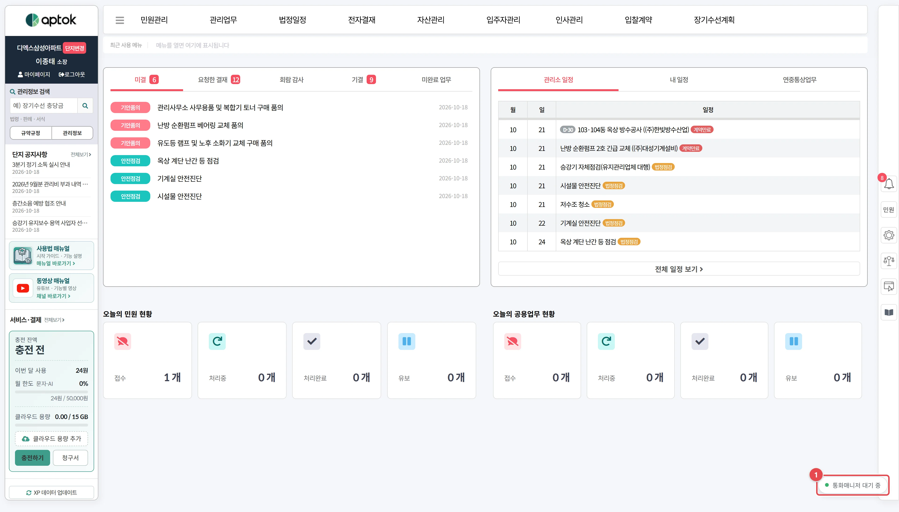
⤢ 크게 보기
오른쪽 아래에 늘 떠 있는 알림창. 「통화매니저 대기 중」을 누릅니다.
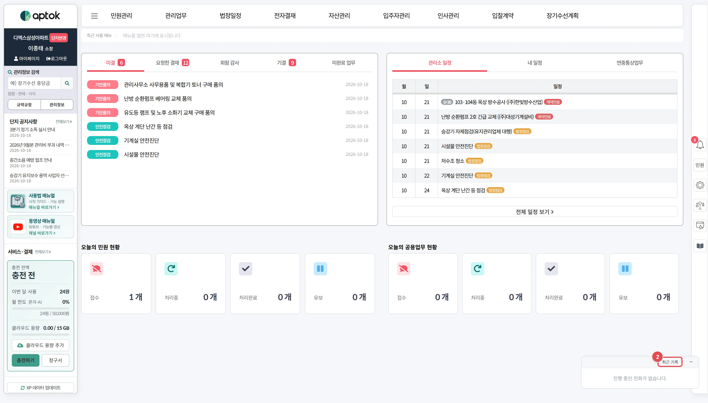
⤢ 크게 보기
알림창이 펼쳐집니다. 맨 위 최근 기록을 누르면 전체 기록이 열립니다.
핵심
이 기능의 목적은 전화를 받기 전에 상대를 아는 것이다. 번호만 뜨는 일반 전화와 달리, 어느 동 몇 호의 누구인지와 그 세대가 최근에 어떤 민원을 넣었는지가 함께 나온다. 받기 전에 상황을 알면 "누구시죠"부터 시작하지 않아도 된다. 그리고 통화가 끝나면 기록과 민원 접수가 거의 끝나 있다. 들은 내용을 다시 적을 필요가 없다.
① 알림창
기본 (대기 중)
"통화매니저 대기 중"으로 떠 있습니다. 진행 중인 전화가 없다는 뜻입니다. 누르면 위로 작은 창이 펼쳐지고, 맨 위 최근 기록으로 전체 기록을 열 수 있습니다.
수신 중
전화가 걸려오는 중입니다. 동·호수와 이름, 번호, 시각이 뜹니다.
수신 종료
통화가 끝났습니다. 통화 시각과 통화 시간이 표시됩니다.
부재중
못 받은 전화입니다. 몇 번째 부재중인지 함께 표시됩니다. "부재중 · 3회째"처럼 나오므로 같은 사람이 계속 걸고 있다는 걸 알 수 있습니다.
문자 수신
문자가 왔습니다. 내용이 함께 보이고, 사진이 있으면 개수가 표시됩니다.
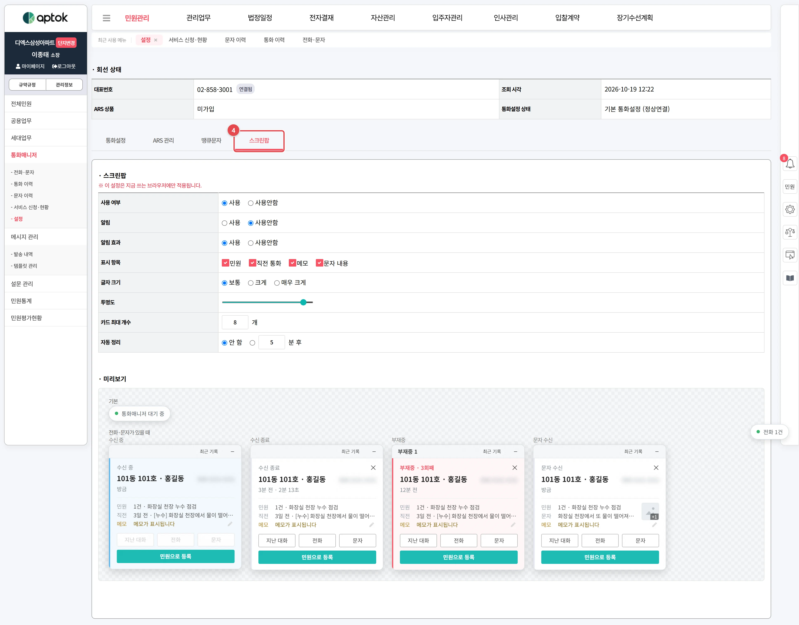
⤢ 크게 보기
설정 › 스크린팝 탭의 미리보기. 알림창이 수신 중·수신 종료·부재중·문자 수신일 때 어떻게 보이는지 한 번에 볼 수 있습니다.
② 최근 기록 — 단지 전체 통화·문자
알림창의 최근 기록을 누르면 단지 대표번호로 오간 모든 전화와 문자가 한 목록에 나온다. 휴대폰의 최근 기록처럼 날짜별로 묶여 위가 최신이다.
한 줄에 동·호수와 이름, 통화 요약이나 문자 내용, 시각이 보인다. 누구에게서 무슨 일로 왔는지 목록만 봐도 안다.
왼쪽 아이콘은 수화기(통화)와 말풍선(문자)으로 나뉘고, 작은 화살표로 받은 것·건 것을 구분한다.
붉은 이름은 못 받은 전화다. 위쪽 부재중을 누르면 못 받은 전화만 모아 본다.
등록되지 않은 번호는 번호만 나오고 등록 버튼이 붙는다. 눌러서 입주민·거래처로 등록한다.
오른쪽 위 새 문자로 번호를 넣고 바로 문자를 보낼 수 있다.
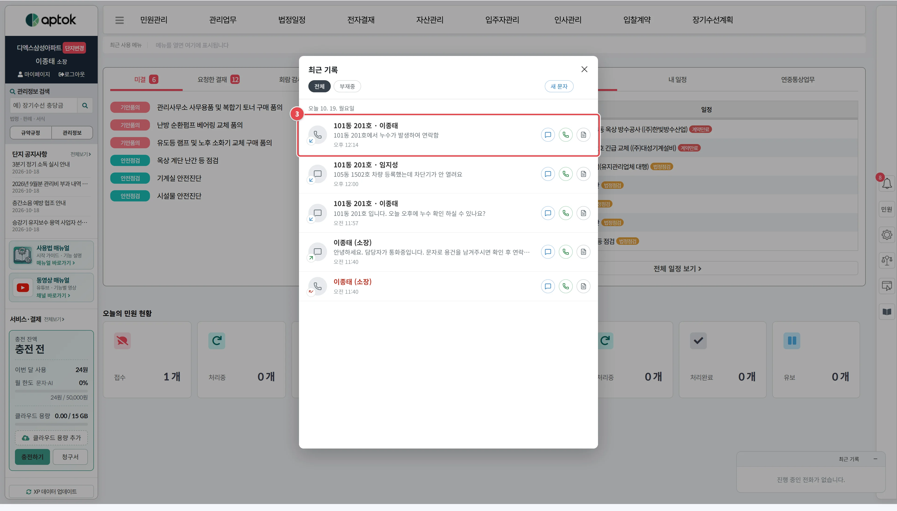
⤢ 크게 보기
최근 기록. 단지 대표번호로 오간 전화와 문자가 한 목록에 시간순으로 나옵니다. 한 사람을 누르면 대화 화면으로 갑니다.
목록의 버튼 세 개
각 줄 오른쪽에 아이콘 세 개가 있다.
말풍선 — 그 번호와의 대화 화면을 엽니다. 문자로 답장할 수 있습니다.
수화기 — 그 번호로 전화를 겁니다.
문서 — 통화 상세 화면으로 바로 갑니다. 녹취와 요약을 봅니다.
③ 대화 화면 — 한 사람과의 기록
목록에서 한 사람을 누르면 대화 화면이 열린다. 그 번호와 주고받은 문자, 걸고 받은 전화, 부재중이 카카오톡처럼 날짜별 말풍선으로 이어진다.
맨 위에 동·호수, 이름, 번호와 차단전화 버튼이 있다.
그 아래 "최근 30일 통화 1회 · 부재중 1회 · 진행 중 민원 1건"처럼 이 사람의 상황이 한 줄로 요약된다.
상대가 보낸 문자와 받은 전화는 왼쪽 흰 말풍선, 우리가 보낸 문자는 오른쪽 노란 말풍선이다.
통화 말풍선에는 통화 시간과 요약, 균열/누수 같은 분류 꼬리표가 붙는다. 누르면 통화 상세 화면으로 간다.
문자에 사진이 있으면 말풍선 안에 함께 보인다.
맨 아래 입력칸에서 바로 문자로 답장할 수 있다. Enter로 보내고 Shift+Enter로 줄바꿈한다. 90자까지 쓸 수 있다.
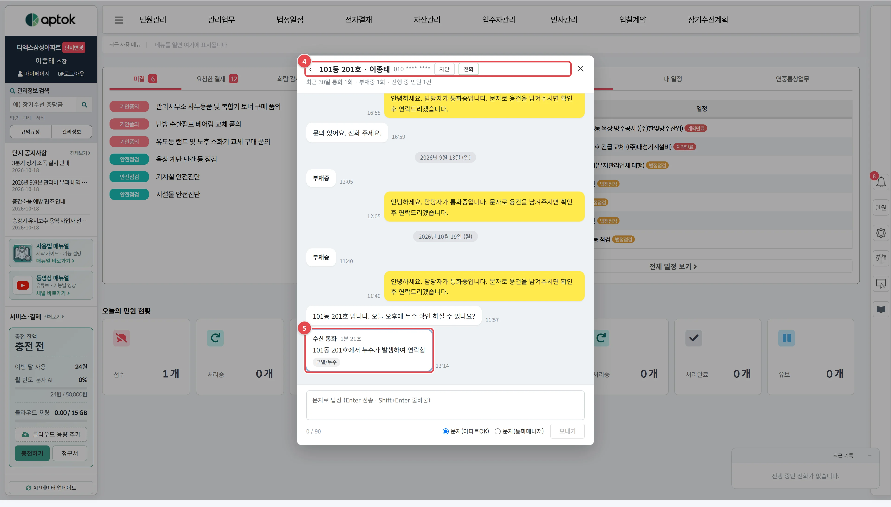
⤢ 크게 보기
대화 화면. 그 번호와 주고받은 문자·통화가 카카오톡처럼 이어집니다. 위쪽에 최근 30일 통화·부재중·진행 중 민원이 요약되고, 통화 말풍선을 누르면 상세로 갑니다.
④ 통화 상세 화면
대화 화면에서 통화 말풍선을 누르면 통화 상세 화면으로 간다.
기본 정보 — 일시, 발신·수신 구분, 통화시간, 연락처, 세대, 이름, 민원 등록 여부
녹취 — 보관 기한이 표시되고 다운로드와 보관을 할 수 있다.
스크립트 — 녹취를 재생하면서 요약하기 전의 대화 전문을 시간과 함께 읽는다. 누가 말했는지(관리사무소 / 입주민)까지 구분되어 있다.
요약 — 분류, 긴급도, 생성일시, 언급된 동·호, 요지, 요청사항이 자동으로 정리된다.
오른쪽 위 삭제민원으로 등록인쇄 버튼이 있다.
다시 요약과 스크립트 수정으로 요약을 다시 만들거나 전문을 고칠 수 있다.
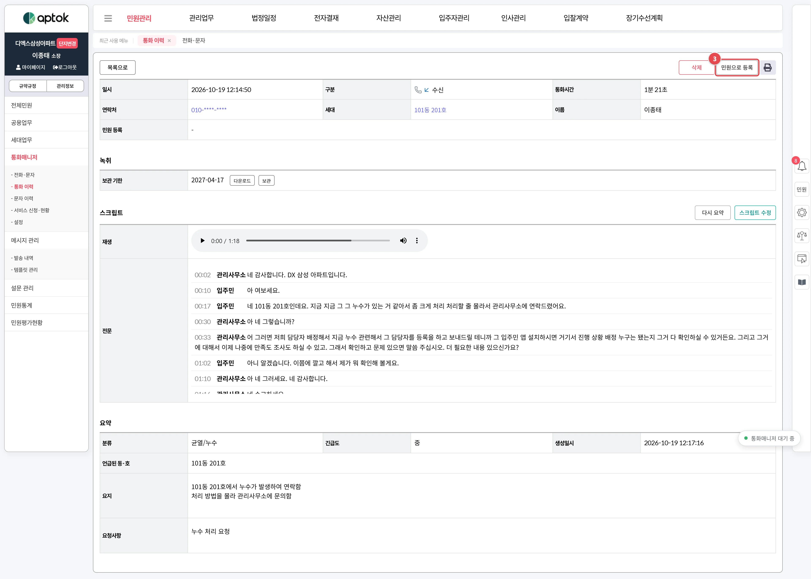
⤢ 크게 보기
통화 상세 화면. 녹취를 재생하며 전문을 읽고, 아래에서 자동 요약(분류·긴급도·언급된 동·호)을 확인합니다.
⑤ 민원으로 등록하기
상세 화면의 민원으로 등록을 누르면 작은 창이 열린다. 통화 내용이 이미 민원 형식으로 정리되어 들어가 있다.
세대 — 동·호수와 이름이 자동으로 채워진다
접수일시 — 통화한 시각이 그대로 들어간다
분류 — 요약에서 잡은 분류(관리비 등)가 붙는다
민원 내용 — "통화매니저 전화 접수" 머리말과 함께 발신·수신 구분, 시각, 상대 번호, 세대가 적히고 그 아래 통화 요약이 번호를 매겨 정리된다
아래 버튼 두 개 중 하나를 고른다.
세대업무 등록 화면 — 특정 세대의 일이면 이쪽
공용업무 등록 화면 — 단지 공용부의 일이면 이쪽
누르면 해당 등록 화면으로 넘어가고, 정리된 내용이 그대로 들어간다. 직원은 어느 쪽 업무인지만 판단하고 저장만 누르면 된다. 저장하면 통화와 민원이 서로 연결되어, 통화 상세의 민원 등록 칸에 민원글 보기가 생긴다.
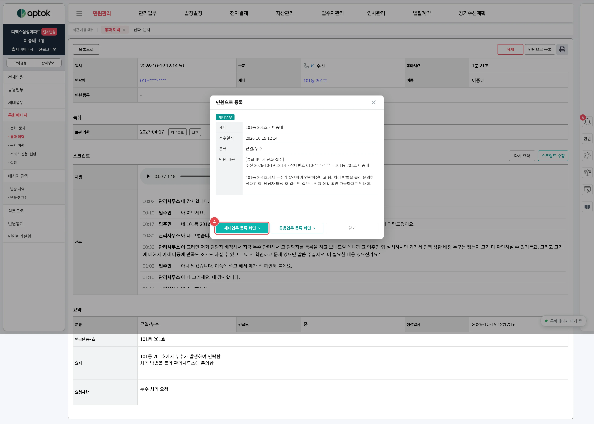
⤢ 크게 보기
민원으로 등록 창. 세대·접수일시·분류·민원 내용이 통화에서 자동으로 채워져 있습니다.
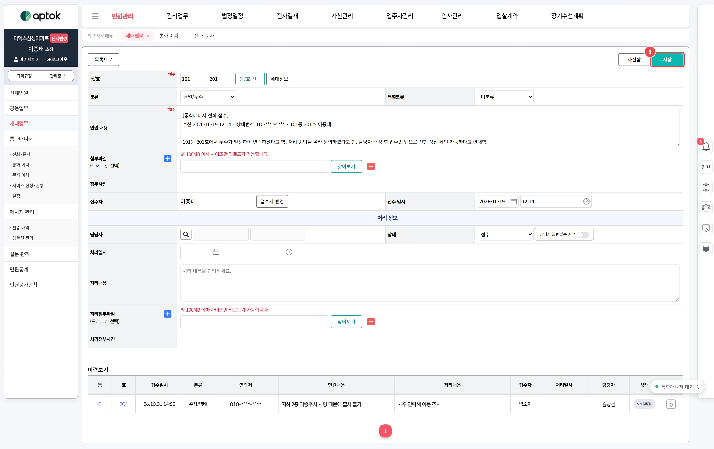
⤢ 크게 보기
세대업무 등록 화면을 누르면 내용이 채워진 등록 화면이 열립니다. 확인하고 저장만 누르면 접수가 끝납니다.
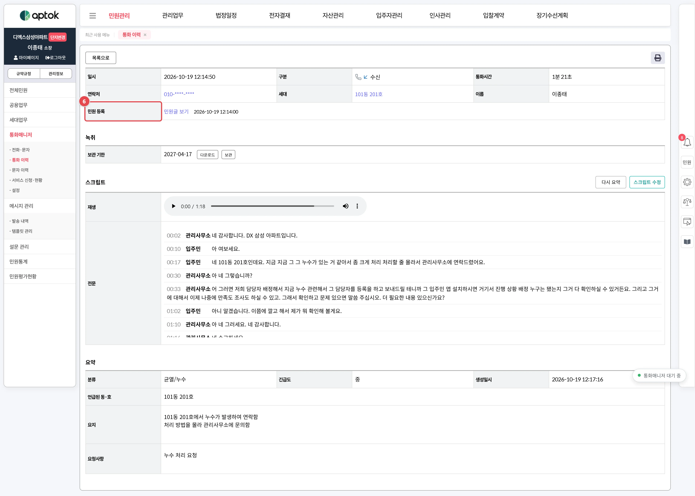
⤢ 크게 보기
저장 뒤 통화 상세의 민원 등록 칸에 민원글 보기가 생겨 통화와 민원이 서로 연결됩니다.
모르는 번호 등록하기
모르는 번호에서 연락이 오면 알림창·대화 화면의 번호 등록으로 바로 등록할 수 있다(2026-10 추가). 입주민으로(동·호·세대원), 거래처로(없으면 새 거래처로 만들기), 이름만 메모 세 가지 중 고른다. 등록하면 그 번호의 지난 통화·문자에도 이름이 붙고, 다음부터 알림창에 이름이 뜬다. 입주민 계정의 휴대폰 번호는 바뀌지 않는다. 자세한 순서는 전화·문자 화면의 '모르는 번호 등록하기'를 보자.
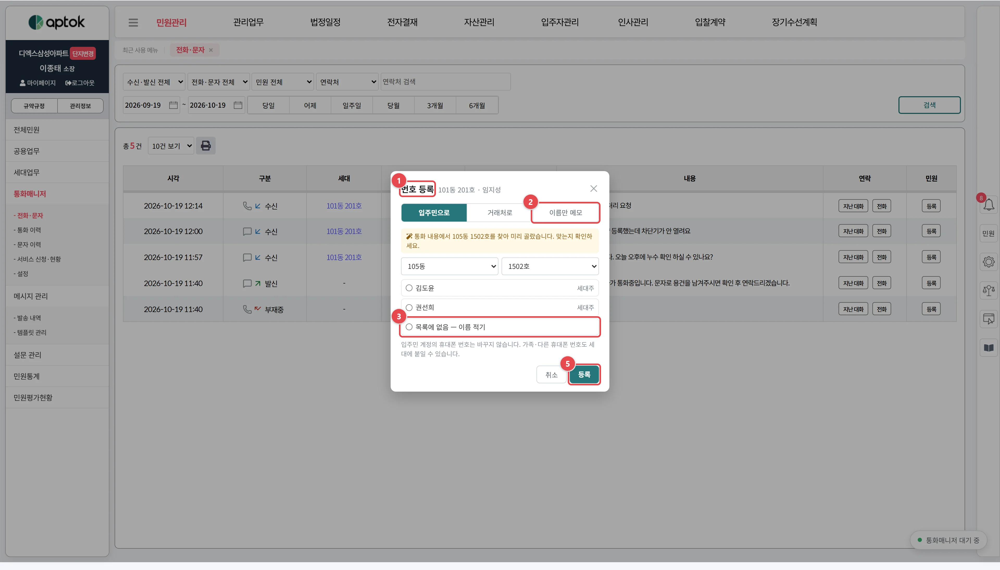
⤢ 크게 보기
번호 등록 창. 통화·문자 내용에 동·호가 나오면 미리 골라져 있습니다.
문자 답장 채널
대화 화면에서 문자로 답장할 때 문자(아파트OK)와 문자(통화매니저) 중 하나를 고른다. 문자(아파트OK)는 충전금에서, 문자(통화매니저)는 관리사무소 회선 요금으로 나간다. 메시지 채널과 요금을 참고하자.
왜 해야 하나
전화 응대는 기록이 남지 않는 것이 문제였다. 누가 무슨 말을 했는지 기억에 의존하고, 담당자가 바뀌면 그마저 사라진다. 이 기능은 통화를 녹취하고 전문으로 옮기고 요약까지 만들어 남긴다. "그때 그렇게 말했잖아요"라는 다툼이 생겼을 때 확인할 근거가 된다. 그리고 민원으로 등록으로 통화를 그대로 민원으로 접수할 수 있다. 통화 요약이 민원 내용으로 옮겨지므로, 들은 것을 다시 적을 필요가 없다.
주의
알림창은 브라우저를 닫으면 사라집니다. 전화를 받는 컴퓨터에서는 아파트ok를 열어 두세요.
등록되지 않은 번호는 동·호수와 이름이 안 나옵니다. 세대관리에 연락처가 있어야 표시됩니다.
스크린팝 설정은 컴퓨터마다 따로입니다. 자리를 옮기면 다시 설정해야 합니다.
녹취에는 보관 기한이 있습니다. 오래 두어야 할 통화는 보관하거나 다운로드하세요.
요약과 전문은 자동으로 만들어진 것이라 틀릴 수 있습니다. 중요한 건은 녹취를 직접 들어보세요.
통화 내용은 민감한 정보입니다. 열람 권한을 꼭 필요한 사람에게만 주세요.
자주 묻는 질문
전화가 왔는데 이름이 안 나옵니다.
그 번호가 등록되어 있지 않은 것입니다. 입주자관리 > 세대관리에 연락처를 넣으면 다음부터 표시됩니다.
알림창이 안 뜹니다.
설정 > 스크린팝에서 사용 여부가 켜져 있는지 확인하세요. 이 설정은 브라우저마다 따로이므로, 지금 쓰는 컴퓨터에서 켜야 합니다.
지난 통화 내용을 확인하고 싶습니다.
알림창의 최근 기록을 열고 그 사람을 누르면 대화 화면이 나옵니다. 통화를 누르면 녹취와 전문, 요약까지 볼 수 있습니다.
통화하면서 나눈 이야기를 민원으로 남기려면?
통화 상세 화면 오른쪽 위 민원으로 등록을 누르세요. 통화 내용이 이미 정리되어 들어가 있으니, 세대업무인지 공용업무인지만 고르면 됩니다.
세대업무와 공용업무 중 뭘 골라야 하나요?
특정 세대의 일이면 세대업무, 단지 공용부의 일이면 공용업무입니다. 예를 들어 한 집의 누수는 세대업무, 복도 조명 고장은 공용업무입니다.
민원으로 등록하면 통화 내용을 다시 적어야 하나요?
아닙니다. 통화 요약이 민원 내용에 그대로 들어갑니다. 발신·수신 구분, 시각, 상대 번호, 세대까지 함께 기록됩니다.
문자로 답장하려면 어디로 가야 하나요?
대화 화면 맨 아래 입력칸에서 바로 보낼 수 있습니다. 목록에서 말풍선 아이콘을 눌러도 됩니다.
녹취를 오래 보관하고 싶습니다.
통화 상세 화면의 보관을 누르거나 다운로드로 파일을 내려받으세요.
요약 내용이 틀렸습니다.
다시 요약으로 새로 만들거나 스크립트 수정으로 전문을 고칠 수 있습니다.
공통 안내
민원을 일일일지로 바로 올리기
공통 문서
하루 동안 처리한 민원을 일일일지에 옮겨 적는 일은 번거롭다. 아파트ok에는 민원 목록에서 고른 건을 일일일지 작성 화면으로 그대로 넘기는 기능이 있다. 옮겨 적을 필요가 없어진다.
핵심
민원 목록에서 처리한 건을 체크하고 오른쪽 위 일일업무보고를 누르면, 전자결재의 일일일지 작성 화면이 열리면서 고른 민원이 이미 표에 들어가 있다. 남은 일은 결재선을 고르고 제목을 적어 등록하는 것뿐이다.
어디에서 쓰나
세 화면에서 똑같이 쓸 수 있다.
민원관리 > 전체민원
민원관리 > 공용업무
민원관리 > 세대업무
어느 화면에서 시작하든 결과는 같다. 일일일지 작성 화면으로 넘어간다.
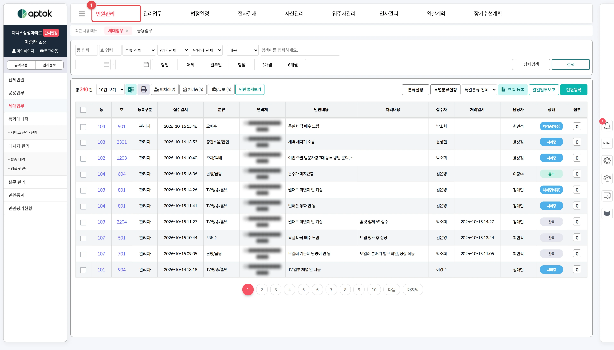
⤢ 크게 보기
세대업무 목록. 처리한 민원을 체크한 뒤 툴바의 일일업무보고를 누르면 일일일지 작성 화면으로 넘어갑니다.
하는 방법
① 민원 고르기
목록 왼쪽 체크칸에 오늘 보고할 민원을 표시합니다. 여러 건을 함께 고를 수 있습니다.
② 일일업무보고 클릭
오른쪽 위 일일업무보고 버튼을 누릅니다.
③ 자동으로 넘어감
전자결재 > 일일보고 > 일일일지 작성 화면이 열립니다. 고른 민원이 아래 표에 구분·세대·접수일시·분류·민원내용·처리내용· 접수자·처리일시·담당자·상태·첨부까지 그대로 들어가 있습니다.
④ 나머지 채우기
결재선을 고르고, 분류와 업무일자와 제목을 적습니다. 필요하면 공용업무 추가나 세대민원 추가로 빠뜨린 건을 더 넣습니다.
⑤ 등록
등록을 눌러 결재를 올립니다.
작성 화면에서 할 수 있는 것
공용업무 추가 / 세대민원 추가
작성 화면에서도 민원을 더 넣을 수 있습니다. 민원 목록으로 되돌아가지 않아도 됩니다.
선택 삭제
잘못 들어온 건을 표에서 뺍니다. 민원 자체가 지워지는 것은 아닙니다.
본문 편집기
표 아래에 글을 쓰는 편집기가 있습니다. 민원 목록만으로 부족한 설명이나 그날의 특이사항을 적습니다.
사진함 · 첨부파일
오른쪽 위 사진함으로 사진을 붙이고, 첨부파일로 문서를 올립니다. 파일 하나당 100MB 이하만 가능합니다.
일일일지는 매일 써야 하는 문서다. 민원을 손으로 옮겨 적으면 시간도 걸리고 빠뜨리기도 쉽다. 이 기능을 쓰면 목록에서 체크만 하면 되고, 접수 시각과 처리 내용이 그대로 넘어가므로 적으면서 생기는 오류가 없다.
주의
체크하지 않고 일일업무보고를 누르면 빈 일지가 열립니다. 먼저 고르세요.
작성 화면에서 선택 삭제로 뺀 것은 일지에서만 빠집니다. 민원 자체는 그대로 남습니다.
임시저장과 등록은 다릅니다. 등록해야 결재가 올라갑니다.
이미 다른 일지에 넣은 민원을 또 넣지 않도록 확인하세요.
자주 묻는 질문
오늘 처리한 민원을 일지에 옮겨 적어야 하나요?
아닙니다. 민원 목록에서 체크하고 일일업무보고를 누르면 일일일지 작성 화면에 그대로 들어갑니다.
공용업무와 세대업무를 함께 넣고 싶습니다.
전체민원에서 두 가지를 함께 고르거나, 작성 화면에서 공용업무 추가와 세대민원 추가로 더 넣으면 됩니다.
일지에 들어간 민원을 빼고 싶습니다.
표에서 체크하고 선택 삭제를 누르세요. 민원 자체는 지워지지 않습니다.
민원 말고 다른 내용도 적고 싶습니다.
표 아래 편집기에 자유롭게 쓰면 됩니다.
공통 안내
장기수선계획 한눈에 보기
공통 문서
장기수선계획 메뉴는 종이·엑셀로 갖고 있던 장기수선계획서를 시스템에 옮기고, 3년마다 하는 정기조정과 장기수선충당금 지출까지 한 곳에서 이어서 처리하는 메뉴다. 화면이 많지만 순서는 하나다. 처음이라면 이 문서를 먼저 읽자.
핵심
모든 것은 계획 회차 하나에서 시작한다. 처음 한 번 전기 계획 개통으로 지금 쓰는 계획서를 옮겨 담으면, 그 뒤로는 그 회차를 고쳐 새 조정안을 만들고(조정안 작성), 입주자대표회의 의결 뒤 마감해서 확정한다. 확정된 계획은 시설보수 지출품의의 근거가 되고, 결재가 끝난 지출은 적립·사용현황에 자동으로 쌓인다.
순서
① 전기 계획 개통 (처음 한 번)
지금 쓰는 장기수선계획서(엑셀의 「검토서」 시트)를 올려 계획 회차를 만듭니다. 조정 이력 › 전기 계획 개통
② 조정안 작성 6단계
단지 기본정보 → 총론(긴급·소액지출 등) → 검토서 → 총괄표 → 3년 이내 공사 → 마감. 앞 단계를 끝내야 다음 단계가 열립니다.
③ 입주자대표회의 의결 → 마감
의결일·찬성 수를 넣고 마감하면 그 조정안이 확정본이 되고 조정 이력에 남습니다. 다음 정기조정 기한(3년 뒤 같은 달)이 정해집니다.
④ 시설보수 지출품의
장기수선충당금을 쓸 때 전자결재 › 시설보수 지출품의로 품의를 올립니다. 수선 예정 연도가 된 항목은 '계획집행', 그 밖에는 총론에 정해 둔 '예외지출'입니다.
⑤ 적립·사용현황
결재가 끝난 지출이 ③ 사용내역에 자동으로 들어갑니다. ② 적립내역만 직접 적고 인쇄해서 게시·보고합니다.
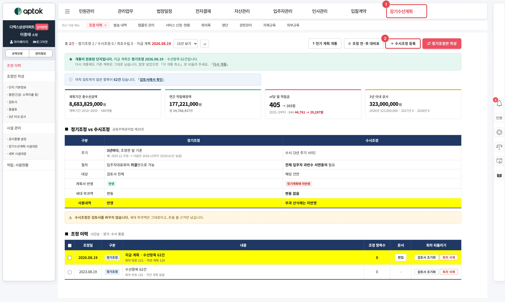
⤢ 크게 보기
출발점은 조정 이력입니다. 회차별 계획과 지금 쓰는 계획(현재 계획)이 여기 모입니다.
화면 구성
조정 이력
출발점. 지금 계획의 요약(총수선금액·연간 적립예정액·㎡당 월 적립금·3년 이내 공사)과 회차 목록. 개통·수시조정·대비표·정기조정안 작성 버튼이 여기 있습니다.
조정안 작성
단지 기본정보 · 총론 · 검토서 · 총괄표 · 3년 이내 공사. 화면 위 6칸 진행표에서 어디까지 했는지 보입니다.
시설 관리
공사종별 설정(주기·수선율 기준값), 장기수선계획 시설대장(공사종별 단위), 세부 시설대장(시설 하나하나와 수선이력).
적립·사용현황
공동주택관리규약 준칙 서식(별지 제20호)대로 만든 장기수선충당금 적립·사용 현황.
전자결재 › 시설보수 지출품의
장기수선충당금 등 시설 공사 비용의 품의. 결재가 끝나면 적립·사용현황과 시설 수선이력에 반영됩니다.
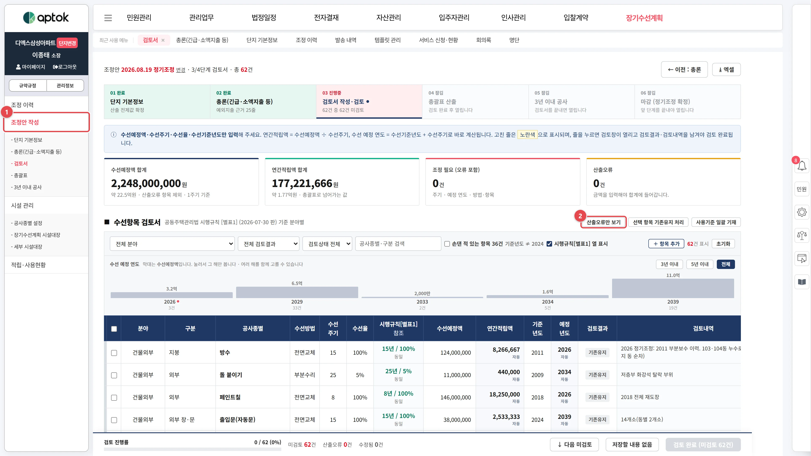
⤢ 크게 보기
조정안의 중심인 검토서. 공사종별마다 수선주기·수선율·금액과 검토내역을 적습니다.
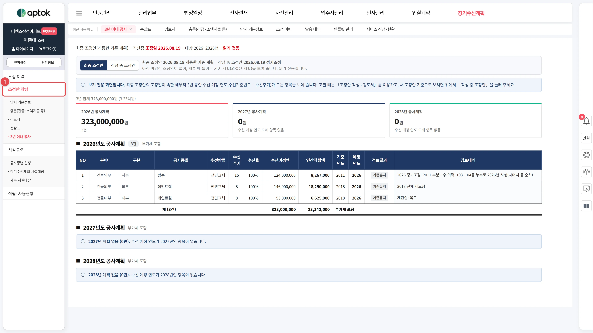
⤢ 크게 보기
3년 이내 공사는 앞으로 3년 동안 할 공사와 금액을 연도별로 보여 줍니다.
정기조정과 수시조정
정기조정
3년마다(조정한 달 기준). 입주자대표회의 의결만으로 가능. 검토서 전체를 다시 보고 세대 부과액이 바뀔 수 있습니다. 정기조정안 작성
수시조정
3년 주기 사이에 특정 항목만. 전체 입주자 과반수 서면동의가 필요합니다. 검토서·세대 부과액은 바뀌지 않고, 돈을 쓸 근거만 남습니다. 수시조정 등록
값의 세 단계
공사종별의 수선주기·수선율은 세 층으로 관리된다.
① 시행규칙별표1 기준 — 법정 69개 항목, 아파트OK가 개정 때 갱신(고칠 수 없음)
② 이 단지가 쓰는 값 — 공사종별 설정에서 관리. 개통·마감 때 확정값으로 맞춰짐
③ 검토서 확정값 — 입주자대표회의 의결로 정해진 값(참조만)
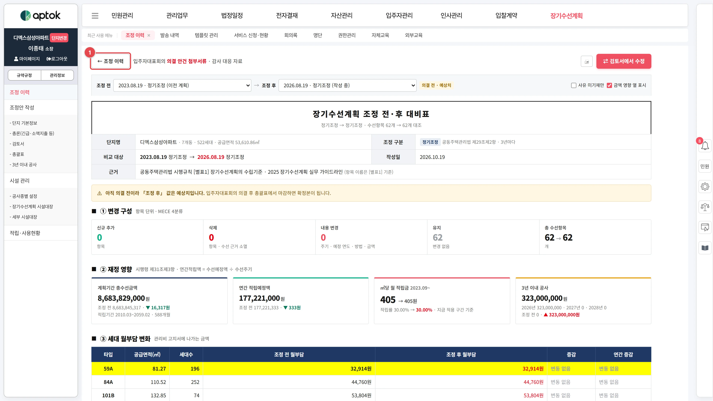
⤢ 크게 보기
조정 전·후 대비표에서 이전 계획과 바뀐 값을 나란히 비교합니다.
왜 해야 하나
수선 예정 연도를 벗어나 장기수선충당금을 쓰면(앞당기든 늦추든) 1천만원 이하의 과태료 대상이 될 수 있다(공동주택관리법 제102조 제2항). 그래서 예외로 쓸 수 있는 경우(긴급공사·소액지출·부대비용·기타)를 총론에 미리 정해 두고, 지출품의는 그 근거를 골라야 올라가도록 되어 있다.
근거 법령
공동주택관리법 제29조(장기수선계획), 제102조 제2항(과태료)
공동주택관리법 시행규칙 별표1 장기수선계획의 수립기준 (2026-07-30 개정판 반영)
공동주택관리법 시행령 제31조 제3항(장기수선충당금 적립)
공동주택관리규약 준칙 제69조 제1항, 별지 제20호 서식
2025 장기수선계획 실무 가이드라인
주의
판단이 필요한 부분(수선주기 조정, 예외지출 요건 등)은 이 매뉴얼이 정하지 않습니다. 장기수선계획 검토 업체나 관할 지자체 기준을 확인하세요.
마감은 관리소장만 해제할 수 있고, 해제할 때 본인 비밀번호를 다시 확인합니다. 의결 기록은 해제해도 지워지지 않습니다.
공통 안내
메시지 채널과 요금
공통 문서
입주민에게 보내는 메시지는 세 가지 길로 나간다. 알림톡(카카오톡), 문자(아파트OK), 문자(통화매니저). 받는 조건, 요금, 요금 내는 곳이 서로 다르다. 보내기 전에 어느 길이 맞는지 고르는 기준을 정리했다.
핵심
알림톡과 문자(아파트OK)는 충전금에서 빠진다. 미리 충전해 두어야 보낼 수 있다. 문자(통화매니저)는 충전금과 상관없다. KT가 관리사무소 통신요금으로 따로 청구하고, 대신 한 달·하루 보낼 수 있는 건수가 정해져 있다.
채널 세 가지
알림톡(카카오톡)
건당 12원(부가세 별도), 글자 수와 무관. 카카오톡을 쓰는 세대만 받고, 못 받아도 문자로 대신 보내지 않음. 카카오가 승인한 문안(템플릿)만 보낼 수 있음. 발신은 @아파트오케이 채널.
문자(아파트OK)
단문 12원 · 장문 35원 · 그림 85원(부가세 별도). 충전금에서 빠짐. 단문은 90byte(한글 약 45자)까지, 넘으면 장문(2,000byte까지), 사진을 붙이면 그림 문자.
문자(통화매니저)
단문 16.5원 · 장문 33원 · 그림 110원(부가세 포함, 후불). KT가 관리사무소 통신요금으로 청구. 통화매니저 회선이 있는 단지만. 단문은 80byte(한글 약 40자)까지. 한 달·하루 보낼 수 있는 건수가 정해져 있음.
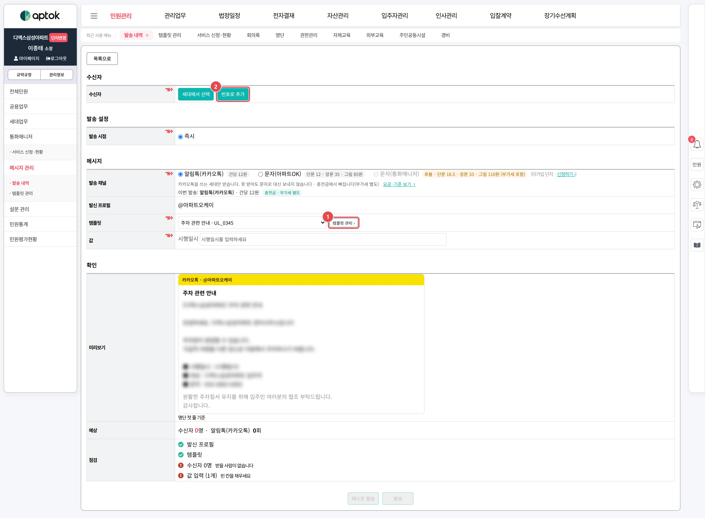
⤢ 크게 보기
메시지 발송 화면. 받는 사람과 채널(알림톡·문자 등)을 고르고 내용을 씁니다.
어느 채널로 보낼까
모든 세대가 꼭 받아야 하는 안내 (단수·정전 등)
문자. 알림톡은 카카오톡이 없는 세대가 못 받습니다.
정기적인 공지, 비용을 아끼고 싶을 때
알림톡. 승인된 템플릿이 있어야 합니다.
충전금 없이 보내야 할 때, 관리사무소 번호로 보내고 싶을 때
문자(통화매니저). 회선 문자 한도 안에서 보낼 수 있습니다.
돈의 흐름
충전은 이용요금·결제에서 1만·3만·5만원 단위로 신청하고 입금합니다(부가세를 더한 11,000·33,000·55,000원). 입금이 확인되면 그날 충전금이 들어가고 세금계산서가 발급됩니다. 잔액이 모자라면 보내지 않습니다. 단, 긴급 문자는 잔액 −10,000원까지 보낼 수 있고 다음 충전 때 먼저 채워집니다. 이용요금·결제 › 설정에서 월 사용 한도를 정해 두면, 한도에 닿은 달에는 더 보내지 않습니다.
숫자가 이상할 때
보낸 결과와 건수는 발송 내역에서, 실제로 빠진 금액은 이용요금·결제 › 사용 내역에서 봅니다. 발송 내역의 '예상 요금'은 성공·전송 중인 건만 센 값이라 실제 사용 내역과 조금 다를 수 있습니다.
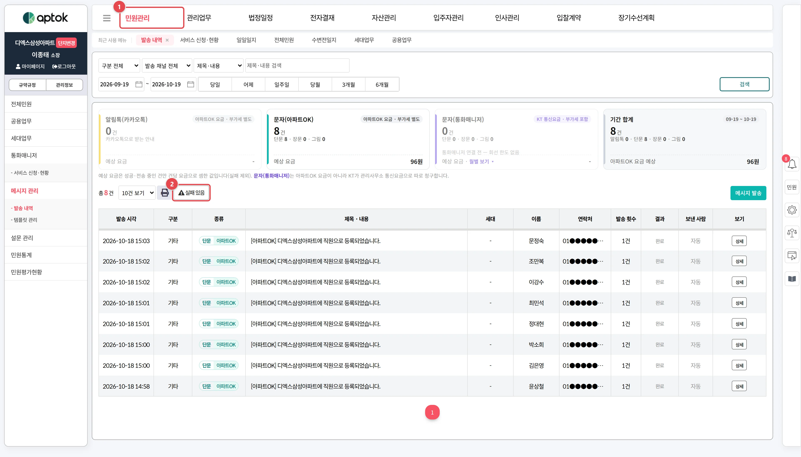
⤢ 크게 보기
발송 내역에서 채널별 발송 건수와 결과를 확인합니다. 요금은 보낸 건수만큼 나갑니다.
공통 안내
목록 화면 공통 사용법
공통 문서
아파트ok의 목록 화면은 생김새가 거의 같다. 검색 조건을 걸어 찾고, 표에서 확인하고, 새로 등록하는 흐름이 반복된다. 이 문서를 한 번 익히면 공용업무·세대업무·문서수불·저장품 등 대부분의 화면을 같은 방식으로 쓸 수 있다.
화면 구성
검색바
화면 맨 위. 조건을 걸어 원하는 건을 찾는다.
툴바
표 바로 위. 건수 확인, 내려받기, 새로 만들기 버튼이 모여 있다.
표
실제 목록. 한 줄이 한 건이다.
페이지
표 아래 숫자. 다음 장으로 넘어간다.
⤢ 크게 보기
목록 화면 예: 세대업무. 위에서부터 검색바 · 툴바(상태 버튼, 엑셀, 등록) · 표 · 페이지 순서입니다.
조건을 걸어 찾기
드롭다운에서 분류·상태·접수자·담당자를 고릅니다.
검색어 칸에 찾을 내용을 입력합니다.
오른쪽 검색을 클릭합니다.
조건을 더 세밀하게 걸려면 상세검색을 사용합니다.
기간 빠르게 지정하기
날짜 칸에 직접 입력하거나, 옆의 당일어제일주일당월3개월6개월 버튼을 클릭합니다.
버튼을 누르면 날짜 칸이 자동으로 채워집니다.
처리 상태별로 골라보기
툴바의 미처리처리중유보 버튼을 클릭합니다.
버튼 괄호 안 숫자가 각 상태의 건수입니다. 미처리 건수가 곧 오늘 해야 할 일의 개수입니다.
한 번에 볼 개수 바꾸기
툴바 왼쪽 10건 보기 드롭다운에서 개수를 고릅니다.
엑셀로 내려받기 / 인쇄하기
툴바의 엑셀 아이콘 또는 인쇄 아이콘을 클릭합니다.
화면에 보이는 목록이 그대로 저장됩니다. 먼저 검색으로 범위를 좁힌 뒤 내려받으세요.
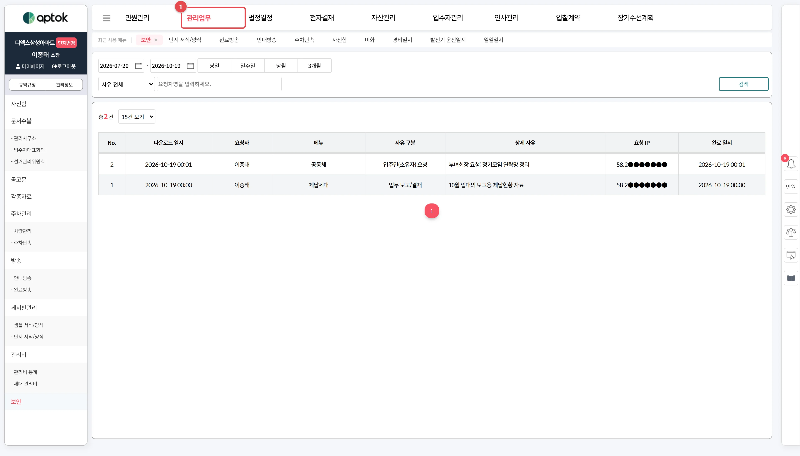
⤢ 크게 보기
엑셀을 내려받으면 사유를 적는 창이 먼저 뜨고, 누가 언제 왜 받았는지가 관리업무 › 보안에 남습니다.
엑셀로 한꺼번에 등록하기
툴바의 엑셀 등록을 클릭합니다.
새로 만들기
툴바 오른쪽 끝 등록을 클릭하면 입력 화면으로 넘어갑니다.
입력 화면에도 등록 버튼이 있습니다. 목록의 등록은 "새로 만들기", 입력 화면의 등록은 "저장하기"입니다. 이름은 같지만 하는 일이 다릅니다.
첨부파일 확인하기
표 맨 오른쪽 숫자가 그 건에 붙은 첨부파일 개수입니다.
목록으로 돌아가기
입력·상세 화면 왼쪽 위 목록을 클릭합니다.
저장하지 않고 목록을 누르면 입력한 내용이 사라집니다.
주의
검색 조건을 걸어둔 상태에서 내려받기를 하면 조건에 맞는 건만 저장됩니다. 전체가 필요하면 조건을 먼저 비우세요.
화면마다 툴바에 있는 버튼이 조금씩 다릅니다. 없는 버튼은 그 화면에 해당 기능이 없다는 뜻이거나, 권한이 없다는 뜻입니다.
자주 묻는 질문
버튼이 안 보입니다.
인사관리 > 권한관리에서 해당 메뉴의 권한이 켜져 있는지 확인합니다.
등록한 건이 목록에 안 보입니다.
검색 조건이나 기간이 걸려 있는지 확인하고, 조건을 비운 뒤 다시 검색합니다.
공통 안내
일일보고 작성 공통 사용법
6개 화면 공통
일일보고는 매일 설비와 근무 상황을 기록해 결재를 올리는 곳이다. 수변전일지, 발전기 운전일지, 난방일지, 소방일지, 경비일지, 일일일지 여섯 가지가 있고 적는 내용만 다를 뿐 쓰는 방법은 같다.
핵심
화면이 둘로 나뉜다. 목록 화면에서 지금까지 쓴 일지를 보고, 오른쪽 위 일지작성을 누르면 작성 화면이 열린다. 작성 화면은 결재선 지정과 일지 내용 입력이 한 장에 붙어 있다.
시작하기 전에
일지를 처음 열면 안내창이 뜰 수 있다. "단지정보 > 기본정보의 전기, 난방, 수도 검침일이 선택되지 않았습니다"처럼 나오면 단지 기본정보를 먼저 채워야 한다. 검침일이 없으면 월 누계가 계산되지 않는다.
목록 화면
조회 조건
상태와 문서선택으로 걸러 보고, 제목이나 내용으로 검색합니다. 기간도 지정할 수 있습니다.
상태 버튼
상신 · 미결 · 진행중 · 반려 · 회수함 · 승인함으로 나눠 봅니다.
목록 항목
번호, 제목, 작성자, 작성일시, 결재현황
결재현황
"1 / 4"처럼 몇 명이 결재했는지 나옵니다. 돋보기를 누르면 누가 결재했는지 봅니다.
엑셀 · 인쇄
목록을 내려받거나 출력합니다.
일지작성
오른쪽 위 버튼입니다. 새 일지를 씁니다.
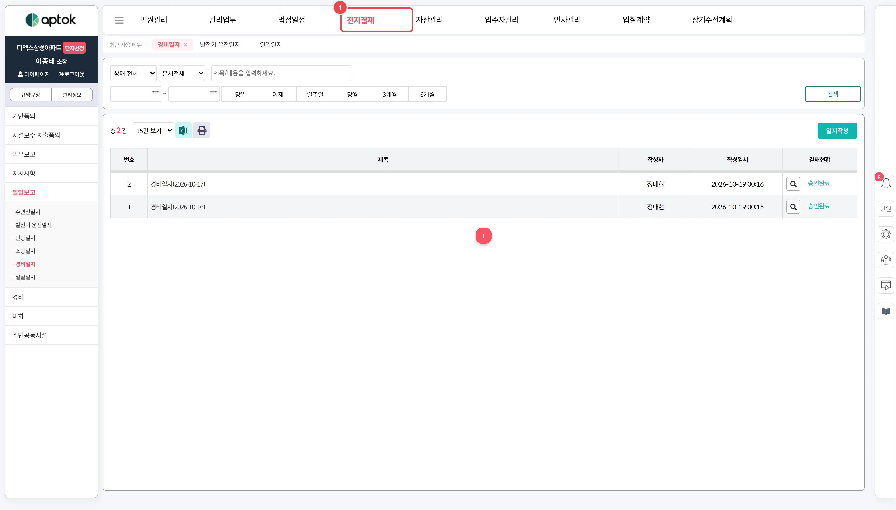
⤢ 크게 보기
일지 목록 예: 경비일지. 날짜별 일지와 결재현황(승인완료)이 나오고, 오른쪽 위 일지작성으로 새로 씁니다.
작성 화면
결재란
화면 오른쪽 위에 소장·과장·동대표 등 결재자가 이름과 함께 표시됩니다. 누가 결재할지 한눈에 보입니다.
점검단지
공통과 1~20단지 중에 고릅니다. 다른 일지에서 복사할 때 선택한 단지의 자료만 넘어옵니다.
결재여부 · 결재선
미리 만들어 둔 결재선을 고릅니다. 결재자 지정으로 직접 정할 수도 있고, 결재순서설정으로 순서를 바꿉니다. 결재자만 보기와 결재라인 보기로 표시를 바꿉니다.
점검일 · 날씨
날짜를 정하고 날씨를 맑음·흐림·비·눈·기타 중에 고릅니다.
최근 일지 복사
지난번 일지를 그대로 불러옵니다. 매일 비슷한 값을 적는 일지라면 이게 가장 빠릅니다.
초기화
입력한 내용을 모두 지웁니다.
데이터 불러오기
기존에 등록한 자료에서 전일지침과 배율을 가져옵니다.
임시저장 · 등록
임시저장은 결재를 올리지 않고 저장만 합니다. 등록을 눌러야 결재가 올라갑니다.
목록
왼쪽 위 버튼으로 목록으로 돌아갑니다. 저장하지 않고 나가면 입력이 사라집니다.
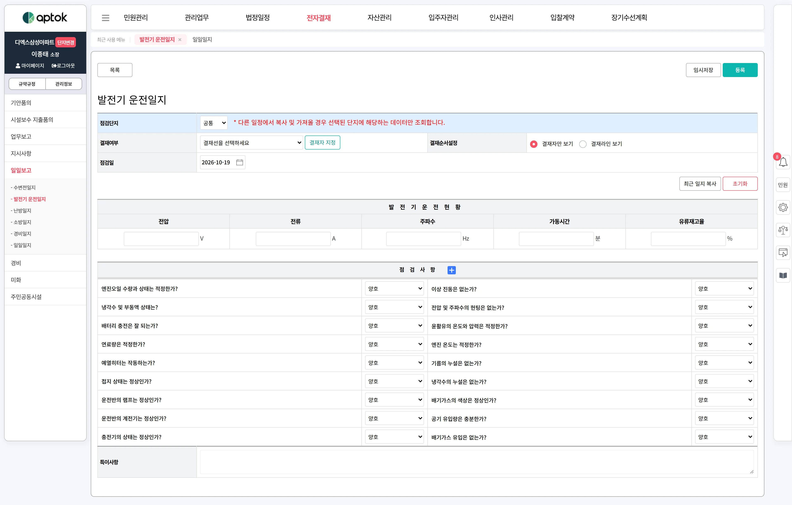
⤢ 크게 보기
작성 화면 예: 발전기 운전일지. 위쪽에 결재선·점검일, 가운데 수치 표, 아래 점검사항이 한 장에 있습니다. 최근 일지 복사로 지난 일지를 불러옵니다.
자동으로 계산되는 값
수치를 적는 일지는 계산이 자동이다. 화면 안내에 규칙이 적혀 있다.
전일지침과 금일지침을 넣으면 지침차가 자동으로 나온다.
전일지침, 금일지침, 배율을 넣으면 사용량과 월 누계가 자동으로 나온다.
지침차, 사용량, 월누계는 직접 입력할 수 없다. 계산 결과만 표시된다.
월 누계액은 단지 기본정보에 등록된 검침일을 기준으로 기간을 잡아 산출한다.
작성 화면 열기
목록 화면 오른쪽 위 일지작성을 클릭합니다.
안내창이 뜨면 내용을 확인하세요. 선행 설정이 빠졌다는 뜻일 수 있습니다.
지난 일지 불러오기
최근 일지 복사를 클릭합니다.
매일 비슷한 값을 적는 일지라면 이걸로 시작해 바뀐 부분만 고치는 편이 빠릅니다. 점검단지를 먼저 고르세요. 고른 단지의 자료만 넘어옵니다.
결재선 정하기
미리 만들어 둔 결재선을 고릅니다.
직접 정하려면 결재자 지정을 클릭합니다.
순서를 바꾸려면 결재순서설정을 사용합니다.
저장하거나 올리기
아직 덜 썼으면 임시저장을 클릭합니다.
결재를 올리려면 등록을 클릭합니다.
임시저장만 하면 결재가 올라가지 않습니다.
주의
임시저장과 등록은 다릅니다. 등록해야 결재가 올라갑니다.
왼쪽 위 목록을 누르면 저장하지 않고 나갑니다. 쓰던 내용이 사라집니다.
지침차·사용량·월누계는 직접 못 고칩니다. 값이 이상하면 전일지침이나 배율을 확인하세요.
월 누계가 안 맞으면 단지 기본정보의 검침일 설정을 확인하세요.
점검단지를 고르지 않고 복사하면 원하는 자료가 안 넘어올 수 있습니다.
자주 묻는 질문
일지를 쓰려는데 검침일이 없다는 안내가 뜹니다.
단지정보 > 기본정보에서 전기·난방·수도 검침일을 먼저 지정하세요. 검침일이 없으면 월 누계가 계산되지 않습니다.
매일 같은 값을 적는데 더 빠른 방법이 없나요?
최근 일지 복사로 지난 일지를 불러온 뒤 바뀐 부분만 고치면 됩니다.
사용량이 계산되지 않습니다.
전일지침, 금일지침, 배율 세 가지가 모두 들어가야 계산됩니다.
지침차를 직접 고치고 싶습니다.
고칠 수 없습니다. 전일지침과 금일지침으로 자동 계산되는 값입니다. 잘못됐다면 지침 값을 바로잡으세요.
임시저장했는데 결재가 안 올라갔습니다.
임시저장은 저장만 하는 기능입니다. 등록을 눌러야 결재가 올라갑니다.
민원관리›전체민원
전체민원
패턴 A권한 · 민원관리
공용업무와 세대업무를 한곳에서 보고 일일일지로 넘긴다
핵심
공용업무와 세대업무가 따로 있지만, 이 화면에서는 둘을 한꺼번에 본다. 오늘 무슨 민원이 있었는지 전체를 훑을 때 쓴다. 고른 민원을 일일일지로 바로 넘길 수 있어서, 하루 마무리에 쓰는 화면이기도 하다.
기본 조작은 목록 화면 공통 사용법에 정리되어 있습니다. 아래에는 이 화면에만 해당하는 내용만 적었습니다.
표에 보이는 항목
구분
세대
등록구분
접수일시
분류
민원내용
처리내용
접수자
처리일시
담당자
상태
첨부
이 화면에만 있는 기능
상태별 건수 버튼
미처리처리중유보 버튼에 괄호로 건수가 나옵니다. 미처리 건수가 곧 오늘 해야 할 일의 개수입니다.
상태 표시
접수 · 안내종결 · 완료 · 완료(외주) 등으로 표시됩니다. 붉은 접수는 아직 손대지 않은 건입니다.
일일업무보고
오른쪽 위 버튼입니다. 체크한 민원을 일일일지 작성 화면으로 그대로 넘깁니다. 자세한 방법은 민원을 일일일지로 바로 올리기 문서를 참고하세요.
엑셀 · 인쇄
조회된 목록을 내려받거나 출력합니다.
따라 하기
1
상단 민원관리를 클릭한 뒤 전체민원을 클릭합니다.
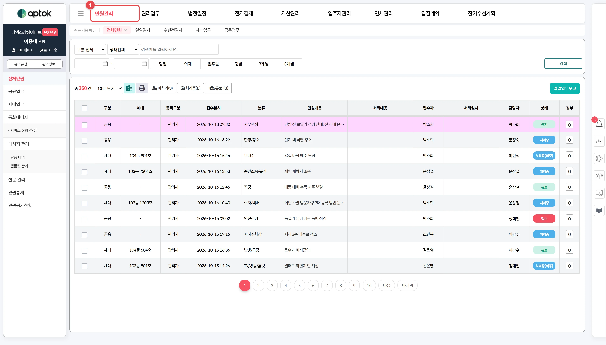
⤢ 크게 보기
2
구분·상태·기간으로 원하는 민원을 찾습니다.
기간은 당일어제일주일당월3개월6개월 버튼으로 빠르게 지정합니다.
3
일일일지에 올릴 민원을 체크하고 오른쪽 위 일일업무보고를 클릭합니다.
일일일지 작성 화면이 열리면서 고른 민원이 이미 들어가 있습니다.
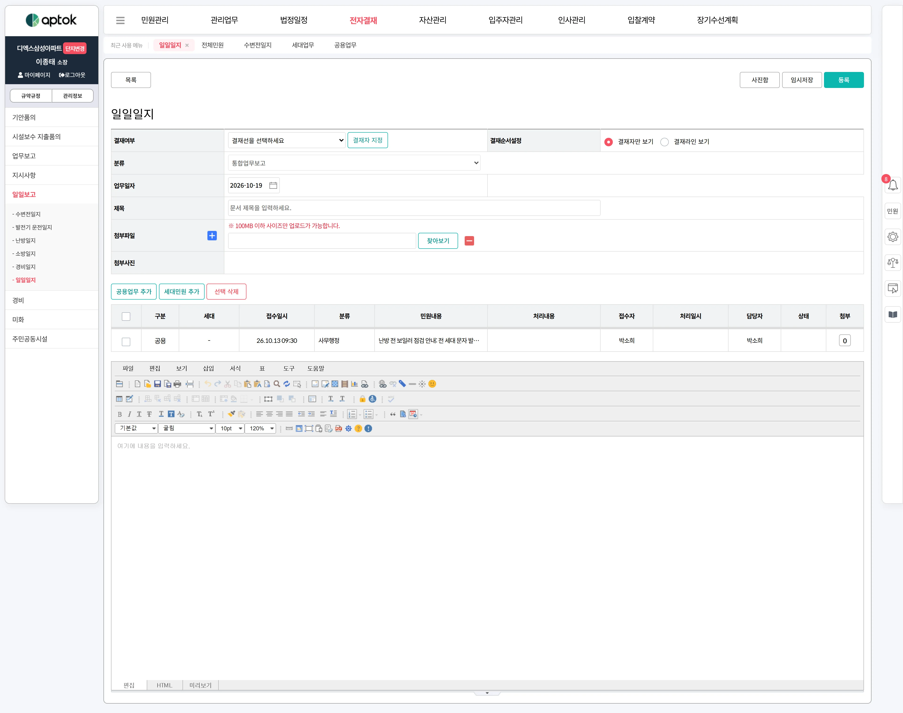
⤢ 크게 보기
주의
체크하지 않고 일일업무보고를 누르면 빈 일지가 열립니다.
삭제한 민원은 복구되지 않습니다.
자주 묻는 질문
공용업무와 세대업무를 따로 봐야 하나요?
이 화면에서 함께 볼 수 있습니다. 구분 열로 어느 쪽인지 알 수 있습니다.
오늘 처리한 민원을 일지에 어떻게 넣나요?
체크하고 일일업무보고를 누르면 일일일지 작성 화면으로 그대로 넘어갑니다. 옮겨 적을 필요가 없습니다.
민원관리›공용업무
공용업무 — 목록
패턴 A권한 · 관리업무 > 열람
단지 전체에 해당하는 업무를 접수하고, 누가 언제 처리했는지 남긴다. 세대 한 곳의 일은 세대업무에, 단지 공용부의 일은 여기에 기록한다.
메뉴 이동 안내
2026년 8월 31일부터 이 화면은 관리업무가 아니라 민원관리 아래로 옮겨졌다. 기존 자료는 그대로이며 문서번호와 검색 결과도 동일하다.
기본 조작은 목록 화면 공통 사용법에 정리되어 있습니다. 아래에는 이 화면에만 해당하는 내용만 적었습니다.
표에 보이는 항목
접수일시
분류
업무내용
처리내용
접수자
처리일시
담당자
상태
첨부
이 화면에만 있는 기능
공용업무 통계보기
접수·처리 건수를 집계해 보여줍니다.
분류 설정 / 특별분류 설정
업무를 나누는 기준을 단지 사정에 맞게 직접 만듭니다. 처음 도입할 때 이것부터 정해두면 나중에 통계가 의미 있게 나옵니다.
일일업무보고
체크한 민원을 일일일지 작성 화면으로 그대로 넘깁니다. 전자결재 > 일일보고 > 일일일지가 열리면서 고른 민원이 표에 들어가 있습니다. 자세한 방법은 민원을 일일일지로 바로 올리기 문서를 참고하세요.
따라 하기
1
상단 민원관리를 클릭한 뒤 왼쪽 목록에서 공용업무를 클릭합니다.
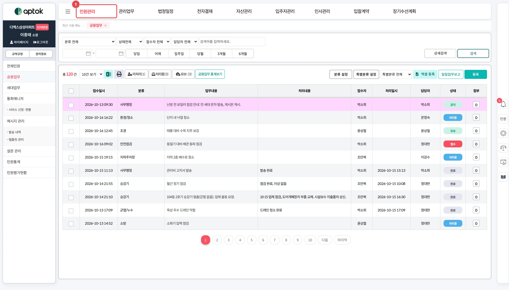
⤢ 크게 보기
2
기본으로 최근 접수 건이 위에 오는 목록이 나옵니다.
검색·기간·상태 필터 사용법은 목록 화면 공통 사용법을 참고하세요.
자주 묻는 질문
세대업무와 뭐가 다른가요?
단지 공용부에 해당하는 일은 공용업무, 특정 세대의 일은 세대업무에 기록합니다.
관리업무에 있던 공용업무가 안 보입니다.
2026년 8월 31일부터 민원관리 메뉴로 옮겨졌습니다. 상단 메뉴 맨 앞에 있습니다. 자료는 그대로입니다.
분류를 우리 단지에 맞게 바꾸고 싶습니다.
툴바의 분류 설정에서 항목을 직접 추가합니다.
오늘 처리한 업무를 일지에 넣으려면?
목록에서 체크하고 일일업무보고를 누르면 일일일지 작성 화면으로 넘어갑니다. 고른 업무가 이미 들어가 있어 옮겨 적을 필요가 없습니다.
민원관리›공용업무›등록
공용업무 — 등록 / 처리
패턴 B권한 · 관리업무 > 등록
업무를 새로 접수하거나, 접수된 업무의 처리 결과를 기록한다.
핵심
이 화면은 한 장이지만 쓰는 시점이 둘이다.
① 접수할 때 — 분류·업무 내용·담당자까지 채운다.
② 처리한 뒤 — 같은 건을 다시 열어 처리일시와 처리내용을 채우고 상태를 바꾼다.
처음 등록할 때 아래쪽 처리 항목을 비워두는 것은 정상이다.
입력 항목
분류필수
드롭다운
미분류 / 공용 / 세대 / 사건사고 / 외주 등. 툴바의 분류 설정에서 항목을 관리합니다.
특별분류
드롭다운
단지에서 따로 집계하고 싶은 기준이 있을 때 사용합니다.
일정 등록
토글
켜면 이 업무가 관리소 일정과 담당자 일정에 함께 표시됩니다. 날짜가 정해진 업무라면 켜두는 편이 좋습니다.
업무 내용필수
여러 줄 입력
무슨 일인지 적습니다.
첨부파일
파일
찾아보기로 파일을 고릅니다. 파일을 더 붙이려면 왼쪽 +, 빼려면 오른쪽 -를 누릅니다. 한 개당 100MB 이하만 올라갑니다.
첨부사진
사진
오른쪽 위 사진함 버튼으로 사진을 붙입니다.
접수자필수
자동 입력
로그인한 사람이 자동으로 들어갑니다. 다른 사람 이름으로 남기려면 접수자 변경을 누릅니다.
접수 일시필수
날짜 + 시각
현재 시각이 자동으로 채워집니다. 나중에 입력하는 경우 실제 접수 시각으로 고쳐 넣습니다.
담당자
검색 선택
돋보기를 눌러 직원을 찾습니다. 옆의 담당자 알림발송 여부를 켜면 지정한 직원에게 알림이 나갑니다.
상태필수
드롭다운
접수 / 처리중 / 유보 등. 목록의 상태 필터와 연결됩니다.
처리일시
날짜 + 시각
처리를 끝낸 뒤 채웁니다.
처리내용
여러 줄 입력
어떻게 처리했는지 적습니다. 나중에 같은 일이 생겼을 때 참고가 됩니다.
따라 하기
1
목록 화면 오른쪽 위 등록을 클릭합니다.
⤢ 크게 보기
2
분류를 고르고, 업무 내용을 입력합니다.
3
필요하면 찾아보기로 파일을 붙입니다.
파일 한 개당 100MB 이하만 올릴 수 있습니다.
4
돋보기를 눌러 담당자를 지정합니다.
알림을 보내려면 담당자 알림발송 여부를 켭니다.
5
날짜가 정해진 업무라면 일정 등록을 켭니다.
켜면 관리소 일정과 담당자 일정에 함께 표시됩니다.
6
오른쪽 위 등록을 클릭해 저장합니다.
왼쪽 위 목록을 누르면 저장되지 않고 목록으로 돌아갑니다.
처리 결과 기록하기
1
목록에서 해당 건을 클릭해 엽니다.
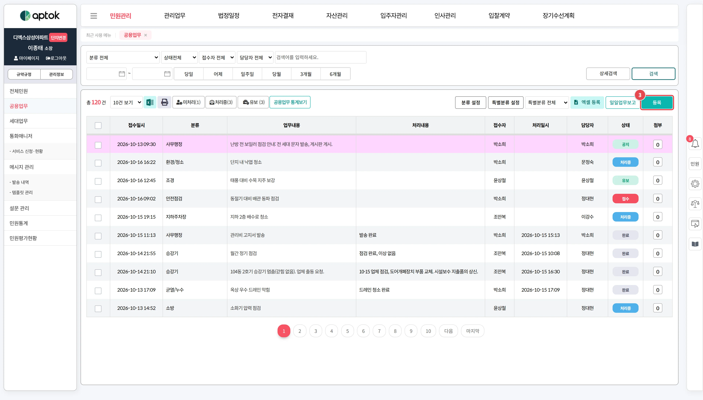
⤢ 크게 보기
2
처리일시와 처리내용을 채웁니다.
3
상태를 처리 완료에 맞게 바꾸고 등록으로 저장합니다.
상태를 바꿔야 목록의 미처리 건수에서 빠집니다.
주의
담당자 알림발송 여부를 켜고 저장하면 실제로 알림이 나갑니다. 연습이나 테스트 중이라면 꺼두세요.
왼쪽 위 목록과 오른쪽 위 등록은 이름이 비슷하지만, 목록은 저장하지 않고 나가기입니다.
접수 일시는 자동으로 현재 시각이 들어갑니다. 며칠 지난 일을 뒤늦게 입력할 때는 반드시 고쳐 넣으세요. 통계가 어긋납니다.
자주 묻는 질문
등록했는데 담당자에게 알림이 안 갔습니다.
저장하기 전에 담당자 알림발송 여부가 켜져 있었는지 확인합니다. 끈 상태로 저장하면 알림이 나가지 않습니다.
처리내용을 나중에 적어도 되나요?
됩니다. 목록에서 해당 건을 다시 열어 채우면 됩니다.
미처리 건수가 안 줄어듭니다.
처리내용만 적고 상태를 바꾸지 않으면 미처리로 남습니다. 상태를 함께 변경하세요.
민원관리›세대업무
세대업무
패턴 A권한 · 관리업무 > 열람
세대에서 들어온 민원을 접수하고 담당자 배정부터 처리 완료까지 관리한다
핵심
민원마다 동·호·분류·내용을 접수하고 담당자를 정한다. 상태는 미처리에서 처리중을 거쳐 처리완료로 바뀌고, 유보·관찰도 둘 수 있다. 처리한 민원을 체크해 일일업무보고를 누르면 일일일지로 바로 넘어간다.
기본 조작은 목록 화면 공통 사용법에 정리되어 있습니다. 아래에는 이 화면에만 해당하는 내용만 적었습니다.
표에 보이는 항목
동
호
등록구분
접수일시
분류
연락처
민원내용
처리내용
접수자
처리일시
담당자
상태
첨부
이 화면에만 있는 기능
미처리 · 처리중 · 유보
목록 위 단추로 그 상태의 민원만 봅니다. 괄호 숫자는 건수입니다.
민원 통계보기
기간별·분류별 민원 건수를 봅니다.
분류설정 · 특별분류설정
민원 분류(관리비·난방·급탕·수도·전기 등)를 정리합니다.
일일업무보고
체크한 민원으로 일일일지를 만듭니다.
따라 하기
1
상단 민원관리를 클릭한 뒤 왼쪽 목록에서 세대업무를 클릭합니다.
최근 접수한 민원부터 나옵니다.
⤢ 크게 보기
2
검색·기간·내려받기 등 기본 조작은 목록 화면 공통 사용법을 따릅니다.
3
민원등록을 눌러 동·호·분류·민원내용을 적고 담당자를 정해 저장합니다.
4
처리가 끝나면 민원을 열어 처리내용을 적고 상태를 바꿉니다.
주의
개인정보(연락처)가 표시되는 화면입니다.
민원관리›통화매니저›전화·문자
전화·문자
패턴 A권한 · 민원관리
걸고 받은 전화와 주고받은 문자를 한 목록에서 본다
핵심
통화와 문자가 한 목록에 섞여 시간순으로 나온다. 누구와 언제 어떤 방식으로 연락했는지 한눈에 보인다. 통화만 보려면 통화 이력, 문자만 보려면 문자 이력으로 간다.
기본 조작은 목록 화면 공통 사용법에 정리되어 있습니다. 아래에는 이 화면에만 해당하는 내용만 적었습니다.
표에 보이는 항목
시각
구분
세대
이름
연락처
내용
연락
민원
이 화면에만 있는 기능
구분 아이콘
수화기는 통화, 말풍선은 문자입니다. 화살표 방향으로 발신인지 수신인지 알 수 있고, 못 받은 전화는 부재중으로 표시됩니다.
조회 조건
수신·발신, 전화·문자, 민원 여부, 연락처로 좁혀 볼 수 있습니다.
연락 버튼
각 줄에 지난 대화전화문자 세 버튼이 있습니다. 지난 대화는 그 번호와 주고받은 내용을 대화 형태로 보여줍니다.
민원 등록
오른쪽 등록 버튼으로 그 연락을 민원으로 접수합니다.
+ 번호 등록
등록되지 않은 번호는 이름 칸에 + 번호 등록이 보입니다. 눌러서 그 번호를 입주민(세대)·거래처에 붙이거나 이름만 메모해 둘 수 있습니다. 등록하면 그 번호의 지난 통화·문자에도 이름이 함께 붙습니다.
메모
이름만 메모해 둔 번호는 이름 자리에 메모로 보입니다. 누르면 입주민·거래처로 다시 등록할 수 있습니다.
내용 앞의 대괄호
관리비보안기타처럼 자동 분류된 꼬리표가 붙습니다. 통화 요약에서 잡은 분류입니다.
따라 하기
1
상단 민원관리를 클릭한 뒤 통화매니저에서 전화·문자를 클릭합니다.
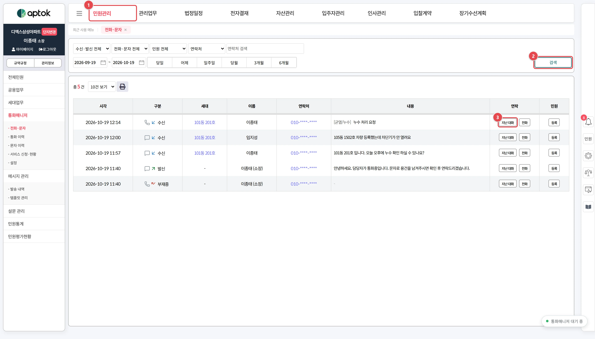
⤢ 크게 보기
2
기간과 조건을 정하고 검색을 클릭합니다.
기본으로 최근 한 달이 잡혀 있습니다.
3
지난 내용을 보려면 지난 대화, 연락하려면 전화나 문자를 클릭합니다.
모르는 번호 등록하기 (번호부)
1
이름 칸의 + 번호 등록을 클릭합니다.
알림창의 대화 화면, 통화 이력·문자 이력, 통화 상세에서도 같은 창이 열립니다.
⤢ 크게 보기
2
입주민으로거래처로이름만 메모 중 하나를 고릅니다.
3
입주민 — 동·호를 고르고 세대주나 가족을 고릅니다. 목록에 없으면 목록에 없음 — 이름 적기로 이름을 씁니다.
통화 요약에 동·호가 나왔으면 미리 골라져 있습니다.
4
거래처 — 거래처를 찾기로 고릅니다. 없으면 새 거래처로 만들기를 누릅니다.
새 거래처는 거래처 관리에도 같이 생기고, 이 번호가 담당자 휴대폰이 됩니다.
5
이름만 메모 — 장부에 올릴 정도는 아닌 번호(택배·배달 등)에 씁니다. 이름을 적고 등록을 클릭합니다.
대화창 위에 메모로 보이고, 이 이름으로도 검색됩니다.
주의
번호 등록에서 입주민으로 붙여도 입주민 계정의 휴대폰 번호는 바뀌지 않습니다. 가족·다른 휴대폰 번호도 세대에 붙일 수 있습니다.
통화 내용은 민감한 정보입니다. 열람 권한을 꼭 필요한 사람에게만 주세요.
자주 묻는 질문
부재중 전화만 보고 싶습니다.
조회 조건에서 걸러 보거나, 알림창의 최근 기록에서 부재중 버튼을 쓰세요.
이 연락을 민원으로 남기려면?
그 줄 오른쪽 등록 버튼을 누르면 민원으로 접수하는 창이 열립니다.
모르는 번호로 자주 전화가 옵니다. 누구인지 표시하려면?
이름 칸의 + 번호 등록으로 입주민·거래처에 붙이거나 이름만 메모해 두세요. 다음부터 알림창에 그 이름이 뜹니다.
민원관리›통화매니저›통화 이력
통화 이력
패턴 A권한 · 민원관리
주고받은 통화를 조회하고 녹취와 요약을 확인한다
핵심
알림창의 최근 기록이 최근 것만 보여준다면, 이 화면은 지난 통화 전체를 찾는 곳이다. 통화 하나를 열면 녹취 재생, 대화 전문, 자동 요약을 볼 수 있다. 그리고 통화가 끝나면 민원 접수도 거의 끝나 있다.민원으로 등록을 누르면 세대·접수일시·분류·민원 내용이 통화 요약으로 채워진 등록 화면이 열리고, 직원은 확인하고 저장만 누르면 된다. 받아 적고 다시 입력하던 일이 없어진다.
상세 화면
통화를 열면 상세 화면이 나온다.
기본 정보 — 일시, 발신·수신, 통화시간, 연락처, 세대, 이름, 민원 등록 여부
녹취 — 보관 기한과 다운로드보관
스크립트 — 재생하면서 대화 전문을 읽습니다. 관리사무소와 입주민이 구분됩니다.
요약 — 분류, 긴급도, 생성일시, 언급된 동·호
오른쪽 위 삭제민원으로 등록인쇄
다시 요약스크립트 수정으로 다시 만들거나 고칠 수 있습니다.
기본 조작은 목록 화면 공통 사용법에 정리되어 있습니다. 아래에는 이 화면에만 해당하는 내용만 적었습니다.
따라 하기
1
상단 민원관리를 클릭한 뒤 통화매니저에서 통화 이력을 클릭합니다.
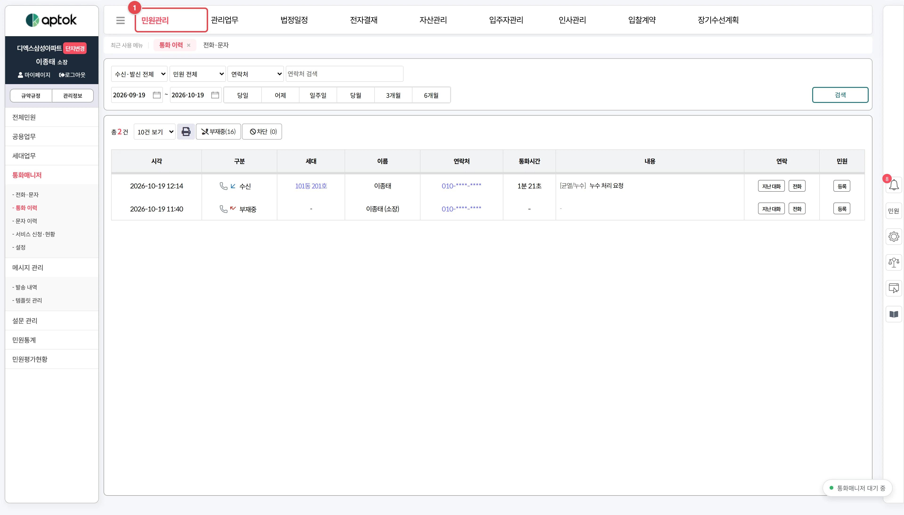
⤢ 크게 보기
2
목록에서 통화를 눌러 상세 화면을 엽니다.
녹취를 재생하면서 전문을 읽을 수 있습니다.
⤢ 크게 보기
3
민원으로 남기려면 오른쪽 위 민원으로 등록을 클릭합니다.
통화 내용이 이미 민원 형식으로 정리된 창이 열립니다. 세대, 접수일시, 분류(통화 요약에서 잡은 것), 민원 내용이 자동으로 채워져 있습니다. 아래 두 버튼에 마우스를 올리면 세대업무로 올릴 때와 공용업무로 올릴 때의 모습이 바뀌어 보입니다.
4
특정 세대의 일이면 세대업무 등록 화면, 단지 공용부의 일이면 공용업무 등록 화면을 클릭합니다.
등록 화면이 열리면서 동/호, 분류, 민원 내용, 접수자, 접수 일시가 이미 들어가 있습니다. 민원 내용 첫 줄에는 「통화매니저 전화 접수」와 수신 시각이 붙어 어디서 온 민원인지 알 수 있습니다. 등록되지 않은 번호는 세대를 알 수 없어서 세대업무 등록 화면이 흐리게 나옵니다. 창 안내대로 번호 등록을 먼저 하세요.
⤢ 크게 보기
5
내용을 확인하고 필요하면 담당자를 지정한 뒤 오른쪽 위 저장을 클릭합니다.
담당자를 지정하고 담당자 알림발송 여부를 켜 두면 담당자에게 업무 배정 알림이 갑니다. 저장하면 그 통화에 민원이 연결되어, 통화 이력 목록의 민원 칸과 통화 상세의 민원 등록에 표시됩니다.
⤢ 크게 보기
6
다시 통화 상세를 열면 민원 등록 칸에 민원글 보기와 등록 시각이 나옵니다. 눌러서 등록한 민원으로 바로 갑니다.
같은 통화를 두 번 등록하지 않도록 민원으로 등록 버튼이 사라집니다. 민원이 연결된 통화는 삭제할 수 없습니다.
⤢ 크게 보기
주의
녹취에는 보관 기한이 있습니다. 오래 두어야 할 통화는 보관하거나 내려받으세요.
요약과 전문은 자동으로 만들어진 것이라 틀릴 수 있습니다. 중요한 건은 녹취를 직접 들어보세요.
통화 내용은 민감한 정보입니다. 열람 권한을 꼭 필요한 사람에게만 주세요.
자주 묻는 질문
통화 내용을 문서로 남기고 싶습니다.
상세 화면 오른쪽 위 인쇄를 쓰거나, 민원으로 등록으로 민원에 남기세요.
요약이 틀렸습니다.
다시 요약으로 새로 만들거나 스크립트 수정으로 전문을 고칠 수 있습니다.
민원으로 등록할 때 내용을 다시 적어야 하나요?
아닙니다. 통화 요약이 민원 내용에 그대로 들어갑니다. 세대업무인지 공용업무인지만 고르면 됩니다.
통화로 받은 민원을 세대업무에 따로 다시 입력해야 하나요?
아닙니다. 통화 상세에서 민원으로 등록 → 세대업무 등록 화면을 누르면 동·호와 분류, 민원 내용, 접수 일시까지 채워진 화면이 열립니다. 확인하고 저장만 누르세요.
문자로 받은 민원도 같은 방법으로 올릴 수 있나요?
네. 문자 이력이나 전화·문자 목록의 등록 버튼에서 같은 창이 열립니다.
민원관리›통화매니저›문자 이력
문자 이력
패턴 A권한 · 민원관리
주고받은 문자를 조회한다
핵심
전화·문자에서 문자만 걸러 본 것과 같다. 문자로 오간 내용만 확인할 때 쓴다.
기본 조작은 목록 화면 공통 사용법에 정리되어 있습니다. 아래에는 이 화면에만 해당하는 내용만 적었습니다.
표에 보이는 항목
시각
구분
세대
이름
연락처
내용
연락
민원
이 화면에만 있는 기능
사진
위쪽 사진 버튼에 개수가 표시됩니다. 입주민이 사진을 보낸 경우 여기서 모아 볼 수 있습니다.
연락 버튼
각 줄에 지난 대화전화문자가 있습니다.
민원 등록
오른쪽 등록으로 그 문자를 민원으로 접수합니다.
따라 하기
1
상단 민원관리를 클릭한 뒤 통화매니저에서 문자 이력을 클릭합니다.
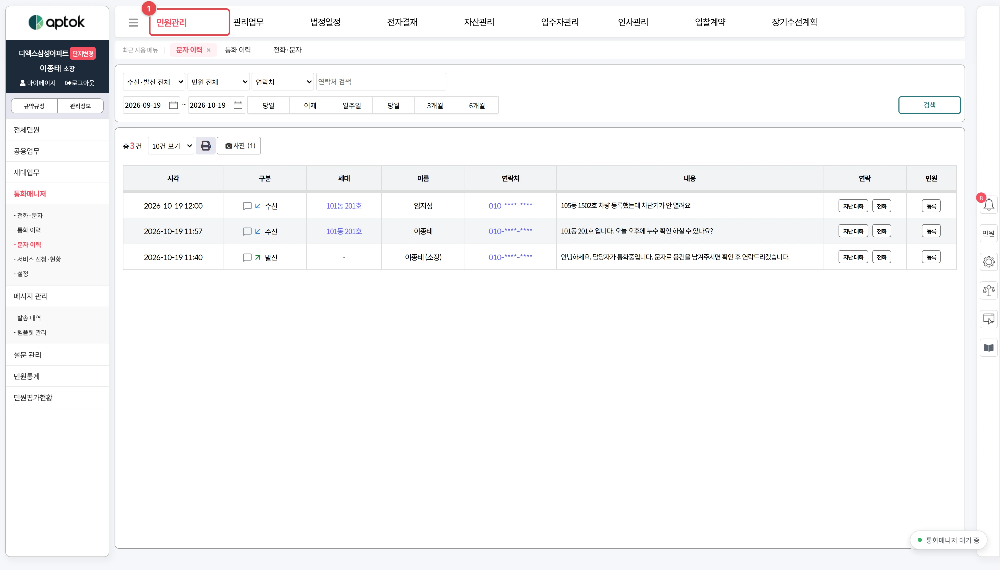
⤢ 크게 보기
주의
문자로 받은 사진도 개인정보입니다. 다룰 때 주의하세요.
자주 묻는 질문
입주민이 보낸 사진은 어디서 보나요?
위쪽 사진 버튼을 누르면 모아 볼 수 있습니다.
민원관리›통화매니저›서비스 신청·현황
서비스 신청·현황
패턴 A권한 · 민원관리
통화매니저 회선을 신청하고, 회선마다 어디까지 진행됐는지 확인한다
핵심
이 단지에 신청한 회선이 카드 한 장씩 보인다. 명의가 달라도 이 단지 회선이면 모두 여기에 모인다. 카드마다 신청 → KT 서류·신청 → 연결 → 사용 시작 네 칸 진행 표시가 있어서, 지금 막혀 있는 곳이 어디인지 바로 알 수 있다. 사람이 승인하는 단계는 없고, KT 처리가 끝나면 자동으로 연결된다.
위쪽 요약
위쪽 전체사용 중진행 중확인 필요 버튼에 회선 수가 표시됩니다. 누르면 그 상태의 회선만 걸러 봅니다. 확인 필요가 0이 아니면 먼저 확인하세요.
이 화면에만 있는 기능
회선 카드
대표번호, 명의, 진행 표시, 연결된 날짜가 보입니다. 사용 중인 회선은 녹취 사용 여부와 사용 중인 서비스(시간대별 설정·녹취·AI 통화 요약·땡큐문자·회선 문자 한도 등)가 함께 나옵니다.
자세히 ▾
회선에서 쓸 수 있는 서비스 목록을 펼쳐 봅니다.
설정
그 회선의 인사말·녹음 안내·착신전환을 바꾸는 설정 화면으로 갑니다.
KT 안내 보기
아직 KT 처리 중인 회선에 나옵니다. KT에 무엇을 말하고 어떤 서류를 내야 하는지 다시 보여 줍니다.
점검 순서
신청 뒤 며칠이 지나도 KT 처리가 확인되지 않으면 나옵니다. 확인할 것을 순서대로 안내합니다.
+ 회선 신청
새 회선을 신청합니다. 회선 신청 안내를 보세요.
따라 하기
1
상단 민원관리를 클릭한 뒤 통화매니저에서 서비스 신청·현황을 클릭합니다.
회선이 카드로 하나씩 보입니다.
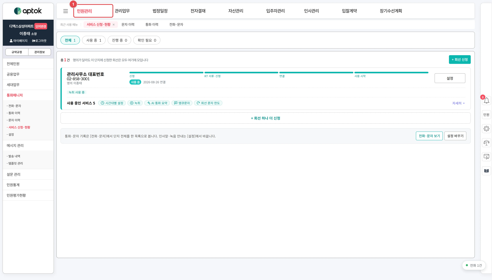
⤢ 크게 보기
2
카드의 진행 표시에서 지금 어느 단계인지 확인합니다.
신청 → KT 서류·신청 → 연결 → 사용 시작. 사용 중이면 네 칸이 모두 채워져 있습니다.
3
KT 처리 중인 회선이면 KT 안내 보기를 눌러 남은 일을 확인합니다.
대부분 KT 문자 링크로 서류 사진을 아직 올리지 않은 경우입니다.
주의
KT 문자로 온 링크에 서류(고유번호증 또는 사업자등록증, 신청인 신분증 사본)를 올려야 KT 처리가 시작됩니다. 서류를 올리지 않으면 계속 '진행 중'으로 남습니다.
KT에 '통화매니저 API B2B'가 아닌 다른 상품으로 가입하면 연결되지 않습니다. 이때는 KT에 다시 요청해야 합니다.
자주 묻는 질문
신청한 지 며칠이 지났는데 계속 'KT 신청 확인 중'입니다.
카드의 점검 순서를 누르세요. ① KT 문자 링크로 서류를 올렸는지, ② KT 상담원에게 '통화매니저 API B2B · CP코드 70334 · 솔루션코드 54'로 신청했는지 확인합니다. 잘못 신청했다면 KT 지능망 고객센터(080-001-1588)에 다시 요청합니다. 그래도 안 되면 아파트OK 고객센터로 문의하세요.
연결은 끝났다는데 메뉴에 전화·문자가 안 보입니다.
화면 위 안내의 메뉴 새로고침을 누르세요.
카드에 'KT 신청은 끝났지만 아파트OK 연결이 되지 않고 있습니다'라고 나옵니다.
사유에 '담당자'가 있으면 아파트OK 고객센터에 담당자 휴대폰·이메일을 알려 주세요. 그 밖의 사유는 시스템이 자동으로 다시 시도합니다. 하루가 지나도 그대로면 고객센터로 알려 주세요.
민원관리›통화매니저›서비스 신청·현황›+ 회선 신청
회선 신청
패턴 B권한 · 민원관리
단지 전화번호를 통화매니저에 연결하도록 신청한다
핵심
신청은 3단계이고, 사람이 승인하는 단계는 없다.
① 번호 확인 → ② 신청 정보 입력 → ③ KT에 전화하기.
마지막에 관리사무소가 KT에 직접 전화(약 5분)하고 서류를 KT에 내야 연결이 시작된다.
아파트OK는 신분증을 받거나 보관하지 않는다.
시작하기 전에
단지 KT 유선 번호
1단계에서 입력합니다. KT 유선 번호만 신청할 수 있습니다.
담당자 휴대폰·이메일
2단계에서 입력합니다. 진행 안내 문자를 이 휴대폰으로 보냅니다.
고유번호증(또는 사업자등록증), 신청인 신분증 사본 사진
KT와 통화한 뒤 KT에 냅니다. 휴대폰으로 찍은 사진이면 됩니다. 신분증은 주민등록번호 뒷자리를 가리고 준비하세요.
비용
아파트OK 연결비
0원
프로그램 사용료
0원
통화매니저 요금
KT 정책을 따릅니다.
알림톡·문자
보낸 건수만큼 냅니다. 메시지 채널과 요금을 보세요.
따라 하기
1
서비스 신청·현황 화면 오른쪽 위 + 회선 신청을 클릭합니다.
위쪽에 3단계 진행 표시가, 오른쪽에 준비물과 비용이 보입니다.
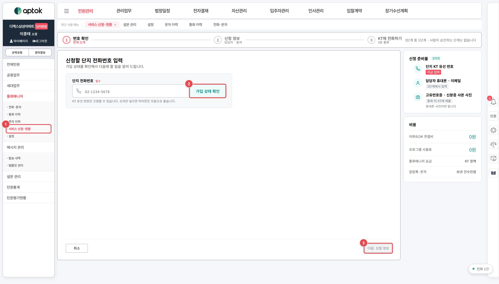
⤢ 크게 보기
2
1단계 — 단지 전화번호를 입력하고 가입 상태 확인을 클릭합니다.
숫자만 넣으면 하이픈은 자동으로 붙습니다. 결과는 '미가입 번호', '다른 업체 연결', '연결 준비됨' 중 하나로 나옵니다.
3
다음: 신청 정보를 클릭합니다.
4
2단계 — 용도, 회선 명의(선택), 담당자 이름·휴대폰·이메일을 입력하고 동의 항목에 체크한 뒤 저장하고 다음을 클릭합니다.
용도는 현황 목록과 전화가 올 때 보이는 이름입니다. 저장하면 신청이 접수되고, 나중에 이어서 할 수 있습니다.
5
3단계 — 화면에 나온 KT 지능망 고객센터 번호로 전화해, 화면의 문장을 상담원에게 그대로 읽어 줍니다.
'통화매니저 API B2B 가입을 요청합니다. CP코드 70334, 솔루션코드 54입니다.' 휴대폰 문자로 받기를 누르면 이 내용을 문자로 받을 수 있습니다.
6
통화가 끝나면 KT가 보낸 문자의 링크로 서류 사진을 올리고 통화를 마쳤어요를 클릭합니다.
팩스나 KT 매장 방문으로 내도 됩니다. 나중에 하려면 나중에 할게요를 누르세요.
주의
KT 상담원에게 '일반 통화매니저'가 아니라 반드시 '통화매니저 API B2B'로, CP코드·솔루션코드를 함께 말해야 합니다. 다른 코드로 가입되면 연결되지 않습니다.
다른 업체에서 쓰던 번호도 똑같이 신청합니다.
자주 묻는 질문
신청한 뒤에는 무엇을 기다리면 되나요?
KT가 서류를 확인하고 처리하면 자동으로 연결됩니다. 연결되면 담당자 휴대폰으로 알려 드립니다. 서류를 아직 안 올렸다면 1일·3일·7일째에 다시 안내 문자를 보냅니다.
회선을 여러 개 쓸 수 있나요?
네. 서비스 신청·현황 아래쪽 + 회선 하나 더 신청으로 추가합니다.
민원관리›통화매니저›설정
설정
패턴 E권한 · 민원관리
통화매니저의 전화 수신, ARS, 문자 발송, 화면 알림을 설정한다
핵심
통화매니저의 모든 동작이 여기서 정해진다. 탭이 네 개이고 각각 다루는 것이 다르다. 스크린팝만은 이 브라우저에만 적용된다. 다른 컴퓨터에서는 따로 설정해야 한다.
회선 상태
화면 맨 위에 회선 상태가 나온다. 대표번호와 연결 여부, ARS 상품 가입 여부, 현재 통화설정 상태, 조회 시각이 보인다. 통화가 안 걸리거나 이상하면 여기부터 확인한다.
설정 탭 네 개
통화설정
전화가 왔을 때 어떻게 받을지, 안내멘트를 어떻게 들려줄지 정합니다.
ARS 관리
자동응답 시나리오와 업무시간을 설정합니다. ARS 상품에 가입해야 씁니다.
땡큐문자
통화가 끝난 뒤나 부재중일 때 자동으로 보낼 문자를 정합니다.
스크린팝
전화가 오면 화면에 뜨는 알림창의 모양과 내용을 정합니다.
통화설정 탭
기본 통화설정
수신 방식을 정상연결즉시 착신전환부재중 안내 중에 고릅니다. 무응답이거나 통화중일 때 착신전환할지 각각 정하고, 착신전환번호를 넣습니다. 착신전환을 쓰려면 번호가 반드시 있어야 합니다.
산업안전보건멘트
전화받는 사람 보호를 위한 안내멘트를 켜고 끕니다.
인사말
회선에 따라 지원하지 않을 수 있습니다. 지원 안 되면 회색으로 표시됩니다.
시간대별 안내멘트
시간대를 나눠 다르게 동작시킵니다. 예를 들어 18:00~09:00에는 부재중 멘트가 나가도록 할 수 있습니다.
기간별 안내멘트
휴가처럼 특정 기간에만 다른 멘트를 내보낼 때 씁니다.
안내멘트
1번부터 5번까지 멘트를 미리 만들어 두고 시간대·기간별 설정에서 골라 씁니다.
통화차단번호
특정 번호나 국번을 막습니다. 차단 횟수와 등록자가 기록됩니다.
ARS 관리 탭
ARS 사용
자동응답을 켜고 끕니다. ARS 상품에 가입한 회선에서만 쓸 수 있습니다. 미가입이면 설정해도 동작하지 않습니다.
ARS 시나리오
번호를 눌렀을 때 어디로 연결할지 정합니다.
업무시간
업무시간과 요일을 정합니다. 공휴일 처리와 점심시간도 따로 설정할 수 있습니다.
땡큐문자 탭
자동 발송 · 발송 제한
하루에 같은 번호로 보낼 최대 횟수를 정합니다.
통화 완료 후
통화가 끝난 뒤 자동으로 보낼 문구를 정합니다.
부재중일 때
전화를 못 받았을 때 자동으로 보낼 문구입니다.
화면팝 탭
적용 범위
이 설정은 지금 쓰는 브라우저에만 적용됩니다.
사용 여부 · 알림 · 알림 효과
알림창을 띄울지, 소리와 효과를 쓸지 정합니다. 알림 테스트로 확인합니다.
표시 항목
민원, 직전 통화, 메모, 문자 내용 중에 무엇을 보여줄지 고릅니다.
글자 크기 · 투명도 · 카드 최대 개수 · 자동 정리
보기 편하게 조절하고, 몇 분 뒤 자동으로 치울지 정합니다.
미리보기
설정한 대로 어떻게 보이는지 상황별로 보여줍니다.
기본 조작은 목록 화면 공통 사용법에 정리되어 있습니다. 아래에는 이 화면에만 해당하는 내용만 적었습니다.
따라 하기
1
상단 민원관리를 클릭한 뒤 통화매니저에서 설정을 클릭합니다.
처음 열면 통화설정 탭이 보입니다.
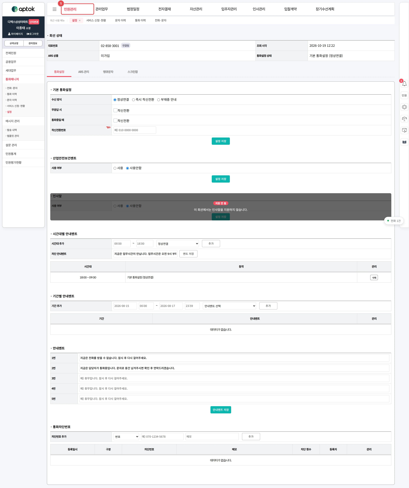
⤢ 크게 보기
2
자동응답을 쓰려면 ARS 관리 탭을 클릭합니다.
ARS 상품에 가입해야 실제로 동작합니다.
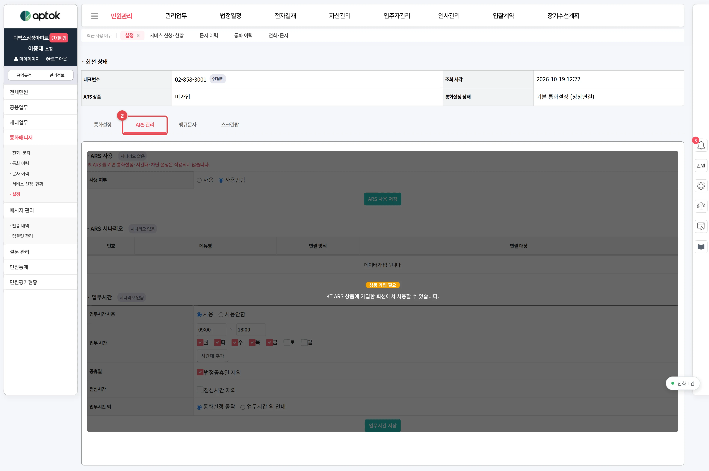
⤢ 크게 보기
3
통화 후 자동 문자를 보내려면 땡큐문자 탭을 클릭합니다.
통화 완료 후와 부재중일 때를 각각 설정합니다.
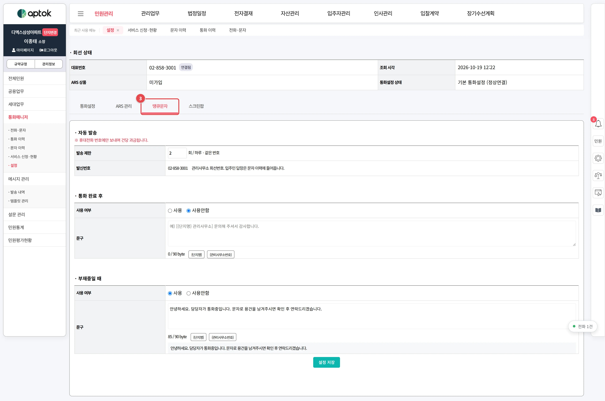
⤢ 크게 보기
4
화면 알림창을 조절하려면 스크린팝 탭을 클릭합니다.
이 설정은 지금 쓰는 브라우저에만 적용됩니다.
⤢ 크게 보기
주의
스크린팝 설정은 브라우저마다 따로입니다. 컴퓨터를 바꾸면 다시 설정해야 합니다.
ARS는 상품에 가입해야 동작합니다. 미가입 상태에서 설정만 해두면 아무 일도 일어나지 않습니다.
착신전환을 켰는데 번호를 안 넣으면 전화가 어디로도 가지 않습니다.
땡큐문자는 실제로 발송됩니다. 문구를 확인하고 켜세요.
자주 묻는 질문
전화가 안 걸립니다.
화면 맨 위 회선 상태에서 대표번호가 연결됨인지, 통화설정 상태가 무엇인지 확인하세요.
다른 컴퓨터에서는 알림창이 안 뜹니다.
스크린팝은 브라우저마다 따로 설정합니다. 그 컴퓨터에서 다시 켜 주세요.
퇴근 후에는 전화를 안 받고 싶습니다.
통화설정 탭의 시간대별 안내멘트에서 시간대를 추가하고 부재중 멘트를 지정하세요.
ARS 설정이 안 먹습니다.
ARS 상품 가입 여부를 확인하세요. 회선 상태에 미가입으로 나오면 동작하지 않습니다.
민원관리›메시지 관리›발송 내역
발송 내역
패턴 A권한 · 민원관리
입주민에게 보낸 알림톡·문자가 실제로 갔는지, 요금이 얼마나 나왔는지 확인한다
핵심
보낸 메시지는 세 가지 채널 중 하나로 나간다 — 알림톡(카카오톡), 문자(아파트OK), 문자(통화매니저). 이 화면 위쪽에 채널별 건수와 예상 요금이 카드로 나오고, 아래 표에서 한 건씩 결과를 본다. 통화매니저가 자동으로 보낸 땡큐문자도 여기에 남는다. 채널마다 요금 내는 곳이 다르니 메시지 채널과 요금을 함께 보자.
위쪽 요약
알림톡(카카오톡)
아파트OK 요금(부가세 별도). 기간 안에 보낸 건수와 예상 요금.
문자(아파트OK)
아파트OK 요금(부가세 별도). 단문·장문·그림 건수가 나뉘어 보입니다.
문자(통화매니저)
KT 통신요금(부가세 포함). 이달 남은 건수와 오늘 보낸 건수가 함께 보입니다. 월별 보기 ▾로 달마다 건수를 봅니다.
기간 합계
조회 기간의 전체 건수와 아파트OK 요금 예상액.
기본 조작은 목록 화면 공통 사용법에 정리되어 있습니다. 아래에는 이 화면에만 해당하는 내용만 적었습니다.
표에 보이는 항목
발송 시각
구분
종류
제목·내용
세대
이름
연락처
발송 횟수
결과
보낸 사람
보기
이 화면에만 있는 기능
조회 조건
구분(메시지 발송·통화매니저·민원평가·공지·설문 등), 발송 채널, 제목·내용, 수신번호, 기간으로 좁혀 봅니다.
실패 있음
체크하면 실패가 섞인 발송만 봅니다. 안 간 메시지를 찾을 때 씁니다.
종류
단문·장문·그림과 채널(아파트OK·통화매니저)이 함께 표시됩니다.
보낸 사람
직원 이름 또는 '자동'. 자동은 예약·자동 발송처럼 사람이 직접 누르지 않은 발송입니다.
상세
받는 사람별 결과를 봅니다. 여러 명에게 한 번에 보낸 건은 여기서 누가 실패했는지 확인합니다.
메시지 발송
새 메시지를 보내는 메시지 발송 화면으로 갑니다.
따라 하기
1
상단 민원관리를 클릭한 뒤 메시지 관리에서 발송 내역을 클릭합니다.
위쪽에 채널별 카드, 아래에 발송 목록이 보입니다.
⤢ 크게 보기
2
실패 있음에 체크해 안 간 메시지가 있는지 확인합니다.
3
궁금한 건의 상세를 눌러 받는 사람별 결과를 봅니다.
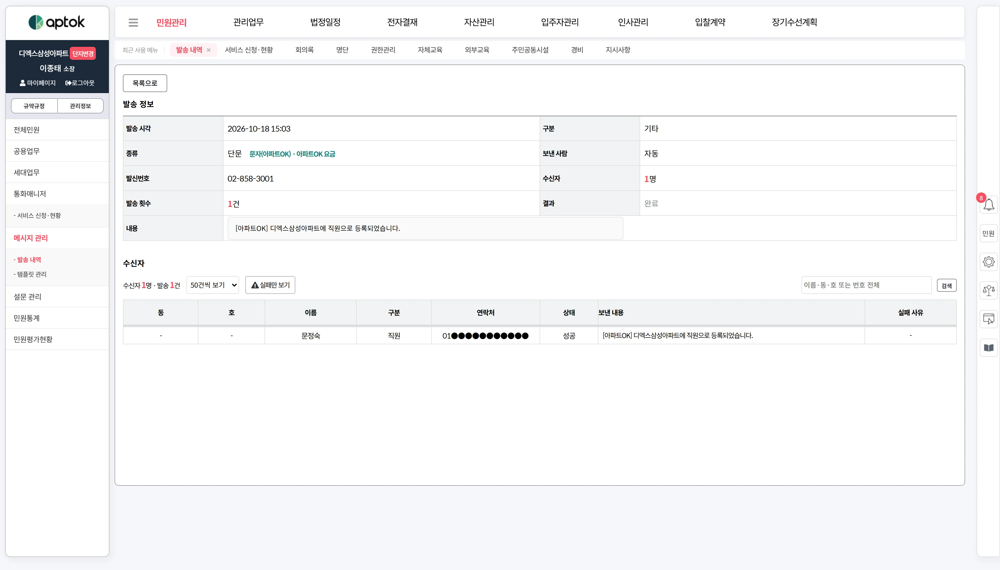
⤢ 크게 보기
주의
예상 요금은 성공했거나 전송 중인 건만 건당 요금으로 셈한 값입니다(실패 제외). 실제 청구는 이용요금·결제에서 확인하세요.
문자(통화매니저)는 아파트OK 요금이 아니라 KT가 관리사무소 통신요금으로 따로 청구합니다.
자주 묻는 질문
문자를 보냈는데 안 갔다고 합니다.
이 화면에서 그 건의 결과를 확인하세요. 실패로 나오면 번호를 확인한 뒤 다시 보내거나 전화로 알리세요.
알림톡을 보냈는데 받지 못했다는 세대가 있습니다.
알림톡은 카카오톡을 쓰는 세대만 받고, 못 받아도 문자로 대신 보내지 않습니다. 그 세대에는 문자로 다시 보내세요.
민원관리›메시지 관리›발송 내역›메시지 발송
메시지 발송
패턴 B권한 · 민원관리
세대나 번호를 골라 알림톡·문자를 보낸다
핵심
화면은 위에서 아래로 수신자 → 발송 설정 → 메시지 → 확인 순서다. 맨 아래 '점검'에 빠진 것이 없어야 보낼 수 있다. 채널마다 요금과 받는 조건이 다르니 처음이라면 메시지 채널과 요금을 먼저 읽자.
입력 항목
수신자
세대에서 선택으로 동·호를 고르거나 번호로 추가로 번호를 직접 넣습니다. 표에서 한 줄씩 뺄 수 있습니다.
발송 채널
알림톡(카카오톡), 문자(아파트OK), 문자(통화매니저) 중 하나. 요금·기준 보기 ▾로 건당 요금과 글자 수 기준을 봅니다.
템플릿 / 직접 작성
알림톡은 승인된 템플릿만 고를 수 있습니다. 문자는 템플릿을 고르거나 직접 씁니다.
값
템플릿의 '직접 채울 값'을 넣습니다. 예) 시행일시. 빈 칸이 있으면 보낼 수 없습니다.
문자 종류 (문자만)
자동 — 기준을 넘으면 장문, 사진이 있으면 그림 문자. 단문만 — 길면 단문 여러 건으로 나눠 보냅니다.
사진 (문자만)
jpg·png·gif 최대 3장, 장당 300KB 이하. 붙이면 그림 문자(MMS) 요금입니다.
긴급 문자
단수·정전·화재 같은 급한 안내에만 씁니다. 잔액이 모자라거나 월 한도를 넘어도 보낼 수 있습니다(잔액 −10,000원까지).
예상 · 점검
수신자 수, 예상 요금, 보낸 뒤 남는 잔액이 보입니다. 점검 항목이 모두 초록이어야 발송이 됩니다.
따라 하기
1
발송 내역 화면에서 메시지 발송을 클릭합니다. 템플릿 관리에서 이 템플릿으로 보내기를 눌러도 됩니다.
⤢ 크게 보기
2
세대에서 선택 또는 번호로 추가로 받는 사람을 넣습니다.
3
발송 채널을 고르고, 템플릿을 고르거나 내용을 씁니다.
미리보기에 받는 분 화면이 보입니다.
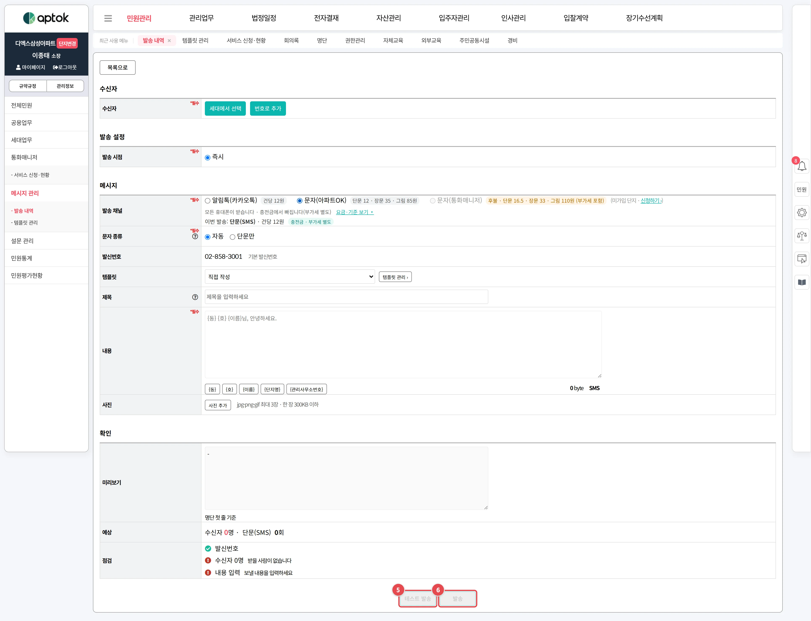
⤢ 크게 보기
4
템플릿에 '값'이 있으면 채웁니다.
5
맨 아래 '예상'과 '점검'을 확인한 뒤 테스트 발송으로 내 휴대폰에 먼저 보내 봅니다.
처음 보내는 문안이면 꼭 테스트 발송으로 확인하세요. (화면 아래쪽은 1번 그림에 함께 보입니다)
공지처럼 정해진 안내는 알림톡이 저렴합니다(건당 12원). 다만 카카오톡이 없는 세대는 못 받으니, 모두에게 꼭 가야 하는 안내는 문자로 보내세요. 메시지 채널과 요금에 비교표가 있습니다.
문자(통화매니저)는 언제 쓰나요?
통화매니저 회선이 있는 단지만 쓸 수 있습니다. 관리사무소 번호로 나가고, 요금은 KT가 통신요금으로 따로 청구합니다. 한 달·하루 보낼 수 있는 건수가 정해져 있습니다.
민원관리›메시지 관리›템플릿 관리
템플릿 관리
패턴 E권한 · 민원관리
자주 보내는 안내문을 템플릿으로 만들어 두고, 알림톡 문안을 카카오에 신청한다
핵심
템플릿은 두 종류다. 문자 템플릿은 단지가 자유롭게 만들고 고친다. 알림톡(카카오톡) 템플릿은 카카오가 승인한 문안 그대로만 나가므로, 새 문안이 필요하면 신청해서 심사를 받아야 한다. 아파트OK가 미리 만들어 둔 공통 템플릿은 고칠 수 없고, 우리 단지로 복사한 뒤 고쳐 쓴다.
용어
자동으로 채워지는 값
{동} {호} {이름}은 받는 세대마다, {단지명} {관리사무소번호}는 우리 단지 값으로 바뀌어 나갑니다. 알림톡은 #{값 이름} 모양입니다.
직접 채울 값
날짜·시간처럼 보낼 때마다 바뀌는 값입니다. 메시지 발송 화면에서 입력합니다.
분류
주차, 공사·점검, 단수·정전, 관리비, 행사·모임, 소독·방역, 안전·재난, 기타.
따라 하기
1
상단 민원관리를 클릭한 뒤 메시지 관리에서 템플릿 관리를 클릭합니다.
왼쪽에 템플릿 목록, 오른쪽에 고른 템플릿의 휴대폰 미리보기가 보입니다.
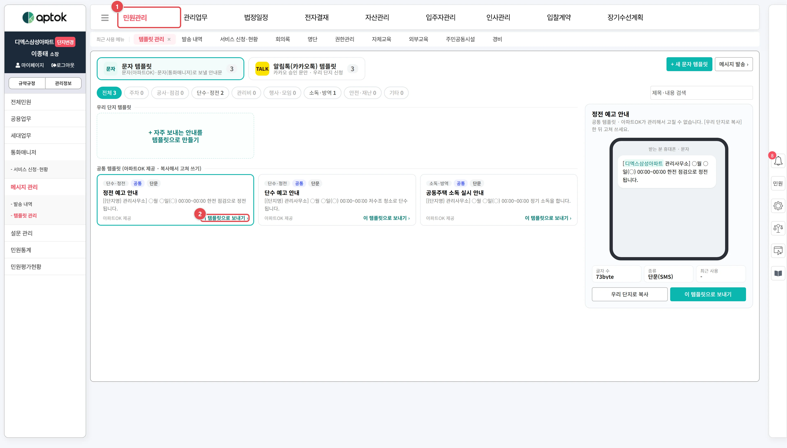
⤢ 크게 보기
2
템플릿을 고른 뒤 이 템플릿으로 보내기를 클릭하면 그 내용으로 메시지 발송 화면이 열립니다.
문자 템플릿 만들기
1
위쪽 문자 템플릿 카드를 고른 상태에서 + 새 문자 템플릿을 클릭합니다.
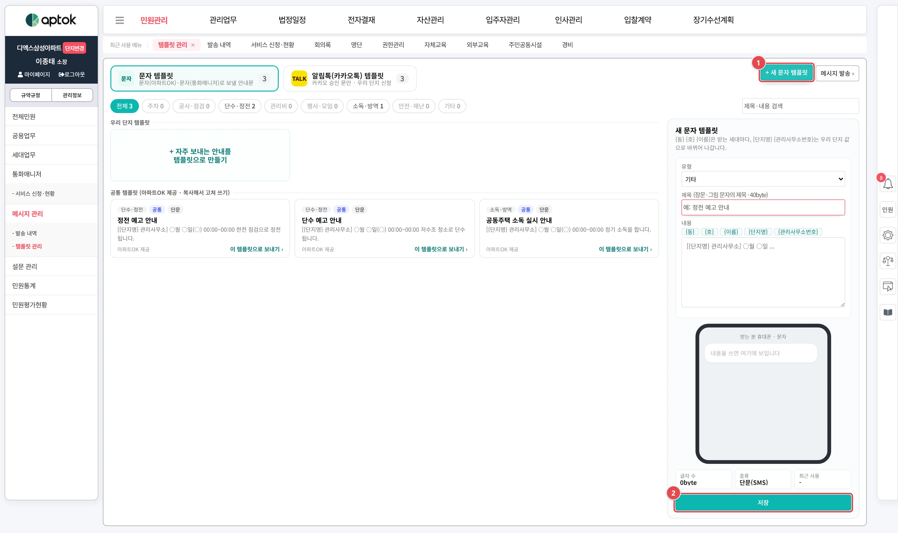
⤢ 크게 보기
2
분류, 제목(장문·그림 문자일 때), 내용을 입력하고 저장을 클릭합니다.
오른쪽 휴대폰 미리보기에 받는 분 화면이 보입니다. 90byte를 넘으면 장문(LMS)으로 바뀝니다.
공통 템플릿 고쳐 쓰기
1
공통 템플릿을 하나 클릭한 뒤 우리 단지로 복사를 클릭합니다.
2
'우리 단지 템플릿'에 생긴 사본을 열어 고친 뒤 저장을 클릭합니다.
우리 단지 알림톡 신청
1
위쪽 알림톡(카카오톡) 템플릿 카드를 클릭한 뒤 + 우리 단지 알림톡 신청을 클릭합니다.
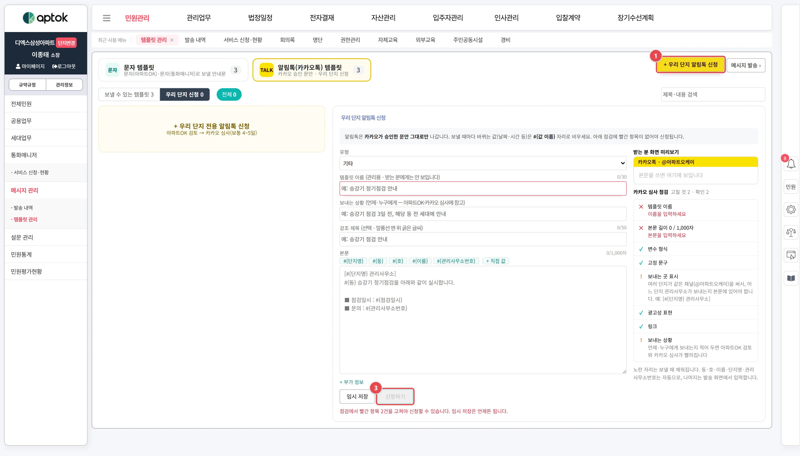
⤢ 크게 보기
2
유형, 템플릿 이름, 보내는 상황, 본문을 입력합니다. 보낼 때마다 바뀌는 값은
오른쪽 '카카오 심사 점검'에 빨간 항목이 없어야 신청할 수 있습니다. 임시 저장은 언제든 됩니다.
3
신청하기를 클릭합니다.
아파트OK 검토 → 카카오 심사(보통 4~5일)를 거칩니다. 승인되면 '보낼 수 있는 템플릿'과 메시지 발송 화면에 바로 나타납니다.
주의
알림톡 신청 상태가 '보완 요청'이나 '카카오 반려'면 문안을 고친 뒤 다시 신청하기를 눌러야 합니다.
알림톡 심사 중에 문안을 고치려면 먼저 신청 취소를 누른 뒤 고치세요.
자주 묻는 질문
공통 템플릿 내용을 바로 고칠 수 없나요?
공통 템플릿은 아파트OK가 관리합니다. 우리 단지로 복사한 뒤 사본을 고쳐 쓰세요.
알림톡 문구를 조금만 바꾸고 싶습니다.
알림톡은 승인된 문안 그대로만 나갑니다. 노란 자리(값)만 보낼 때 바꿀 수 있고, 문장을 바꾸려면 새로 신청해야 합니다.
민원관리›설문 관리
설문 관리
패턴 A권한 · 민원관리
입주민에게 설문이나 투표를 돌리고 응답을 모아 본다
핵심
종이로 돌리던 만족도 조사나 찬반 투표를 앱으로 대신하는 화면이다. 관리사무소가 문항을 만들어 올리면 입주민이 앱에서 답하고, 결과가 이 화면에 실시간으로 쌓인다. 설문 하나가 목록의 한 줄이고, 줄을 누르면 지금까지의 응답 집계를 바로 볼 수 있다. 설문과 투표는 같은 화면에서 만들며, 등록할 때 설문유형으로 구분한다.
기본 조작은 목록 화면 공통 사용법에 정리되어 있습니다. 아래에는 이 화면에만 해당하는 내용만 적었습니다.
표에 보이는 항목
번호
분야
제목
응답단위
시작일
종료일
참여현황
작성자
기안일시
결재현황
진행상태
이 화면에만 있는 기능
진행상태
예정진행중종료로 나뉩니다. 시작일이 아직 안 온 것이 예정, 기간 안이면 진행중, 종료일이 지났으면 종료입니다. 목록 맨 오른쪽에 색깔 표시로 나옵니다.
응답단위
입주민별과 세대당 두 가지입니다. 입주민별은 사람 한 명이 한 번, 세대당은 한 세대가 한 번만 답합니다. 만족도 조사는 보통 입주민별, 동의 여부를 묻는 투표는 세대당으로 씁니다.
참여현황
"1 / 12 (8.3%)"처럼 나옵니다. 답한 수 / 대상 수 (참여율)입니다. 참여율이 낮으면 참여자 알림발송으로 독려할 수 있습니다.
분야
설문을 묶는 꼬리표입니다. 처음에는 아무것도 없어서 -로 표시됩니다. 분야설정에서 먼저 만들어야 등록할 때 고를 수 있습니다.
결재현황
결재선을 걸고 올린 설문만 표시됩니다. 결재 없이 바로 올린 설문은 비어 있습니다.
조회 조건
진행상태·응답단위·분야로 좁히고, 설문 제목으로도 찾습니다. 날짜는 시작일종료일등록일 중에 무엇을 기준으로 볼지 먼저 고릅니다.
분야설정
오른쪽 위 버튼입니다. 설문을 묶을 분야 이름을 만들고 지웁니다.
설문 등록
오른쪽 위 초록색 버튼입니다. 새 설문 만들기 화면으로 넘어갑니다.
따라 하기
1
상단 민원관리를 클릭한 뒤 왼쪽에서 설문 관리를 클릭합니다.
메시지 관리 아래, 민원통계 위에 있습니다.
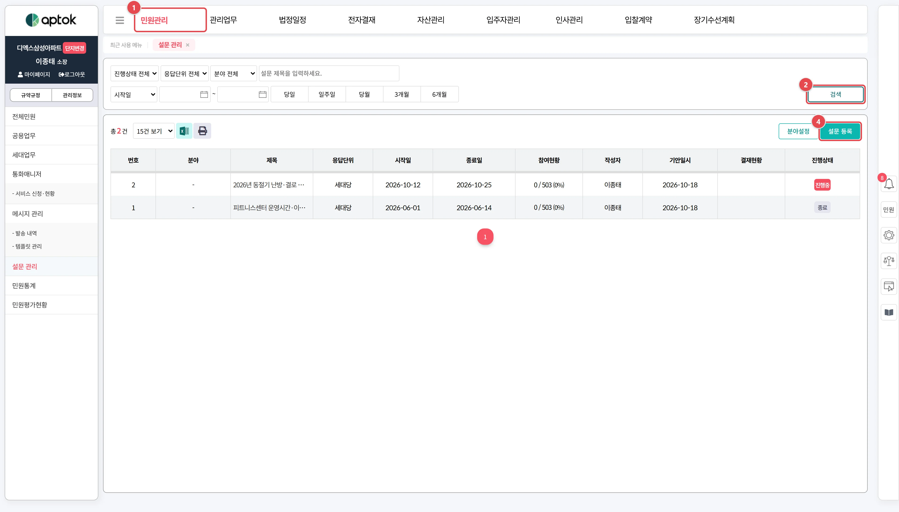
⤢ 크게 보기
2
진행상태·응답단위·기간을 정하고 검색을 클릭합니다.
진행 중인 설문만 보려면 진행상태에서 진행중을 고릅니다.
3
결과를 보려면 목록에서 설문 제목을 클릭합니다.
상세 화면에서 문항별 응답 집계를 봅니다.
4
새 설문을 만들려면 오른쪽 위 설문 등록을 클릭합니다.
주의
분야를 쓰려면 분야설정에서 먼저 만들어야 합니다. 만들지 않으면 등록할 때 미분류밖에 고를 수 없습니다.
응답단위는 등록할 때 정합니다. 시작한 뒤에는 바꾸지 마세요. 이미 받은 응답과 계산 기준이 어긋납니다.
자주 묻는 질문
설문과 투표는 무엇이 다른가요?
만드는 화면은 같고, 등록할 때 설문유형에서 고릅니다. 여러 문항을 물어보면 설문, 한 가지를 찬반으로 묻는 자리면 투표로 쓰면 됩니다.
참여율이 너무 낮습니다.
상세 화면 오른쪽 위 참여자 알림발송을 누르면 아직 안 한 사람에게 알림이 갑니다.
분야가 -로만 나옵니다.
분야를 하나도 만들지 않아서입니다. 분야설정에서 추가하세요.
민원관리›설문 관리›설문 등록
설문 등록
패턴 B권한 · 민원관리
설문이나 투표의 문항을 만들고 대상과 기간을 정해 올린다
핵심
화면이 위아래 두 덩어리다. 위쪽은 설문의 조건(결재, 분야, 제목, 기간, 응답 단위, 공개 정책, 발송 채널)이고, 아래쪽 문항 구성은 실제로 물어볼 내용이다. 위를 채우고 아래에 질문을 하나씩 붙인 뒤 오른쪽 위 등록을 누르면 입주민에게 나갑니다.
위쪽 입력 항목
결재여부
결재를 받고 내보낼 설문이면 결재선을 고릅니다. 결재선 사용안함을 고르면 결재 없이 바로 올라갑니다. 결재자를 직접 짜려면 결재자 지정을 씁니다.
분야
목록에서 설문을 묶는 꼬리표입니다. 목록 화면의 분야설정에서 만들어 둔 것만 나옵니다. 없으면 미분류입니다.
설문유형
설문과 투표 중에 고릅니다.
제목
입주민 앱에 그대로 보이는 이름입니다. 기간이 드러나게 적으면 나중에 찾기 쉽습니다.
시작일 · 종료일
시작일이 되면 자동으로 시작합니다. 종료일을 비워 두면 기간이 "수동 종료"로 표시되고, 직접 종료를 눌러야 끝납니다.
응답 단위
입주민별(개인별 응답)과 세대당 1응답 중에 고릅니다. 고르는 순간 오른쪽 대상 인원/세대수가 자동으로 채워집니다.
익명 여부
체크하면 동·호수와 답변자 이름이 결과에 표시되지 않습니다. 민감한 내용을 물을 때 켭니다.
결과 공개 정책
입주민에게 결과를 언제 보여줄지 정합니다. 진행 중 결과 공개 · 진행 중 참여수만 · 종료 후 공개 세 가지입니다. 투표는 보통 진행 중 참여수만이나 종료 후 공개로 둡니다.
발송 채널
선택안함과 앱 푸시 중에 고릅니다. 앱 푸시를 고르면 등록과 동시에 알림이 나갑니다.
참고 첨부파일 · 첨부사진
설문을 이해하는 데 필요한 자료를 붙입니다. 파일 하나에 100MB까지입니다.
본문 입력
+ 본문 입력을 누르면 설문 취지를 적는 칸이 펼쳐집니다. 안 써도 됩니다.
질문 만들기
새 질문 추가
아래쪽 +새 질문 추가를 누를 때마다 질문 카드가 하나씩 늘어납니다. 위에 총 N개 문항으로 개수가 나옵니다.
문항 유형
카드마다 주관식단일선택다중선택 중에 고릅니다. 선택형을 고르면 보기 입력칸이 나오고, 보기 추가로 항목을 늘립니다.
필수 항목
체크하면 답하지 않고는 설문을 제출할 수 없습니다.
개인정보
답변에 개인정보가 들어가는 문항에 체크합니다. 주관식으로 연락처나 이름을 받을 때 씁니다.
순서 바꾸기
카드 왼쪽 점 여섯 개(⠿)를 끌어 문항과 보기의 순서를 바꿉니다.
참고 정보 추가
질문이 아니라 읽어보라고 끼워 넣는 자료입니다. 참고 이미지(JPG·PNG·GIF·WEBP)와 참고 파일 두 가지가 있습니다. 도면이나 견적서를 보여주고 의견을 묻는 투표에 씁니다.
화면 아래 버튼
목록
저장하지 않고 나갑니다. 확인 창이 뜨고, 확인을 누르면 쓰던 내용이 사라집니다.
사진함
단지 사진함에 있는 사진을 골라 붙입니다.
임시저장
아직 내보내지 않고 저장만 합니다. 문항을 나눠서 만들 때 씁니다.
등록
실제로 올라갑니다. 결재선을 걸었으면 결재가 올라가고, 안 걸었으면 바로 입주민에게 공개됩니다. 발송 채널을 앱 푸시로 두었으면 이때 알림도 나갑니다.
따라 하기
1
설문 관리 목록에서 오른쪽 위 설문 등록을 클릭합니다.
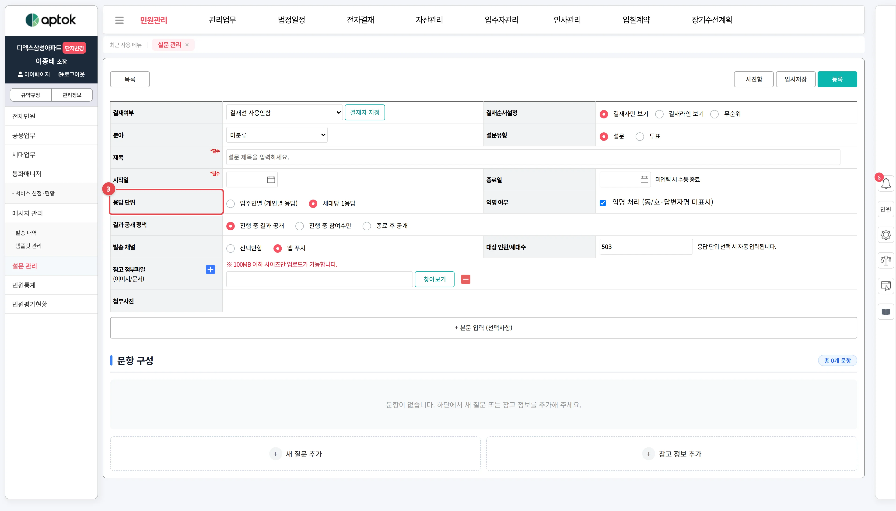
⤢ 크게 보기
2
결재여부·분야·설문유형·제목을 채웁니다.
결재 없이 바로 낼 설문이면 결재선 사용안함으로 둡니다.
3
시작일과 종료일을 넣고 응답 단위를 고릅니다.
응답 단위를 고르면 대상 인원·세대수가 자동으로 채워집니다.
4
익명 여부, 결과 공개 정책, 발송 채널을 정합니다.
앱 푸시를 고르면 등록과 동시에 입주민에게 알림이 갑니다.
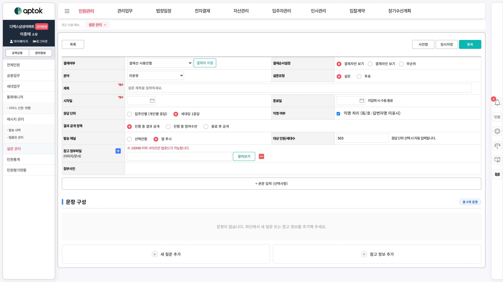
⤢ 크게 보기
5
아래 문항 구성에서 +새 질문 추가를 클릭하고 질문을 적습니다.
주관식단일선택다중선택 중에 고릅니다. 선택형이면 보기 추가로 항목을 늘립니다.
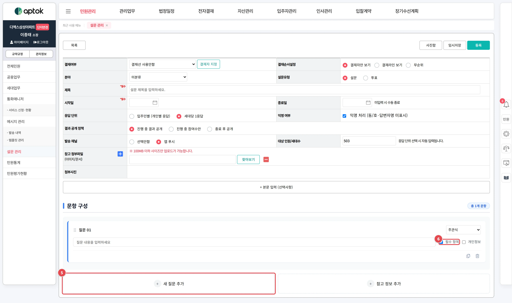
⤢ 크게 보기
6
꼭 답해야 하는 문항은 필수 항목에 체크합니다.
개인정보를 받는 문항이면 개인정보에도 체크합니다.
7
도면이나 안내문을 보여주려면 +참고 정보 추가를 클릭합니다.
질문이 아니라 읽을거리로 들어갑니다.
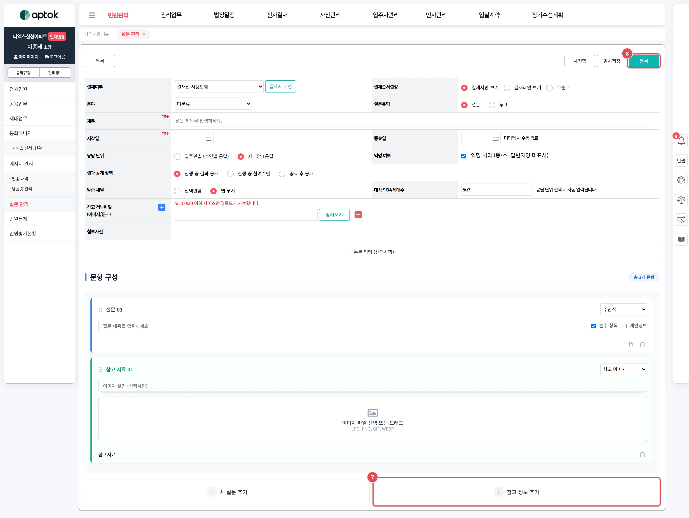
⤢ 크게 보기
8
다 되었으면 오른쪽 위 등록을 클릭합니다.
나중에 이어서 만들 것이면 임시저장을 누릅니다.
주의
등록을 누르면 실제로 입주민에게 나갑니다. 연습으로 누르지 마세요.
발송 채널을 앱 푸시로 두면 등록하는 순간 알림이 갑니다. 밤늦게 등록하지 마세요.
종료일을 비워 두면 기간이 "수동 종료"로 표시되고 자동으로 끝나지 않습니다. 상세 화면에서 직접 종료를 눌러야 합니다.
저장하지 않고 목록을 누르면 만들던 문항이 모두 사라집니다.
익명 여부는 등록 뒤에 바꾸지 마세요. 익명으로 답한 사람의 신뢰를 깨는 일입니다.
개인정보를 받는 문항은 꼭 필요한 것만 넣고 개인정보에 체크하세요.
자주 묻는 질문
분야에 미분류밖에 없습니다.
목록 화면 오른쪽 위 분야설정에서 분야를 먼저 만들어야 합니다.
만들다 말고 나중에 이어서 하고 싶습니다.
임시저장을 누르세요. 목록에 남아 있어 다시 열어 이어서 만들 수 있습니다.
대상이 몇 명인지 미리 알고 싶습니다.
응답 단위를 고르면 오른쪽 대상 인원/세대수에 자동으로 나옵니다.
도면을 보여주고 의견을 받고 싶습니다.
+참고 정보 추가로 참고 이미지를 넣고, 그 아래에 질문을 붙이세요.
결재를 받아야 하는 설문입니다.
위쪽 결재여부에서 결재선을 고르거나 결재자 지정으로 직접 짜세요.
민원관리›설문 관리›(설문 클릭)
설문 상세·결과
패턴 C권한 · 민원관리
설문의 진행 상황과 문항별 응답을 확인하고 기간을 조절한다
핵심
설문이 지금 어디까지 왔는지와 무엇이라고 답했는지를 한 화면에서 본다. 위쪽은 설문의 조건과 남은 기간, 가운데는 참여율, 아래는 문항별 집계다. 종료를 기다리지 않고 진행 중에도 결과를 볼 수 있다.
이 화면에만 있는 기능
참여자 알림발송
오른쪽 위 버튼입니다. 아직 답하지 않은 사람에게 다시 알림을 보냅니다. 참여율이 낮을 때 씁니다.
연장
종료일을 뒤로 미룹니다. 참여율이 낮은 채로 종료일이 다가올 때 씁니다.
종료
종료일 전에 설문을 끝냅니다. 종료일을 비워 두고 시작한 설문은 이 버튼으로만 끝낼 수 있습니다.
주관식 답변 표시
답변 아래에 동·호수와 이름, 답한 시각이 붙습니다. 등록할 때 익명 처리를 켠 설문은 이 부분이 표시되지 않습니다.
활용하기
이 설문을 그대로 복제해 새 등록 화면을 엽니다. 문항과 참고 자료까지 그대로 들어오므로, 분기마다 같은 설문을 돌릴 때 제목과 기간만 고치면 됩니다.
수정 · 삭제
오른쪽 위에 있습니다. 이미 응답이 쌓인 설문을 고치면 결과 해석이 어긋날 수 있으니 신중하게 씁니다.
엑셀 내려받기
오른쪽 위 활용하기 옆에 있는 초록색 엑셀 아이콘입니다. 세대별 답변 결과를 엑셀 파일로 내려받습니다. 결과를 따로 정리하거나 보관할 때 씁니다.
인쇄
맨 오른쪽 프린터 아이콘입니다. 지금 보고 있는 결과를 그대로 출력합니다.
따라 하기
1
설문 관리 목록에서 볼 설문의 제목을 클릭합니다.
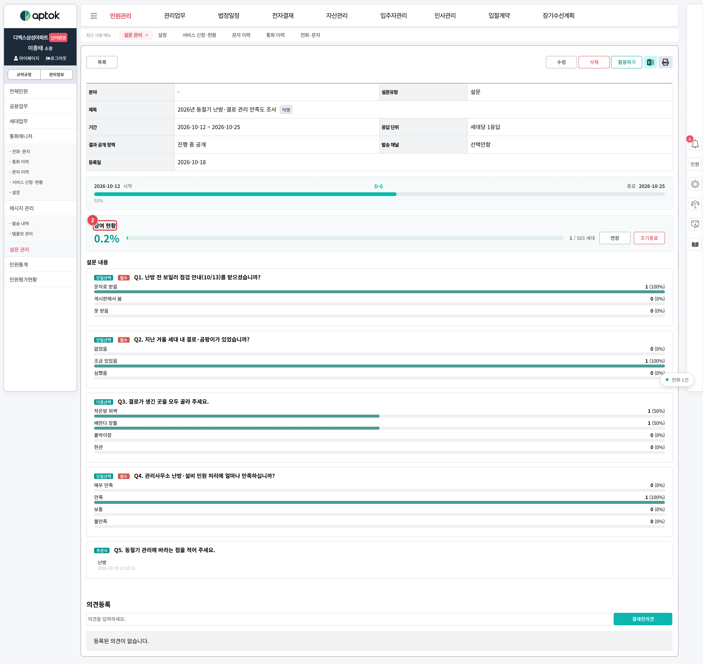
⤢ 크게 보기
2
가운데 참여 현황에서 참여율을 확인합니다.
낮으면 오른쪽 위 참여자 알림발송을 누릅니다.
3
아래로 내려 문항별 응답을 확인합니다.
선택형은 보기별 건수와 비율, 주관식은 답변 전체가 나옵니다.
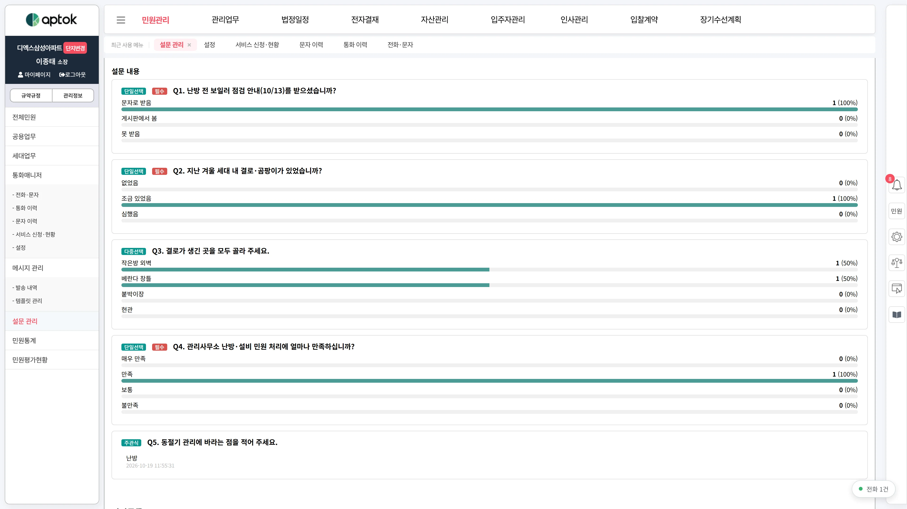
⤢ 크게 보기
4
기간을 늘리려면 연장, 지금 끝내려면 종료를 클릭합니다.
종료한 설문은 다시 진행 상태로 돌릴 수 없습니다.
5
같은 설문을 다시 돌리려면 오른쪽 위 활용하기를 클릭합니다.
문항이 그대로 복제된 등록 화면이 열립니다. 제목과 기간만 고치면 됩니다.
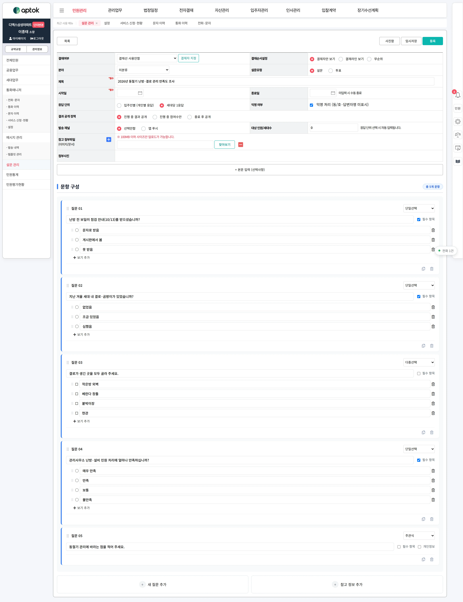
⤢ 크게 보기
주의
참여자 알림발송은 실제로 입주민에게 알림이 갑니다. 확인용으로 누르지 마세요.
종료를 누르면 더 이상 응답을 받지 않습니다. 되돌릴 수 없습니다.
응답이 이미 쌓인 설문을 수정하면 앞뒤 결과의 기준이 달라집니다.
삭제하면 모아 둔 응답도 함께 사라집니다. 필요한 결과는 먼저 갈무리하세요.
익명 설문이라도 주관식 답변에는 답한 사람을 알 만한 내용이 적혀 있을 수 있습니다. 공유할 때 조심하세요.
자주 묻는 질문
종료일을 안 넣고 시작했습니다. 어떻게 끝내나요?
상세 화면 참여 현황 오른쪽의 종료를 누르면 끝납니다.
참여율이 낮아 기간을 더 주고 싶습니다.
연장으로 종료일을 미루고, 참여자 알림발송으로 안 한 사람에게 알립니다.
지난 분기와 똑같은 설문을 또 돌려야 합니다.
활용하기를 누르세요. 문항이 그대로 복제되어 제목과 기간만 고치면 됩니다.
답한 사람이 누구인지 안 보입니다.
등록할 때 익명 처리를 켠 설문입니다. 정상입니다.
결과를 엑셀로 받고 싶습니다.
상세 화면 오른쪽 위 활용하기 옆의 초록색 엑셀 아이콘을 누르면 세대별 답변 결과가 엑셀 파일로 내려받아집니다.
민원관리›민원통계
민원통계
패턴 D권한 · 민원관리
민원 접수와 처리 현황을 집계해 본다
민원통계 화면은 준비 중입니다.
민원관리›민원평가현황
민원평가현황
패턴 D권한 · 민원관리
입주민이 매긴 민원 처리 평가를 담당자별로 본다
핵심
민원을 처리한 뒤 입주민이 매긴 평점을 모아 보는 화면이다. 담당자별로 순위가 매겨지고 양호와 개선 필요로 상태가 표시된다. 관리사무소의 응대 품질을 숫자로 확인하는 곳이다.
위쪽 요약
평가 민원 수
평가가 매겨진 민원 건수입니다.
전체 평균 평점
5점 만점 기준 평균입니다.
평가 대상 담당자
평가를 받은 사람 수입니다.
낮은 평가 (1~2점)
낮은 점수를 받은 건수입니다. 0이 아니면 어떤 민원이었는지 확인해 볼 필요가 있습니다.
기본 조작은 목록 화면 공통 사용법에 정리되어 있습니다. 아래에는 이 화면에만 해당하는 내용만 적었습니다.
이 화면에만 있는 기능
담당자별 순위 / 변경 이력 탭
순위를 보는 탭과 평가가 바뀐 이력을 보는 탭으로 나뉩니다.
평점 분포
5점부터 1점까지 몇 건씩인지 막대로 보여줍니다.
상태
양호와 개선 필요로 표시됩니다. 평균 평점에 따라 자동으로 매겨집니다.
담당자 상세 평가
왼쪽에서 담당자를 클릭하면 오른쪽에 그 사람의 상세 평가가 나옵니다.
공동 처리 안내
화면 아래에 안내가 있습니다. 담당자 둘이 함께 처리한 민원은 두 사람 모두에게 같은 평점이 집계되므로, 담당자별 평가건수를 합치면 전체 평가건수보다 많을 수 있습니다.
따라 하기
1
상단 민원관리를 클릭한 뒤 민원평가현황을 클릭합니다.
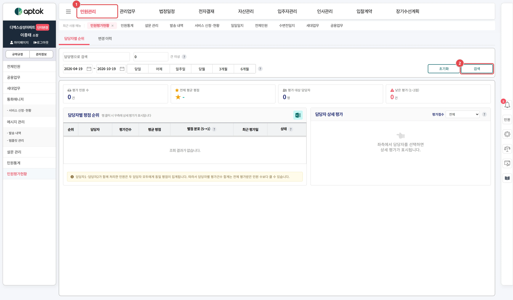
⤢ 크게 보기
2
기간을 정하고 검색을 클릭합니다.
기본으로 최근 6개월이 잡혀 있습니다.
3
담당자를 클릭하면 오른쪽에 상세 평가가 나옵니다.
주의
담당자 둘이 함께 처리한 민원은 두 사람 모두에게 집계됩니다. 합계가 전체와 다를 수 있습니다.
평가는 사람에 대한 것입니다. 순위를 다룰 때 신중하게 쓰세요.
자주 묻는 질문
담당자별 건수를 더하면 전체보다 많습니다.
둘이 함께 처리한 민원이 두 사람 모두에게 집계되기 때문입니다. 정상입니다.
낮은 평가를 받은 민원을 찾고 싶습니다.
담당자를 클릭하면 오른쪽에 상세 평가가 나옵니다.
관리업무›사진함
사진함
패턴 A권한 · 관리업무 > 열람
현장 사진을 분류별로 모아 보관하고, 일지·보고서에 다시 꺼내 쓴다
핵심
사진마다 NO · 공종 · 위치 · 내용을 적고 분류(저장위치)를 골라 올린다. 사진 정보 표기를 켜 두면 이 정보가 사진 귀퉁이에 표처럼 찍혀 저장되므로, 출력하거나 보고서에 붙여도 어디서 무엇을 찍었는지 알 수 있다.
기본 조작은 목록 화면 공통 사용법에 정리되어 있습니다. 아래에는 이 화면에만 해당하는 내용만 적었습니다.
이 화면에만 있는 기능
분류 목록
왼쪽 분류(건물외부·건물내부·전기소방승강기홈넷 설비·조경 등)를 누르면 그 분류 사진만 봅니다. 숫자는 사진 수입니다.
분류 설정 · 특별분류 설정
분류 이름을 바꾸거나 추가합니다. 특별분류(예를 들어 하자)는 분류와 따로 한 번 더 묶어 볼 때 씁니다.
사진 정보 표기
켜면 NO·공종·위치·내용이 사진 안에 찍힙니다. 위치는 좌측상단·좌측하단·우측상단·우측하단 중에 고릅니다.
리스트 출력
고른 사진을 한 장에 여러 장씩 모아 인쇄합니다.
따라 하기
1
상단 관리업무를 클릭한 뒤 왼쪽 목록에서 사진함을 클릭합니다.
최근에 올린 사진부터 카드로 나옵니다.
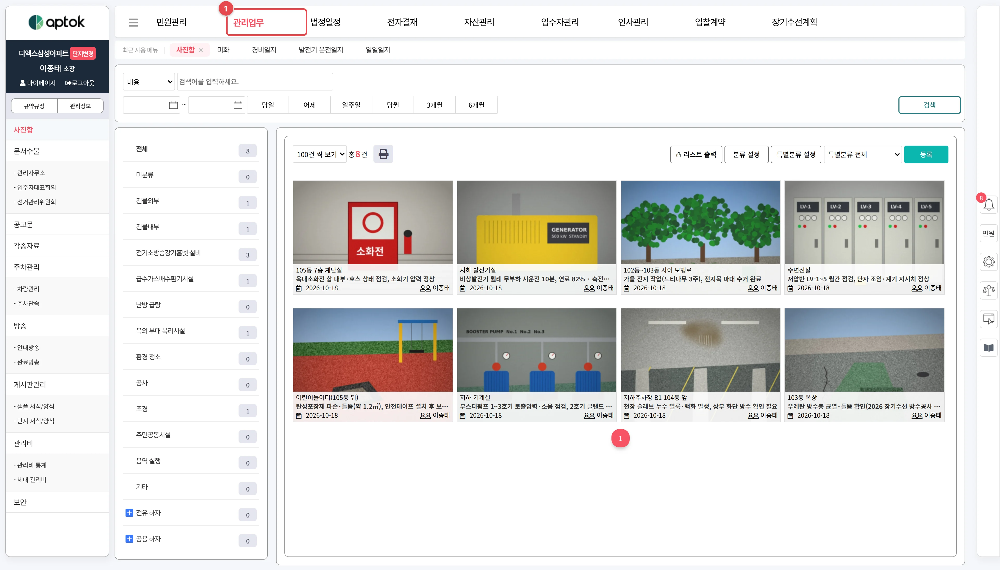
⤢ 크게 보기
2
오른쪽 위 등록을 클릭합니다.
「사진함 등록하기」 창이 열립니다.
3
NO·공종·위치·내용을 적고 분류를 고른 뒤 찾아보기로 사진을 고릅니다.
아래에 정보가 찍힌 미리보기가 나옵니다.
4
사진 등록을 클릭합니다.
자주 묻는 질문
일지에 사진을 붙이려면 다시 올려야 하나요?
아닙니다. 일지·보고서 작성 화면의 사진함 버튼으로 여기 올린 사진을 골라 붙입니다.
관리업무›문서수불›관리사무소
관리사무소
패턴 A권한 · 관리업무 > 열람
관리사무소가 주고받은 공문(수신·발신)을 문서번호와 함께 대장으로 관리한다
핵심
문서마다 수신·발신 구분과 발신처·수신처·문서번호·날짜를 적고 원문 파일을 붙인다. 관리사무소·입주자대표회의·선거관리위원회가 같은 형식의 대장을 따로 가진다.
기본 조작은 목록 화면 공통 사용법에 정리되어 있습니다. 아래에는 이 화면에만 해당하는 내용만 적었습니다.
표에 보이는 항목
문서번호
분류
구분(수신·발신)
발신처
수신처
제목
날짜
결재현황
첨부
이 화면에만 있는 기능
수/발신 · 수/발신처
수신 문서만, 발신 문서만 또는 특정 기관 문서만 걸러 봅니다.
분류설정
분류(일반·거래처·행정기관 등)를 정리합니다.
엑셀 등록
기존 문서 대장을 엑셀로 한 번에 옮깁니다.
따라 하기
1
상단 관리업무를 클릭한 뒤 왼쪽 목록에서 문서수불을 클릭하고 관리사무소를 클릭합니다.
빨간 「발신」, 파란 「수신」으로 구분됩니다.
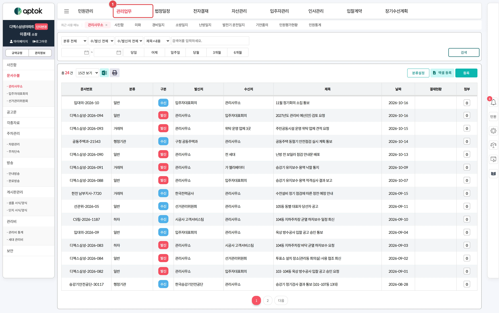
⤢ 크게 보기
2
검색·기간·내려받기 등 기본 조작은 목록 화면 공통 사용법을 따릅니다.
3
등록을 눌러 수신·발신 구분, 발신처·수신처, 제목을 넣고 공문 파일을 붙여 저장합니다.
관리업무›문서수불›입주자대표회의
입주자대표회의
패턴 A권한 · 관리업무 > 열람
입주자대표회의가 주고받은 공문(수신·발신)을 문서번호와 함께 대장으로 관리한다
핵심
문서마다 수신·발신 구분과 발신처·수신처·문서번호·날짜를 적고 원문 파일을 붙인다. 관리사무소·입주자대표회의·선거관리위원회가 같은 형식의 대장을 따로 가진다.
기본 조작은 목록 화면 공통 사용법에 정리되어 있습니다. 아래에는 이 화면에만 해당하는 내용만 적었습니다.
표에 보이는 항목
문서번호
분류
구분(수신·발신)
발신처
수신처
제목
날짜
결재현황
첨부
이 화면에만 있는 기능
수/발신 · 수/발신처
수신 문서만, 발신 문서만 또는 특정 기관 문서만 걸러 봅니다.
분류설정
분류(일반·거래처·행정기관 등)를 정리합니다.
엑셀 등록
기존 문서 대장을 엑셀로 한 번에 옮깁니다.
따라 하기
1
상단 관리업무를 클릭한 뒤 왼쪽 목록에서 문서수불을 클릭하고 입주자대표회의를 클릭합니다.
빨간 「발신」, 파란 「수신」으로 구분됩니다.
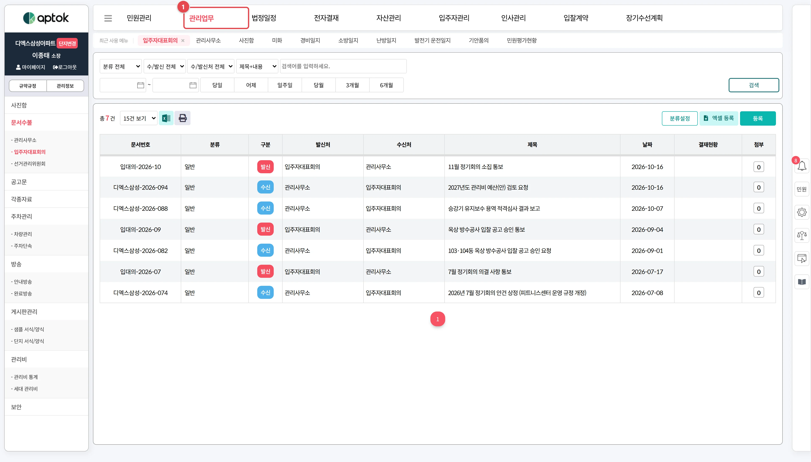
⤢ 크게 보기
2
검색·기간·내려받기 등 기본 조작은 목록 화면 공통 사용법을 따릅니다.
3
등록을 눌러 수신·발신 구분, 발신처·수신처, 제목을 넣고 공문 파일을 붙여 저장합니다.
관리업무›문서수불›선거관리위원회
선거관리위원회
패턴 A권한 · 관리업무 > 열람
선거관리위원회가 주고받은 공문(수신·발신)을 문서번호와 함께 대장으로 관리한다
핵심
문서마다 수신·발신 구분과 발신처·수신처·문서번호·날짜를 적고 원문 파일을 붙인다. 관리사무소·입주자대표회의·선거관리위원회가 같은 형식의 대장을 따로 가진다.
기본 조작은 목록 화면 공통 사용법에 정리되어 있습니다. 아래에는 이 화면에만 해당하는 내용만 적었습니다.
표에 보이는 항목
문서번호
분류
구분(수신·발신)
발신처
수신처
제목
날짜
결재현황
첨부
이 화면에만 있는 기능
수/발신 · 수/발신처
수신 문서만, 발신 문서만 또는 특정 기관 문서만 걸러 봅니다.
분류설정
분류(일반·거래처·행정기관 등)를 정리합니다.
엑셀 등록
기존 문서 대장을 엑셀로 한 번에 옮깁니다.
따라 하기
1
상단 관리업무를 클릭한 뒤 왼쪽 목록에서 문서수불을 클릭하고 선거관리위원회를 클릭합니다.
빨간 「발신」, 파란 「수신」으로 구분됩니다.
⤢ 크게 보기
2
검색·기간·내려받기 등 기본 조작은 목록 화면 공통 사용법을 따릅니다.
3
등록을 눌러 수신·발신 구분, 발신처·수신처, 제목을 넣고 공문 파일을 붙여 저장합니다.
관리업무›공고문
공고문
패턴 A권한 · 관리업무 > 열람
단지 공고문을 게시 기간과 함께 등록하고 입주민 앱에 노출한다
핵심
공고마다 시작일·종료일을 정한다. 입주민 앱 노출을 켜면 입주민 앱 공지에도 보인다.
기본 조작은 목록 화면 공통 사용법에 정리되어 있습니다. 아래에는 이 화면에만 해당하는 내용만 적었습니다.
표에 보이는 항목
분류
제목
작성자
시작일
종료일
결재현황
첨부
입주민 앱 노출
이 화면에만 있는 기능
분류
대표회의·안내문·회계·관리비·주민동의·공사 등으로 나눕니다. 분류설정에서 정리합니다.
입주민 앱 노출
스위치를 켜면 입주민 앱에 게시됩니다.
따라 하기
1
상단 관리업무를 클릭한 뒤 왼쪽 목록에서 공고문을 클릭합니다.
최근 공고부터 나옵니다.
⤢ 크게 보기
2
검색·기간·내려받기 등 기본 조작은 목록 화면 공통 사용법을 따릅니다.
3
등록을 눌러 분류·제목·게시 기간·내용을 넣고 저장합니다.
주의
입주민 앱 노출을 켜면 입주민에게 바로 보입니다. 내용을 확인한 뒤 켜세요.
관리업무›각종자료
각종자료
패턴 A권한 · 관리업무 > 열람
평가표·회의 자료·규정·견적 비교 같은 업무 자료를 분류별로 보관한다
핵심
왼쪽 분류(입찰·장기수선·인사노무·주민공동시설 등) 아래 소분류까지 두고 자료를 올린다. 결재가 필요 없는 참고 자료를 모아 두는 곳이다.
기본 조작은 목록 화면 공통 사용법에 정리되어 있습니다. 아래에는 이 화면에만 해당하는 내용만 적었습니다.
표에 보이는 항목
분류
제목
작성자
날짜
첨부
이 화면에만 있는 기능
분류 목록
분류를 누르면 그 분류 자료만 봅니다. 숫자는 자료 수입니다.
분류설정
분류와 소분류를 정리합니다.
따라 하기
1
상단 관리업무를 클릭한 뒤 왼쪽 목록에서 각종자료를 클릭합니다.
⤢ 크게 보기
2
검색·기간·내려받기 등 기본 조작은 목록 화면 공통 사용법을 따릅니다.
3
등록을 눌러 분류·제목을 고르고 파일을 붙여 저장합니다.
관리업무›주차관리›차량관리
차량관리
패턴 A권한 · 관리업무 > 열람
입주민 차량을 세대별로 등록하고 해지한다
핵심
차량마다 동·호와 차량번호·소유자·차종·연락처를 등록한다. 여기에 등록된 차량이 주차단속에서 입주민 차량으로 확인되고, 세대관리의 차량정보에도 나온다.
기본 조작은 목록 화면 공통 사용법에 정리되어 있습니다. 아래에는 이 화면에만 해당하는 내용만 적었습니다.
표에 보이는 항목
동
호
차량번호
소유자
차종
휴대폰번호
등록일
해지일
이 화면에만 있는 기능
검색 기준
차량번호·소유자명·차종·휴대폰번호로 찾습니다.
엑셀 등록
차량을 엑셀로 한 번에 올립니다.
따라 하기
1
상단 관리업무를 클릭한 뒤 왼쪽 목록에서 주차관리를 클릭하고 차량관리를 클릭합니다.
동·호 순으로 나옵니다. 차량번호를 누르면 수정·해지할 수 있습니다.
⤢ 크게 보기
2
검색·기간·내려받기 등 기본 조작은 목록 화면 공통 사용법을 따릅니다.
3
차량 등록을 눌러 동·호·차량번호·차종을 넣고 저장합니다.
주의
개인정보가 표시되는 화면입니다.
관리업무›주차관리›주차단속
주차단속
패턴 A권한 · 관리업무 > 열람
주차 위반 차량을 기록하고, 필요하면 차주에게 알림을 보낸다
기본 조작은 목록 화면 공통 사용법에 정리되어 있습니다. 아래에는 이 화면에만 해당하는 내용만 적었습니다.
표에 보이는 항목
접수일시
차량번호
차종
연락처
입주민 여부
세대정보(동·호)
특기사항
알림 발송여부
첨부
이 화면에만 있는 기능
주차위반 등록
차량번호 일부를 넣으면 등록 차량을 찾아 차종·세대가 자동으로 채워집니다. 외부 차량은 직접 적습니다.
입주자·외부 차량 스위치
검색줄의 스위치로 입주민 차량과 외부 차량을 나눠 봅니다.
알림발송
체크한 건의 차주에게 알림을 보냅니다. 보내기 전에는 「미발송」으로 표시됩니다.
엑셀 등록
여러 건을 엑셀로 한 번에 올립니다.
따라 하기
1
상단 관리업무를 클릭한 뒤 왼쪽 목록에서 주차관리 › 주차단속을 클릭합니다.
기본으로 최근 1주일 단속 내역이 나옵니다.
⤢ 크게 보기
2
주차위반 등록을 눌러 차량번호·위반 일시·위치와 특기사항을 적고 저장합니다.
저장만 해서는 알림이 나가지 않습니다.
3
알림이 필요하면 목록에서 체크한 뒤 알림발송을 클릭합니다.
주의
알림발송은 차주에게 실제로 알림이 나갑니다. 차량번호와 내용을 확인한 뒤 누르세요.
관리업무›방송›안내방송
안내방송
패턴 B권한 · 관리업무 > 열람
단지 안내방송 문안을 등록하고 예약 시각에 음성으로 내보낸다
핵심
방송 문안을 적어 예약해 두면, 그 시각에 음성(TTS)으로 바뀌어 방송된다. 화면 위쪽 큰 카드가 다음 방송, 오른쪽이 금주 방송 일정, 아래가 등록한 방송 목록이다. 등록만 해서는 바로 방송되지 않는다.
표에 보이는 항목
방송분류
방송일시
제목
작성자
등록일시
결재현황
이 화면에만 있는 기능
다음 방송 카드
가장 가까운 예약 방송입니다. 미리 듣기로 음성을 들어 보고, 방송 시작은 즉시 방송합니다.
자동 실행
켜 두면 예약 시각에 자동으로 방송됩니다. 끄면 사람이 방송 시작을 눌러야 합니다.
방송등록
결재선·예정 방송일시·반복(1~3회)·음성(성별·속도)·제목·내용(600자 이내)을 넣습니다. 방송문 불러오기로 자주 쓰는 문안을 가져옵니다.
따라 하기
1
상단 관리업무를 클릭한 뒤 왼쪽 목록에서 방송 › 안내방송을 클릭합니다.
다음 방송과 이번 주 일정이 위에 보입니다.
⤢ 크게 보기
2
방송등록을 클릭해 예정 방송일시와 제목·내용을 넣습니다.
지난 시각이나 다른 방송과 겹치는 시각은 등록되지 않습니다.
3
미리듣기로 음성을 확인한 뒤 등록을 클릭합니다.
등록한 방송은 목록과 금주 방송 일정에 나타납니다.
주의
방송 시작과 재방송은 그 자리에서 실제 방송이 나갑니다.
자동 실행을 켜 두면 예약 시각에 사람 확인 없이 방송됩니다.
자주 묻는 질문
등록 버튼을 눌러도 반응이 없습니다.
예정 방송일시가 비었거나 지난 시각일 때입니다. 달력에서 날짜를 다시 고르고 시각을 넣으세요.
관리업무›방송›완료방송
완료방송
패턴 B권한 · 관리업무 > 열람
실제로 나간 방송의 기록을 조회한다
핵심
안내방송에서 예약한 방송이 실제로 방송된 뒤 이곳으로 옮겨진다. 예약만 해 두고 아직 방송되지 않은 건은 안내방송에 남아 있다.
표에 보이는 항목
방송분류
예약방송일시
송출일시
제목
작성자
결재이력
결과
따라 하기
1
상단 관리업무를 클릭한 뒤 왼쪽 목록에서 방송 › 완료방송을 클릭합니다.
기본으로 최근 1개월이 나옵니다. 송출한 방송이 없으면 「데이터가 없습니다」로 보입니다.
⤢ 크게 보기
2
방송을 눌러 내용을 보고, 같은 방송을 다시 내보내려면 재방송 또는 방송 활용하기를 클릭합니다.
방송 활용하기는 내용을 복사해 새 방송 등록 화면을 엽니다.
주의
재방송은 그 자리에서 실제 방송이 나갑니다.
관리업무›게시판관리›샘플 서식/양식
샘플 서식/양식
패턴 E권한 · 관리업무 > 열람
아파트OK가 제공하는 공통 서식·양식(포스터·안내문·계약서 등)을 내려받아 쓴다
핵심
모든 단지가 함께 보는 서식 모음이다. 단지에서 고칠 수는 없고, 내려받아 고쳐 쓴다. 우리 단지만 쓰는 서식은 단지 서식/양식에 올린다.
표에 보이는 항목
번호
분류
제목
첨부
이 화면에만 있는 기능
분류 목록
갑질예방·겨울철·계약서·공문양식 등 분류별로 봅니다.
따라 하기
1
상단 관리업무를 클릭한 뒤 왼쪽 목록에서 게시판관리를 클릭하고 샘플 서식/양식을 클릭합니다.
첨부 칸의 숫자를 누르면 파일을 내려받습니다.
⤢ 크게 보기
관리업무›게시판관리›단지 서식/양식
단지 서식/양식
패턴 E권한 · 관리업무 > 열람
단지에서 직접 쓰는 신청서·점검표 같은 서식 파일을 분류별로 올려 두고 내려받아 쓴다
핵심
샘플 서식/양식이 아파트OK가 제공하는 공통 서식이라면, 이곳은 우리 단지 서식을 모아 두는 곳이다. 분류(예: 입주민 신청서 · 관리사무소 서식)를 먼저 만들고 글마다 파일을 붙인다.
표에 보이는 항목
대분류
소분류
제목
첨부
이 화면에만 있는 기능
분류 목록
왼쪽 분류를 누르면 그 분류 글만 봅니다. 숫자는 글 수입니다.
분류설정
1차 분류 추가로 분류를 만들고 분류 줄의 ＋로 소분류를 둡니다. 가나다순 정렬로 이름순 정리도 됩니다.
따라 하기
1
상단 관리업무를 클릭한 뒤 왼쪽 목록에서 게시판관리 › 단지 서식/양식을 클릭합니다.
첨부 칸의 숫자를 누르면 파일을 내려받습니다.
⤢ 크게 보기
2
새 서식을 올리려면 등록을 눌러 제목·분류를 정하고 파일을 붙여 등록합니다.
본문에 작성 요령을 적어 두면 직원이 쓰기 쉽습니다. 파일 하나당 100MB 이하입니다.
관리업무›관리비›관리비 통계
관리비 통계
패턴 D권한 · 관리업무 > 열람
K-apt(공동주택관리정보시스템)에 신고한 관리비 자료를 불러와 항목별·기간별로 비교한다
핵심
왼쪽에서 단지의 K-apt 계정으로 로그인하고 정보 불러오기 이용 동의에 체크하면 관리비 자료를 가져온다. 가운데 발생항목(공용관리비 › 일반관리비 › 인건비 등)을 체크하고 선택내역 차트보기로 비교한다.
이 화면에만 있는 기능
년 단위 보기
월별이 아니라 연도별 합계로 봅니다.
발생항목 ＋ / －
항목을 펼치거나 접습니다.
따라 하기
1
상단 관리업무를 클릭한 뒤 왼쪽 목록에서 관리비를 클릭하고 관리비 통계를 클릭합니다.
K-apt 자료를 아직 불러오지 않았으면 오른쪽이 비어 있습니다.
⤢ 크게 보기
주의
K-apt 계정은 단지(관리주체) 계정입니다. 개인 계정을 쓰지 마세요.
관리업무›관리비›세대 관리비
세대 관리비
패턴 D권한 · 관리업무 > 열람
관리비 부과 프로그램에서 만든 세대별 관리비 파일을 달마다 올려 입주민 앱에 보여 준다
핵심
연도를 고르면 1~12월 줄이 나온다. 달마다 부과 프로그램의 세대별 관리비 파일을 올리면 입주민 앱에서 우리 집 관리비를 볼 수 있다.
표에 보이는 항목
분류(월)
업로드일시
파일명
확장자
행 수
상태
처리
이 화면에만 있는 기능
세대 관리비 사용
오른쪽 위 스위치입니다. 꺼 두면 입주민 앱에 세대 관리비가 보이지 않습니다.
처리 ⬆
그 달 파일을 올립니다.
따라 하기
1
상단 관리업무를 클릭한 뒤 왼쪽 목록에서 관리비를 클릭하고 세대 관리비를 클릭합니다.
아직 올린 달이 없으면 모든 줄이 「업로드」 상태입니다.
⤢ 크게 보기
주의
파일을 올리면 입주민에게 보입니다. 금액을 확인한 뒤 올리세요.
관리업무›보안
보안
패턴 D권한 · 관리업무 > 열람
누가 언제 어떤 화면의 엑셀(개인정보 포함)을 왜 내려받았는지 기록을 조회한다
핵심
아파트OK에서 엑셀을 내려받으면 사유 입력 창이 먼저 뜬다. 사유 구분(업무 보고/결재 · 민원 처리 · 회계/결산 · 입주민 요청 등)과 상세 사유를 적어야 내려받기가 되고, 그 기록이 이 화면에 남는다. 개인정보 보호 점검이나 감사 때 근거로 쓴다.
표에 보이는 항목
No.
다운로드 일시
요청자
메뉴
사유 구분
상세 사유
요청 IP
완료 일시
따라 하기
1
상단 관리업무를 클릭한 뒤 왼쪽 목록에서 보안을 클릭합니다.
기본으로 최근 3개월이 나옵니다. 사유 구분과 요청자 이름으로 걸러 봅니다.
⤢ 크게 보기
주의
내려받을 때 사유를 구체적으로 적으세요. 이 기록은 개인정보 점검·감사 때 근거가 됩니다.
자주 묻는 질문
엑셀을 내려받으려는데 창이 하나 더 뜹니다.
사유 입력 창입니다. 사유 구분을 고르고 다운로드를 누르면 내려받아지고, 이 화면에 기록됩니다.
법정일정›월간일정
월간일정
패턴 D권한 · 법정일정 > 열람
단지의 법정점검·계약 만료·공사 일정을 한 달 달력으로 본다
핵심
관리계획(안전점검·법정검사·신고·공개·교육)과 계약·공사 일정이 달력에 모인다. 주황은 법정점검, 빨강은 계약 만료처럼 색으로 구분된다.
이 화면에만 있는 기능
오늘
이번 달로 돌아옵니다.
일정 막대
누르면 그 일정의 내용을 봅니다.
따라 하기
1
상단 법정일정을 클릭한 뒤 왼쪽 목록에서 월간일정을 클릭합니다.
오늘 날짜는 노란 칸으로 표시됩니다.
⤢ 크게 보기
법정일정›개인일정
개인일정
패턴 A권한 · 법정일정 > 열람
나만 보는 개인 일정을 달력에 등록한다
핵심
월간일정과 같은 달력이지만 로그인한 사람의 일정만 보인다. 현장 확인·업체 미팅처럼 개인적으로 챙길 일을 적는다.
기본 조작은 목록 화면 공통 사용법에 정리되어 있습니다. 아래에는 이 화면에만 해당하는 내용만 적었습니다.
이 화면에만 있는 기능
날짜 칸
날짜를 누르면 그날 일정을 등록합니다.
오늘
이번 달로 돌아옵니다.
따라 하기
1
상단 법정일정을 클릭한 뒤 왼쪽 목록에서 개인일정을 클릭합니다.
⤢ 크게 보기
2
검색·기간·내려받기 등 기본 조작은 목록 화면 공통 사용법을 따릅니다.
법정일정›관리계획›안전점검
안전점검
패턴 C권한 · 법정일정 > 열람
해빙기·우기·월동기 안전점검, 승강기·놀이시설·저수조 점검처럼 주기적으로 해야 하는 안전점검의 연간 계획과 실시 기록을 관리한다
핵심
관리계획 화면은 모두 같은 연간표 형식이다. 항목마다 관련법·벌칙·주기와 담당자가 나와, 무엇을 언제까지 해야 하는지 한 표에서 봅니다.
표에 보이는 항목
항목
관련법
벌칙
주기(실행시기)
담당자
1~12월
이 화면에만 있는 기능
연도 이동
가운데 ◀ ▶ 로 연도를 바꾸고 금년으로 올해로 돌아옵니다.
항목 ＋
단지에서 따로 챙기는 항목을 추가합니다.
월 칸
파란 칸은 실시(완료)한 날짜, 분홍 칸은 예정일입니다. 칸을 누르면 그 달 일정을 등록·확인합니다. 빨간 테두리는 이번 달입니다.
따라 하기
1
상단 법정일정을 클릭한 뒤 왼쪽 목록에서 관리계획을 클릭하고 안전점검을 클릭합니다.
올해 계획이 월별 칸에 표시됩니다.
⤢ 크게 보기
주의
기한을 넘기면 벌칙(과태료 등)이 있는 항목입니다. 분홍 칸(예정일)을 수시로 확인하세요.
법정일정›관리계획›법정검사
법정검사
패턴 C권한 · 법정일정 > 열람
승강기 정기검사, 소방시설 작동·종합점검, 저수조 수질검사처럼 외부 기관이 하는 법정검사의 연간 계획과 실시 기록을 관리한다
핵심
관리계획 화면은 모두 같은 연간표 형식이다. 항목마다 관련법·벌칙·주기와 담당자가 나와, 무엇을 언제까지 해야 하는지 한 표에서 봅니다.
표에 보이는 항목
항목
관련법
벌칙
주기(실행시기)
담당자
1~12월
이 화면에만 있는 기능
연도 이동
가운데 ◀ ▶ 로 연도를 바꾸고 금년으로 올해로 돌아옵니다.
항목 ＋
단지에서 따로 챙기는 항목을 추가합니다.
월 칸
파란 칸은 실시(완료)한 날짜, 분홍 칸은 예정일입니다. 칸을 누르면 그 달 일정을 등록·확인합니다. 빨간 테두리는 이번 달입니다.
따라 하기
1
상단 법정일정을 클릭한 뒤 왼쪽 목록에서 관리계획을 클릭하고 법정검사를 클릭합니다.
올해 계획이 월별 칸에 표시됩니다.
⤢ 크게 보기
주의
기한을 넘기면 벌칙(과태료 등)이 있는 항목입니다. 분홍 칸(예정일)을 수시로 확인하세요.
법정일정›관리계획›등록/신고/보고
등록/신고/보고
패턴 C권한 · 법정일정 > 열람
보험 가입 현황 입력·K-apt 등록·관리비 신고처럼 기한 안에 해야 하는 등록·신고·보고의 연간 계획과 실시 기록을 관리한다
핵심
관리계획 화면은 모두 같은 연간표 형식이다. 항목마다 관련법·벌칙·주기와 담당자가 나와, 무엇을 언제까지 해야 하는지 한 표에서 봅니다.
표에 보이는 항목
항목
관련법
벌칙
주기(실행시기)
담당자
1~12월
이 화면에만 있는 기능
연도 이동
가운데 ◀ ▶ 로 연도를 바꾸고 금년으로 올해로 돌아옵니다.
항목 ＋
단지에서 따로 챙기는 항목을 추가합니다.
월 칸
파란 칸은 실시(완료)한 날짜, 분홍 칸은 예정일입니다. 칸을 누르면 그 달 일정을 등록·확인합니다. 빨간 테두리는 이번 달입니다.
따라 하기
1
상단 법정일정을 클릭한 뒤 왼쪽 목록에서 관리계획을 클릭하고 등록/신고/보고를 클릭합니다.
올해 계획이 월별 칸에 표시됩니다.
⤢ 크게 보기
주의
기한을 넘기면 벌칙(과태료 등)이 있는 항목입니다. 분홍 칸(예정일)을 수시로 확인하세요.
법정일정›관리계획›공개/게시/청취
공개/게시/청취
패턴 C권한 · 법정일정 > 열람
관리비 공개·회계감사 결과 공개·입찰 결과 게시처럼 입주민에게 알려야 하는 공개·게시·의견청취의 연간 계획과 실시 기록을 관리한다
핵심
관리계획 화면은 모두 같은 연간표 형식이다. 항목마다 관련법·벌칙·주기와 담당자가 나와, 무엇을 언제까지 해야 하는지 한 표에서 봅니다.
표에 보이는 항목
항목
관련법
벌칙
주기(실행시기)
담당자
1~12월
이 화면에만 있는 기능
연도 이동
가운데 ◀ ▶ 로 연도를 바꾸고 금년으로 올해로 돌아옵니다.
항목 ＋
단지에서 따로 챙기는 항목을 추가합니다.
월 칸
파란 칸은 실시(완료)한 날짜, 분홍 칸은 예정일입니다. 칸을 누르면 그 달 일정을 등록·확인합니다. 빨간 테두리는 이번 달입니다.
따라 하기
1
상단 법정일정을 클릭한 뒤 왼쪽 목록에서 관리계획을 클릭하고 공개/게시/청취를 클릭합니다.
올해 계획이 월별 칸에 표시됩니다.
⤢ 크게 보기
주의
기한을 넘기면 벌칙(과태료 등)이 있는 항목입니다. 분홍 칸(예정일)을 수시로 확인하세요.
법정일정›관리계획›외부교육
외부교육
패턴 C권한 · 법정일정 > 열람
직원이 외부 기관에서 받아야 하는 법정교육(소방안전관리자 실무교육·전기안전 교육·주택관리사 보수교육 등)의 일정과 이수 여부를 연간표로 관리한다
핵심
법정일정의 관리계획과 같은 형식의 연간표다. 항목마다 관련법·벌칙·주기와 담당자가 나와, 무엇을 언제까지 해야 하는지 한 표에서 봅니다.
표에 보이는 항목
항목
관련법
벌칙
교육대상
주기(교육시간)
1~12월
이 화면에만 있는 기능
연도 이동
가운데 ◀ ▶ 로 연도를 바꾸고 금년으로 올해로 돌아옵니다.
항목 ＋
단지에서 따로 챙기는 항목을 추가합니다.
월 칸
파란 칸은 실시(완료)한 날짜, 분홍 칸은 예정일입니다. 칸을 누르면 그 달 일정을 등록·확인합니다. 빨간 테두리는 이번 달입니다.
따라 하기
1
상단 법정일정을 클릭한 뒤 왼쪽 목록에서 관리계획을 클릭하고 외부교육을 클릭합니다.
올해 교육 일정이 월별 칸에 표시됩니다.
⤢ 크게 보기
주의
교육을 마치면 그 달 칸에 실시일을 넣어 이수 기록을 남기세요. 감사 때 근거가 됩니다.
법정일정›관리계획›자체교육
자체교육
패턴 C권한 · 법정일정 > 열람
단지에서 직원에게 직접 해야 하는 법정교육(성희롱 예방·개인정보·산업안전보건 교육 등)의 일정과 이수 여부를 연간표로 관리한다
핵심
법정일정의 관리계획과 같은 형식의 연간표다. 항목마다 관련법·벌칙·주기와 담당자가 나와, 무엇을 언제까지 해야 하는지 한 표에서 봅니다.
표에 보이는 항목
항목
관련법
벌칙
교육대상
주기(교육시간)
1~12월
이 화면에만 있는 기능
연도 이동
가운데 ◀ ▶ 로 연도를 바꾸고 금년으로 올해로 돌아옵니다.
항목 ＋
단지에서 따로 챙기는 항목을 추가합니다.
월 칸
파란 칸은 실시(완료)한 날짜, 분홍 칸은 예정일입니다. 칸을 누르면 그 달 일정을 등록·확인합니다. 빨간 테두리는 이번 달입니다.
따라 하기
1
상단 법정일정을 클릭한 뒤 왼쪽 목록에서 관리계획을 클릭하고 자체교육을 클릭합니다.
올해 교육 일정이 월별 칸에 표시됩니다.
⤢ 크게 보기
주의
교육을 마치면 그 달 칸에 실시일을 넣어 이수 기록을 남기세요. 감사 때 근거가 됩니다.
전자결재›기안품의
기안품의
패턴 B권한 · 전자결재 > 열람
지출이나 업무 처리 전에 기안을 올려 결재를 받는다
핵심
지출과목(일반관리비·수선유지비·대표회의 운영비 등)을 고르고 금액·업체를 적어 올린다. 결재가 끝난 뒤에는 목록의 결재 후 상태에서 진행·완료·폐기를 골라 집행 상황을 관리한다.
표에 보이는 항목
지출과목
제목
금액
업체명
작성자
기안일시
결재현황
결재 후 상태
첨부
이 화면에만 있는 기능
조회 조건
지출과목과 문서 구분(기안문서·결재대기·결재완료·감사문서·회람문서·반려문서)으로 걸러 봅니다.
결재현황
「1 / 2」는 결재자 2명 중 1명까지 끝났다는 뜻입니다. 끝나면 「승인완료」, 돌려받으면 「반려」로 바뀝니다.
결재 후 상태
승인된 기안의 집행이 진행 중인지, 끝났는지, 취소(폐기)됐는지 고릅니다.
엑셀 등록 · 분야설정
기안을 엑셀로 한 번에 올리거나, 분야(지출과목) 목록을 정리합니다.
따라 하기
1
상단 전자결재를 클릭한 뒤 왼쪽 목록에서 기안품의를 클릭합니다.
최근 기안부터 나옵니다. 돋보기를 누르면 결재선과 진행 상황이 보입니다.
⤢ 크게 보기
2
작성을 눌러 지출과목·제목·금액·업체를 적고 결재선을 정한 뒤 등록합니다.
등록하면 첫 결재자의 메인 화면 미결에 나타납니다.
3
결재가 끝나면 목록의 결재 후 상태를 진행 또는 완료로 바꿔 둡니다.
주의
임시저장과 등록은 다릅니다. 등록해야 결재가 올라갑니다.
자주 묻는 질문
반려된 기안은 어떻게 다시 올리나요?
반려된 기안을 열어 활용하기로 내용을 복사해 고친 뒤 새로 등록합니다.
전자결재›시설보수 지출품의
시설보수 지출품의
패턴 A권한 · 전자결재 › 시설보수 지출품의
시설 공사 비용(장기수선충당금·수선비 등)의 지출품의를 올리고 결재 상황을 본다
핵심
여기서 올린 품의는 전자결재 문서가 된다. 결재선의 마지막 결재자까지 승인되어야 완료되고, 그때 장기수선충당금이면 적립·사용현황 ③ 사용내역에, 모든 예산과목은 시설 수선이력에 올라간다. 결재자 없이 등록하면 바로 완료된다. 한 명이라도 반려하면 집행으로 잡히지 않고, 아무도 결재하기 전에는 작성한 사람이 고칠 수 있다.
표에 보이는 항목
번호
예산과목
제목
금액
업체명
작성자
기안일
결재현황
K-apt 등록
첨부
이 화면에만 있는 기능
조회 조건
상태(작성중·진행중·반려·회수·승인완료), 예산과목(장기수선충당금 외 8종), K-apt 등록 여부, 기간.
K-apt 등록
공동주택관리정보시스템(K-apt)에 등록했는지 표시합니다.
반려·회수된 품의
작성한 사람만 고쳐서 다시 올릴 수 있습니다. 결재자가 아무도 처리하지 않았으면 같은 품의번호로 수정됩니다.
따라 하기
1
상단 전자결재를 클릭한 뒤 왼쪽 시설보수 지출품의를 클릭합니다.
새 품의는 오른쪽 작성을 누릅니다. 시설보수 지출품의 작성 안내를 보세요.
⤢ 크게 보기
전자결재›시설보수 지출품의›작성
시설보수 지출품의 작성
패턴 B권한 · 전자결재 › 시설보수 지출품의 (등록)
공사 대상·예산과목·지출 근거·금액을 정해 지출품의를 상신한다
핵심
작성 화면은 다섯 칸을 위에서 아래로 채운다 — ① 문서 정보 → ② 공사 대상 → ③ 예산과목·근거 → ④ 금액 → ⑤ 품의 내용·상신. 오른쪽 '상신 전 확인'에 빨간 줄이 있으면 상신할 수 없고, 노란 줄은 확인만 하면 된다. 장기수선충당금이면 반드시 계획 또는 총론의 근거를 골라야 한다.
화면 구성
① 문서 정보
전자결재 기안과 같은 항목 — 결재선(결재자 지정·순서), 기안일자, 보존기한(5·10·20년·영구), 제목. 결재자가 없으면 등록 즉시 완료됩니다.
② 공사 대상
시설 공사(항목 구분·세부시설 선택) 또는 부대비용·기타(감리비·설계비·검토조정비 등 시설 공사 없음). 계약이 있으면 계약현황에서 불러오기(유형 '공사', 재원 '장기수선충당금' 계약만), 없으면 공사 내용 직접 입력.
③ 예산과목 · 지출 근거
장기수선충당금 / 이외 과목(수선비·하자보수보증금·하자보수비·시(군)지원금·한전지원금·판결금·합의(보상)금·기타). 장기수선충당금이면 지출유형을 고릅니다 — 수선 예정 연도가 된 항목은 계획집행, 그 밖에는 예외지출(긴급공사·소액지출·부대비용·기타, 총론에 근거가 있어야 고를 수 있음).
④ 금액
이번 요청액, 공급가액·부가세, 공제(하자보수보증금 유보·지체상금·기타), 지급 예정일·회계월. 실지급액이 자동 계산됩니다.
⑤ 품의 내용 · 상신
위에서 고른 내용으로 본문 초안이 채워집니다. 첨부 서류(견적서·계약서·세금계산서·입대의 회의록·준공 확인서·긴급공사 사유서 등)와 공사 전·후 사진(사진함)을 붙입니다.
따라 하기
1
시설보수 지출품의 목록에서 작성을 클릭합니다.
위쪽에 다섯 칸 진행 표시, 오른쪽에 집행 귀속·금액 요약·상신 전 확인이 보입니다.
⤢ 크게 보기
2
① 결재선과 제목을 정하고, ② 공사 대상을 고릅니다.
세부시설을 먼저 고르면 항목 구분이 자동으로 채워집니다.
3
③ 예산과목과 지출유형(계획집행 / 예외지출)을 고릅니다.
'총론에 근거가 없어 고를 수 없습니다'가 나오면 장기수선계획 › 총론에서 근거부터 넣으세요.
4
④ 금액을 넣고, ⑤ 본문을 확인한 뒤 서류와 사진을 붙입니다.
오른쪽 '이 품의에 권장하는 서류'에 빠진 것이 표시됩니다.
⤢ 크게 보기
5
오른쪽 '상신 전 확인'에 빨간 줄이 없으면 등록을 누릅니다. 나중에 이어서 쓰려면 임시저장.
(실제 상신이라 매뉴얼 캡처가 없습니다)
주의
결재자를 지정하지 않으면 등록하는 순간 완료되어 적립·사용현황과 수선이력에 바로 반영됩니다.
수선 예정 연도가 아닌데 계획집행으로 올리면 안 됩니다. 예외지출로 올리고 총론의 근거를 고르세요.
자주 묻는 질문
계약현황에서 불러올 계약이 없다고 나옵니다.
계약현황에 유형 '공사', 재원 '장기수선충당금'으로 등록된 계약만 나옵니다. 계약이 없으면 공사 내용 직접 입력을 쓰세요.
트리에 없는 공사종별이라 고를 수 없습니다.
'＋ 직접 입력'으로 넣으면 됩니다. 결재가 끝나면 공사종별 설정에 자동으로 추가되니, 그 뒤 수선주기·수선율을 채워 주세요.
전자결재›업무보고
업무보고
패턴 A권한 · 전자결재
정기적으로 올리는 보고 문서를 관리한다
핵심
기안품의가 승인을 받는 문서라면, 업무보고는 알리는 문서다. 부과명세서나 재무제표처럼 정해진 형식으로 올리는 보고가 여기 모인다.
기안유형
기안유형이 나뉘어 있다. 업무보고 · 부과명세서 · 재무제표 · 중요업무 · 전력사용내역 · 미분류. 올릴 때 어느 유형인지 고르면 나중에 찾기 쉽다.
기본 조작은 목록 화면 공통 사용법에 정리되어 있습니다. 아래에는 이 화면에만 해당하는 내용만 적었습니다.
표에 보이는 항목
번호
기안유형
제목
금액
업체명
작성자
기안일시
결재현황
결재 후 상태
첨부
이 화면에만 있는 기능
기안유형 필터
유형별로 걸러 봅니다. 부과명세서만 모아 보는 식으로 씁니다.
결재현황 · 결재 후 상태
기안품의와 같은 방식입니다.
작성
오른쪽 위 버튼으로 새 보고를 올립니다.
따라 하기
1
상단 전자결재를 클릭한 뒤 왼쪽에서 업무보고를 클릭합니다.
⤢ 크게 보기
2
기안유형이나 기간으로 찾습니다.
주의
기안유형을 미분류로 두면 나중에 찾기 어렵습니다. 올릴 때 맞는 유형을 고르세요.
자주 묻는 질문
기안품의와 업무보고는 뭐가 다른가요?
기안품의는 승인을 받는 문서이고, 업무보고는 알리는 문서입니다. 부과명세서나 재무제표처럼 정기적으로 올리는 것이 업무보고입니다.
전자결재›지시사항
지시사항
패턴 A권한 · 전자결재 > 열람
소장·관리자가 직원에게 업무를 지시하고, 지시받은 직원이 확인했는지 본다
기본 조작은 목록 화면 공통 사용법에 정리되어 있습니다. 아래에는 이 화면에만 해당하는 내용만 적었습니다.
표에 보이는 항목
번호
분야
제목
작성자
지시일시
확인 명단
첨부
이 화면에만 있는 기능
분야
업무지시·행정 등 지시의 성격입니다. 분야설정에서 바꿉니다.
확인 명단
지시를 받은 직원입니다. 직원이 글을 열어 확인하면 확인한 것으로 표시됩니다.
따라 하기
1
상단 전자결재를 클릭한 뒤 왼쪽 목록에서 지시사항을 클릭합니다.
최근 지시부터 나옵니다.
⤢ 크게 보기
2
작성을 눌러 분야·제목·내용을 적고, 확인할 직원을 골라 등록합니다.
지시받은 직원의 메인 화면 결재 목록에 「지시사항」으로 나타납니다.
전자결재›일일보고›수변전일지
수변전일지
패턴 C권한 · 전자결재 > 열람
수변전설비 점검 결과를 기록해 결재를 올린다
핵심
정해진 시각(08:00·11:00 등)마다 특고압 VCB·변압기(TR)·저압 ACB의 전압·전류와 변압기 온도를 적고, 아래 표에 유효·무효전력의 금일지침을 넣어 사용량을 남긴다. 목록에서 일지작성을 눌러 작성 화면을 열고, 점검일을 고른 뒤 표를 채워 결재선을 정해 올린다. 자세한 방법은 일일보고 작성 공통 사용법을 참고한다.
기본 조작은 일일보고 작성 공통 사용법에 정리되어 있습니다. 아래에는 이 화면에만 해당하는 내용만 적었습니다.
이 화면에만 있는 기능
전력량 표
금일지침을 넣으면 지침차·사용량·월 누계가 계산됩니다. 전일지침과 배율은 미리 들어가 있습니다.
날씨
점검일의 날씨를 고릅니다.
따라 하기
1
상단 전자결재를 클릭한 뒤 왼쪽 목록에서 일일보고를 클릭하고 수변전일지를 클릭합니다.
목록 화면입니다. 지금까지 쓴 일지가 나옵니다.
⤢ 크게 보기
2
새로 쓰려면 오른쪽 위 일지작성을 클릭합니다.
작성 화면이 열립니다. 결재선 지정과 일지 내용 입력이 한 장에 있습니다. 선행 설정이 빠졌으면 안내창이 먼저 뜹니다.
⤢ 크게 보기
3
이후 절차는 일일보고 작성 공통 사용법을 따릅니다.
주의
임시저장과 등록은 다릅니다. 등록해야 결재가 올라갑니다.
전자결재›일일보고›발전기 운전일지
발전기 운전일지
패턴 C권한 · 전자결재 > 열람
비상발전기 시운전 결과를 수치와 점검표로 기록해 결재를 올린다
핵심
보통 한 달에 한 번 무부하 시운전을 한 날 쓴다. 위쪽 발전기 운전 현황에 전압·전류·주파수·가동시간·유류잔고율을 넣고, 아래 점검사항 18개를 양호·불량으로 고른 뒤 특이사항을 적는다.
기본 조작은 일일보고 작성 공통 사용법에 정리되어 있습니다. 아래에는 이 화면에만 해당하는 내용만 적었습니다.
이 화면에만 있는 기능
점검일
시운전한 날짜입니다. 제목이 「발전기 운전일지(날짜)」로 자동으로 바뀝니다.
최근 일지 복사
지난번 일지의 수치와 점검 결과를 그대로 가져옵니다. 바뀐 값만 고치면 됩니다.
점검사항 ＋
단지에서 따로 보는 점검 항목을 추가합니다.
따라 하기
1
상단 전자결재를 클릭한 뒤 왼쪽 목록에서 일일보고를 클릭하고 발전기 운전일지를 클릭합니다.
목록 화면입니다. 결재현황에서 승인 여부를 봅니다.
⤢ 크게 보기
2
새로 쓰려면 오른쪽 위 일지작성을 클릭합니다.
점검일을 고르고 운전 현황 수치와 점검사항을 채웁니다.
⤢ 크게 보기
3
이후 절차는 일일보고 작성 공통 사용법을 따릅니다.
주의
임시저장과 등록은 다릅니다. 등록해야 결재가 올라갑니다.
전자결재›일일보고›난방일지
난방일지
패턴 C권한 · 전자결재 > 열람
난방·급탕설비 점검 결과를 기록해 결재를 올린다
핵심
외기온도와 함께 난방(저층부·고층부)과 급탕의 공급·환수 온도와 압력을 적고, 열량계·유량계의 금일지침을 넣어 사용량과 누계를 남긴다. 목록에서 일지작성을 눌러 작성 화면을 열고, 점검일을 고른 뒤 표를 채워 결재선을 정해 올린다. 자세한 방법은 일일보고 작성 공통 사용법을 참고한다.
기본 조작은 일일보고 작성 공통 사용법에 정리되어 있습니다. 아래에는 이 화면에만 해당하는 내용만 적었습니다.
이 화면에만 있는 기능
외기온도
점검 시각의 바깥 온도입니다. 난방 공급온도를 정할 때 근거가 됩니다.
특기사항
밸브 조작·설비 이상 같은 내용을 적습니다.
따라 하기
1
상단 전자결재를 클릭한 뒤 왼쪽 목록에서 일일보고를 클릭하고 난방일지를 클릭합니다.
목록 화면입니다. 지금까지 쓴 일지가 나옵니다.
⤢ 크게 보기
2
새로 쓰려면 오른쪽 위 일지작성을 클릭합니다.
작성 화면이 열립니다. 결재선 지정과 일지 내용 입력이 한 장에 있습니다. 선행 설정이 빠졌으면 안내창이 먼저 뜹니다.
⤢ 크게 보기
3
이후 절차는 일일보고 작성 공통 사용법을 따릅니다.
주의
임시저장과 등록은 다릅니다. 등록해야 결재가 올라갑니다.
전자결재›일일보고›소방일지
소방일지
패턴 C권한 · 전자결재 > 열람
소방설비 점검 결과를 기록해 결재를 올린다
핵심
소화전설비·경보설비·피난설비·기타사항으로 나뉜 점검 항목(18개)을 양호·불량으로 고른다. 불량이면 결과 칸에 내용을 적는다. 목록에서 일지작성을 눌러 작성 화면을 열고, 점검일을 고른 뒤 표를 채워 결재선을 정해 올린다. 자세한 방법은 일일보고 작성 공통 사용법을 참고한다.
기본 조작은 일일보고 작성 공통 사용법에 정리되어 있습니다. 아래에는 이 화면에만 해당하는 내용만 적었습니다.
이 화면에만 있는 기능
구분 ＋
단지에서 따로 보는 점검 항목을 추가합니다.
최근 일지 복사
지난번 점검 결과를 가져와 바뀐 것만 고칩니다.
따라 하기
1
상단 전자결재를 클릭한 뒤 왼쪽 목록에서 일일보고를 클릭하고 소방일지를 클릭합니다.
목록 화면입니다. 지금까지 쓴 일지가 나옵니다.
⤢ 크게 보기
2
새로 쓰려면 오른쪽 위 일지작성을 클릭합니다.
작성 화면이 열립니다. 결재선 지정과 일지 내용 입력이 한 장에 있습니다. 선행 설정이 빠졌으면 안내창이 먼저 뜹니다.
⤢ 크게 보기
3
이후 절차는 일일보고 작성 공통 사용법을 따릅니다.
주의
임시저장과 등록은 다릅니다. 등록해야 결재가 올라갑니다.
전자결재›일일보고›경비일지
경비일지
패턴 C권한 · 전자결재 > 열람
경비 근무조의 하루 근무·순찰·인수인계 내용을 기록해 결재를 올린다
핵심
점검표 형식이다. 인계인수품·인수인계사항·당일근무자·기본사항·확인점검사항·전출입은 칸을 채우고 상태를 양호·불량으로 고른다. 불량이면 오른쪽 결과 칸에 내용을 적는다. 금일주요업무·민원·택배·방문·지시사항·특기사항은 한 줄씩 적는다.
기본 조작은 일일보고 작성 공통 사용법에 정리되어 있습니다. 아래에는 이 화면에만 해당하는 내용만 적었습니다.
이 화면에만 있는 기능
구분 ＋
그 구분에 줄을 더 넣습니다. 근무자가 많거나 특기사항이 여러 건일 때 씁니다.
최근 일지 복사
전날 일지를 가져와 근무조와 바뀐 내용만 고칩니다.
따라 하기
1
상단 전자결재를 클릭한 뒤 왼쪽 목록에서 일일보고를 클릭하고 경비일지를 클릭합니다.
목록 화면입니다. 날짜별 일지와 결재현황이 나옵니다.
⤢ 크게 보기
2
새로 쓰려면 오른쪽 위 일지작성을 클릭합니다.
점검일을 고르고 표를 채웁니다.
⤢ 크게 보기
3
이후 절차는 일일보고 작성 공통 사용법을 따릅니다.
주의
임시저장과 등록은 다릅니다. 등록해야 결재가 올라갑니다.
전자결재›일일보고›일일일지
일일일지
패턴 C권한 · 전자결재 > 열람
그날 처리한 민원과 업무를 모아 하루치 보고로 올린다
핵심
다른 일지가 설비 수치를 적는 것과 달리, 일일일지는 그날의 업무를 모으는 일지다. 민원 목록에서 일일업무보고로 넘어오면 처리한 민원이 이미 표에 들어가 있다. 표 아래 편집기에 특이사항을 덧붙여 마무리한다.
더 빠른 방법
이 화면을 직접 열어 처음부터 쓰는 것보다, 민원관리에서 민원을 체크하고 일일업무보고를 누르는 편이 훨씬 빠르다. 자세한 방법은 민원을 일일일지로 바로 올리기 문서를 참고한다.
기본 조작은 일일보고 작성 공통 사용법에 정리되어 있습니다. 아래에는 이 화면에만 해당하는 내용만 적었습니다.
이 화면에만 있는 기능
분류
통합업무보고 등 일지의 성격을 고릅니다.
공용업무 추가 / 세대민원 추가
표에 민원을 더 넣습니다. 민원 목록으로 되돌아가지 않아도 됩니다.
선택 삭제
표에서 뺍니다. 민원 자체는 지워지지 않습니다.
본문 편집기
표 아래에 그날의 특이사항이나 설명을 적습니다.
사진함 · 첨부파일
사진과 문서를 붙입니다. 파일 하나당 100MB 이하입니다.
따라 하기
1
상단 전자결재를 클릭한 뒤 왼쪽 목록에서 일일보고를 클릭하고 일일일지를 클릭합니다.
목록 화면입니다. 지금까지 쓴 일지가 나옵니다.
⤢ 크게 보기
2
새로 쓰려면 오른쪽 위 일지작성을 클릭합니다.
작성 화면이 열립니다. 결재선 지정과 일지 내용 입력이 한 장에 있습니다. 선행 설정이 빠졌으면 안내창이 먼저 뜹니다.
⤢ 크게 보기
3
이후 절차는 일일보고 작성 공통 사용법을 따릅니다.
전자결재›경비
경비
패턴 C권한 · 전자결재
경비 근무 상황을 기록해 결재를 올린다
핵심
일일보고의 일지들과 같은 구조다. 목록에서 일지작성을 눌러 작성 화면을 열고, 결재선을 정해 올린다. 자세한 방법은 일일보고 작성 공통 사용법을 참고한다.
기본 조작은 일일보고 작성 공통 사용법에 정리되어 있습니다. 아래에는 이 화면에만 해당하는 내용만 적었습니다.
표에 보이는 항목
번호
제목
작성자
작성일시
결재현황
이 화면에만 있는 기능
조회 조건
상태(진행중·반려·승인완료)와 문서 구분으로 걸러 봅니다. 문서 구분은 기안문서·결재대기·결재완료·감사문서·회람문서·반려문서입니다.
일지작성
오른쪽 위 버튼으로 새 일지를 씁니다.
따라 하기
1
상단 전자결재를 클릭한 뒤 왼쪽에서 경비를 클릭합니다.
목록 화면입니다.
⤢ 크게 보기
2
새로 쓰려면 오른쪽 위 일지작성을 클릭합니다.
이후 절차는 일일보고 작성 공통 사용법을 따릅니다.
⤢ 크게 보기
주의
임시저장과 등록은 다릅니다. 등록해야 결재가 올라갑니다.
전자결재›미화
미화
패턴 C권한 · 전자결재
미화 작업 상황을 기록해 결재를 올린다
핵심
일일보고의 일지들과 같은 구조다. 목록에서 일지작성을 눌러 작성 화면을 열고, 결재선을 정해 올린다. 자세한 방법은 일일보고 작성 공통 사용법을 참고한다.
기본 조작은 일일보고 작성 공통 사용법에 정리되어 있습니다. 아래에는 이 화면에만 해당하는 내용만 적었습니다.
표에 보이는 항목
번호
제목
작성자
작성일시
결재현황
이 화면에만 있는 기능
조회 조건
상태(진행중·반려·승인완료)와 문서 구분으로 걸러 봅니다. 문서 구분은 기안문서·결재대기·결재완료·감사문서·회람문서·반려문서입니다.
일지작성
오른쪽 위 버튼으로 새 일지를 씁니다.
따라 하기
1
상단 전자결재를 클릭한 뒤 왼쪽에서 미화를 클릭합니다.
목록 화면입니다.
⤢ 크게 보기
2
새로 쓰려면 오른쪽 위 일지작성을 클릭합니다.
이후 절차는 일일보고 작성 공통 사용법을 따릅니다.
⤢ 크게 보기
주의
임시저장과 등록은 다릅니다. 등록해야 결재가 올라갑니다.
전자결재›주민공동시설
주민공동시설
패턴 C권한 · 전자결재
주민공동시설 운영 상황을 기록해 결재를 올린다
핵심
일일보고의 일지들과 같은 구조다. 목록에서 일지작성을 눌러 작성 화면을 열고, 결재선을 정해 올린다. 자세한 방법은 일일보고 작성 공통 사용법을 참고한다.
기본 조작은 일일보고 작성 공통 사용법에 정리되어 있습니다. 아래에는 이 화면에만 해당하는 내용만 적었습니다.
표에 보이는 항목
번호
제목
작성자
작성일시
결재현황
이 화면에만 있는 기능
조회 조건
상태(진행중·반려·승인완료)와 문서 구분으로 걸러 봅니다. 문서 구분은 기안문서·결재대기·결재완료·감사문서·회람문서·반려문서입니다.
일지작성
오른쪽 위 버튼으로 새 일지를 씁니다.
따라 하기
1
상단 전자결재를 클릭한 뒤 왼쪽에서 주민공동시설를 클릭합니다.
목록 화면입니다.
⤢ 크게 보기
2
새로 쓰려면 오른쪽 위 일지작성을 클릭합니다.
이후 절차는 일일보고 작성 공통 사용법을 따릅니다.
⤢ 크게 보기
주의
임시저장과 등록은 다릅니다. 등록해야 결재가 올라갑니다.
자산관리›저장품(전용)
저장품(전용)
패턴 A권한 · 자산관리 > 열람
관리사무소 저장품(전용)의 입고·출고와 재고를 관리한다
핵심
소모성 자재(전구·필터·패킹·제설제 등)를 품목별로 등록하고, 들어오고 나갈 때마다 입고·출고를 기록한다. 목록의 재고는 입고에서 출고를 뺀 값이다. 입출고는 결재를 거친다.
기본 조작은 목록 화면 공통 사용법에 정리되어 있습니다. 아래에는 이 화면에만 해당하는 내용만 적었습니다.
표에 보이는 항목
품목명
입고
출고
재고
관리자[정]
관리자[부]
결재현황
이 화면에만 있는 기능
검색 기준
품목명·모델명·구입처명·관리자명·보관장소로 찾습니다. 상세검색으로 조건을 더 넣습니다.
저장품목등록
새 품목을 만들고 첫 입고 수량을 넣습니다.
엑셀 등록
여러 품목을 엑셀로 한 번에 올립니다.
따라 하기
1
상단 자산관리를 클릭한 뒤 왼쪽 목록에서 저장품(전용)를 클릭합니다.
품목별 입고·출고·재고가 나옵니다. 재고 머리글을 누르면 재고순으로 정렬됩니다.
⤢ 크게 보기
2
검색·기간·내려받기 등 기본 조작은 목록 화면 공통 사용법을 따릅니다.
3
저장품목등록을 눌러 품목명·규격·보관장소·관리자를 넣고 입고 수량을 적어 등록합니다.
4
품목을 눌러 입고·출고를 추가합니다.
출고할 때 사용처를 적어 두면 일지나 보고서의 근거가 됩니다.
자산관리›저장품(공용)
저장품(공용)
패턴 A권한 · 자산관리 > 열람
관리사무소 저장품(공용)의 입고·출고와 재고를 관리한다
핵심
소모성 자재(전구·필터·패킹·제설제 등)를 품목별로 등록하고, 들어오고 나갈 때마다 입고·출고를 기록한다. 목록의 재고는 입고에서 출고를 뺀 값이다. 입출고는 결재를 거친다.
기본 조작은 목록 화면 공통 사용법에 정리되어 있습니다. 아래에는 이 화면에만 해당하는 내용만 적었습니다.
물품마다 관리번호가 붙는다. 구매단가·수량·구매일을 넣으면 감가상각비가 계산되고, 쓰지 않게 되면 폐기일을 넣어 목록에서 정리한다.
기본 조작은 목록 화면 공통 사용법에 정리되어 있습니다. 아래에는 이 화면에만 해당하는 내용만 적었습니다.
표에 보이는 항목
관리번호
품목명
규격
구매단가
수량
구매일
감가상각(게시일·만료일·감가상각비)
폐기일
이 화면에만 있는 기능
폐기품목 포함
켜면 폐기한 물품도 함께 봅니다.
분류설정
물품 분류를 만들고 정리합니다.
엑셀 등록
여러 물품을 엑셀로 한 번에 올립니다.
따라 하기
1
상단 자산관리를 클릭한 뒤 왼쪽 목록에서 공기구를 클릭합니다.
물품 목록입니다. 품목명을 누르면 상세 정보가 열립니다.
⤢ 크게 보기
2
검색·기간·내려받기 등 기본 조작은 목록 화면 공통 사용법을 따릅니다.
3
등록을 눌러 품목명·규격·구매단가·수량·구매일과 보관장소를 넣고 저장합니다.
자산관리›집기비품
집기비품
패턴 A권한 · 자산관리 > 열람
집기비품(사무용 책상·복합기·노트북 등)를 관리번호로 등록하고 감가상각과 폐기를 관리한다
핵심
물품마다 관리번호가 붙는다. 구매단가·수량·구매일을 넣으면 감가상각비가 계산되고, 쓰지 않게 되면 폐기일을 넣어 목록에서 정리한다.
기본 조작은 목록 화면 공통 사용법에 정리되어 있습니다. 아래에는 이 화면에만 해당하는 내용만 적었습니다.
표에 보이는 항목
관리번호
품목명
규격
구매단가
수량
구매일
감가상각(게시일·만료일·감가상각비)
폐기일
이 화면에만 있는 기능
폐기품목 포함
켜면 폐기한 물품도 함께 봅니다.
분류설정
물품 분류를 만들고 정리합니다.
엑셀 등록
여러 물품을 엑셀로 한 번에 올립니다.
따라 하기
1
상단 자산관리를 클릭한 뒤 왼쪽 목록에서 집기비품을 클릭합니다.
물품 목록입니다. 품목명을 누르면 상세 정보가 열립니다.
⤢ 크게 보기
2
검색·기간·내려받기 등 기본 조작은 목록 화면 공통 사용법을 따릅니다.
3
등록을 눌러 품목명·규격·구매단가·수량·구매일과 보관장소를 넣고 저장합니다.
입주자관리›세대관리
세대관리
패턴 A권한 · 입주자관리 > 열람
동·호별 세대와 입주자(세대주·세대원), 차량 정보를 관리한다
핵심
단지의 모든 세대가 동·호 순으로 나온다. 세대를 누르면 세대원·소유자·차량을 관리한다. 구분은 자가·전세·월세 같은 거주 형태다.
기본 조작은 목록 화면 공통 사용법에 정리되어 있습니다. 아래에는 이 화면에만 해당하는 내용만 적었습니다.
표에 보이는 항목
동
호
구분
성명
대표전화번호
전입일
인원수
가입수
차량정보
이 화면에만 있는 기능
인원수 총
오른쪽 위에 단지 전체 입주자 수가 나옵니다.
가입수
그 세대에서 입주민 앱에 가입한 사람 수입니다.
엑셀 등록
세대원 명단을 엑셀로 한 번에 올립니다.
따라 하기
1
상단 입주자관리를 클릭한 뒤 왼쪽 목록에서 세대관리를 클릭합니다.
구분(자가·전세·월세)과 성명·휴대폰·차량번호로 찾습니다.
⤢ 크게 보기
2
검색·기간·내려받기 등 기본 조작은 목록 화면 공통 사용법을 따릅니다.
3
세대를 눌러 세대원을 추가하거나 전출 처리합니다.
주의
개인정보가 표시되는 화면입니다. 열람 권한을 꼭 필요한 직원에게만 주세요.
입주자관리›체납세대
체납세대
패턴 D권한 · 입주자관리 > 열람
관리비 체납 현황을 달별로 등록하고, 체납 세대에 납부 안내 알림을 보낸다
핵심
체납은 달 단위 묶음으로 관리한다. 한 달 치 체납 세대를 엑셀로 한 번에 올리면 목록에 그 달이 한 줄로 생기고, 그 줄을 눌러 세대별 체납액과 알림 발송을 관리한다. 세대를 한 집씩 직접 추가하는 기능은 없고, 엑셀 등록으로만 넣는다.
표에 보이는 항목
체납 발생 월
체납 세대 수
총 체납액
체납 율
총 부과 금액
등록일
최종 수정일
알림 발송일시
이 화면에만 있는 기능
체납세대 엑셀 등록
오른쪽 위 버튼입니다. 엑셀 파일을 고르면 오른쪽에 내용이 미리 보이고, 왼쪽에서 각 항목(체납 발생월·동·호·당월체납액·납부마감일)이 엑셀의 몇 번째 열인지 고릅니다. 첫 줄이 제목이면 데이터 시작을 2로 바꿉니다.
체납 율
총 체납액 ÷ 총 부과 금액입니다. 엑셀로 올린 직후에는 총 부과 금액이 체납액과 같게 들어가 100%로 보이므로, 상세 화면에서 그 달의 총 부과 금액을 고쳐 저장합니다.
알림 발송일시
세대에 납부 안내 알림을 보내기 전에는 「미발송」으로 표시됩니다.
따라 하기
1
상단 입주자관리를 클릭한 뒤 왼쪽 목록에서 체납세대를 클릭합니다.
등록한 달이 최근 달부터 나옵니다. 줄을 누르면 그 달의 세대별 체납액이 열립니다.
⤢ 크게 보기
2
새 달을 올리려면 체납세대 엑셀 등록을 클릭하고 엑셀 파일을 고릅니다.
양식은 체납 발생월 · 동 · 호 · 당월체납액 · 마감일 다섯 열입니다. 한 파일에는 한 달 치만 넣습니다.
3
항목별 열을 확인하고 엑셀 등록을 클릭합니다.
동·호가 단지에 없는 세대는 등록되지 않습니다.
4
목록에서 방금 올린 달을 눌러 총 부과금액을 실제 부과액으로 고치고 저장합니다.
그래야 체납 율이 올바르게 계산됩니다.
주의
개인정보가 표시되는 화면입니다. 열람 권한을 꼭 필요한 직원에게만 주세요.
한 엑셀 파일에 여러 달을 섞어 올리면 모두 첫 줄의 달로 묶입니다. 달마다 파일을 나눠 올리세요.
같은 달을 두 번 올리면 같은 달이 두 줄 생깁니다. 다시 올리기 전에 기존 줄을 삭제하세요.
알림발송을 누르면 세대에 실제로 알림이 나갑니다. 금액을 확인한 뒤 보내세요.
자주 묻는 질문
엑셀 등록을 누르면 「처리중 오류가 발생하였습니다」가 나옵니다.
파일의 동·호와 금액 형식을 확인하고 다시 올려 보세요. 그래도 같은 안내가 나오면 고객센터(02-858-3001)로 파일을 보내 주시면 대신 등록해 드립니다.
체납 율이 100%로 나옵니다.
엑셀로 올리면 총 부과 금액이 체납액 합계로 들어갑니다. 그 달을 눌러 총 부과금액을 실제 부과액으로 고쳐 저장하세요.
입주자관리›입주자대표회의›명단
입주자대표회의 명단
패턴 E권한 · 입주자관리 > 열람
입주자대표회의 구성원(동별 대표자와 회장·감사·이사)의 명단과 임기를 관리한다
핵심
왼쪽에서 기수를 고르면 그 기수 구성원이 나온다. 구성원은 단지 입주민 가운데서 골라 넣고 직책·임기를 정한다. 결재권한을 주면 구성원이 아파트OK에서 결재에 참여할 수 있다.
표에 보이는 항목
임기
동
호
성명
직책
연락처
상태
전자결재권한
이 화면에만 있는 기능
기수 추가
새 임기가 시작되면 기수를 만듭니다.
명단 엑셀 등록
구성원을 엑셀로 한 번에 올립니다.
단체 직책 관리 · 기존 구성원 불러오기
직책을 정리하고, 이전 기수 구성원을 그대로 불러옵니다.
결재권한 사용 여부
켜면 구성원에게 전자결재 권한을 줍니다.
따라 하기
1
상단 입주자관리를 클릭한 뒤 왼쪽 목록에서 입주자대표회의를 클릭하고 명단을 클릭합니다.
⤢ 크게 보기
2
구성원 등록을 눌러 입주민을 검색해 고르고 직책·임기를 넣어 저장합니다.
주의
개인정보가 표시되는 화면입니다.
입주자관리›입주자대표회의›회의록
입주자대표회의 회의록
패턴 A권한 · 입주자관리 > 열람
입주자대표회의 회의록을 회의별 의안과 함께 등록·보관한다
핵심
회의마다 날짜·종류(정기회의·임시회의 등)와 의안을 여러 건 적고 회의록 파일을 붙인다. 목록에서 회의별 의안이 한눈에 보인다.
기본 조작은 목록 화면 공통 사용법에 정리되어 있습니다. 아래에는 이 화면에만 해당하는 내용만 적었습니다.
표에 보이는 항목
기수
날짜
종류
의안
결재현황
첨부파일
따라 하기
1
상단 입주자관리를 클릭한 뒤 왼쪽 목록에서 입주자대표회의를 클릭하고 회의록을 클릭합니다.
의안 내용으로도 검색할 수 있습니다.
⤢ 크게 보기
2
검색·기간·내려받기 등 기본 조작은 목록 화면 공통 사용법을 따릅니다.
3
등록을 눌러 회의 날짜·종류를 고르고 의안을 추가한 뒤 회의록 파일을 붙여 저장합니다.
주의
회의록은 입주민 공개 대상입니다. 개인정보가 들어간 부분은 가린 파일을 올리세요.
입주자관리›선거관리위원회›명단
선거관리위원회 명단
패턴 E권한 · 입주자관리 > 열람
선거관리위원회 구성원(위원장·간사·위원)의 명단과 임기를 관리한다
핵심
왼쪽에서 기수를 고르면 그 기수 구성원이 나온다. 구성원은 단지 입주민 가운데서 골라 넣고 직책·임기를 정한다. 결재권한을 주면 구성원이 아파트OK에서 결재에 참여할 수 있다.
표에 보이는 항목
임기
동
호
성명
직책
연락처
상태
전자결재권한
이 화면에만 있는 기능
기수 추가
새 임기가 시작되면 기수를 만듭니다.
명단 엑셀 등록
구성원을 엑셀로 한 번에 올립니다.
단체 직책 관리 · 기존 구성원 불러오기
직책을 정리하고, 이전 기수 구성원을 그대로 불러옵니다.
결재권한 사용 여부
켜면 구성원에게 전자결재 권한을 줍니다.
따라 하기
1
상단 입주자관리를 클릭한 뒤 왼쪽 목록에서 선거관리위원회를 클릭하고 명단을 클릭합니다.
⤢ 크게 보기
2
구성원 등록을 눌러 입주민을 검색해 고르고 직책·임기를 넣어 저장합니다.
주의
개인정보가 표시되는 화면입니다.
입주자관리›선거관리위원회›회의록
선거관리위원회 회의록
패턴 A권한 · 입주자관리 > 열람
선거관리위원회 회의록을 회의별 의안과 함께 등록·보관한다
핵심
회의마다 날짜·종류(정기회의·임시회의 등)와 의안을 여러 건 적고 회의록 파일을 붙인다. 목록에서 회의별 의안이 한눈에 보인다.
기본 조작은 목록 화면 공통 사용법에 정리되어 있습니다. 아래에는 이 화면에만 해당하는 내용만 적었습니다.
표에 보이는 항목
기수
날짜
종류
의안
결재현황
첨부파일
따라 하기
1
상단 입주자관리를 클릭한 뒤 왼쪽 목록에서 선거관리위원회를 클릭하고 회의록을 클릭합니다.
의안 내용으로도 검색할 수 있습니다.
⤢ 크게 보기
2
검색·기간·내려받기 등 기본 조작은 목록 화면 공통 사용법을 따릅니다.
3
등록을 눌러 회의 날짜·종류를 고르고 의안을 추가한 뒤 회의록 파일을 붙여 저장합니다.
주의
회의록은 입주민 공개 대상입니다. 개인정보가 들어간 부분은 가린 파일을 올리세요.
입주자관리›공동체
공동체
패턴 A권한 · 입주자관리 > 열람
부녀회·노인회·자율방범대 같은 단지 자생단체와 구성원 명단을 관리한다
핵심
왼쪽은 단체 목록, 오른쪽은 고른 단체의 구성원 명단이다. 단체는 두 단계로 만든다. 1차 분류(예: 부녀회) 아래에 실제 단체(예: 디엑스삼성 부녀회)를 둔다. 구성원은 단지에 등록된 입주민 가운데서 골라 넣고, 단체마다 직책(회장·총무·회원 등)을 정해 둔다.
기본 조작은 목록 화면 공통 사용법에 정리되어 있습니다. 아래에는 이 화면에만 해당하는 내용만 적었습니다.
표에 보이는 항목
임기
동
호
성명
직책
연락처
상태
이 화면에만 있는 기능
단체관리
단체 목록 위 버튼입니다. 1차 분류 추가로 분류를 만들고, 분류 줄의 ＋로 그 아래 단체를 만듭니다. 스위치로 사용을 끄면 목록에서 숨겨집니다.
단체 직책 관리
왼쪽에서 단체를 고른 뒤 누릅니다. 직책을 추가하고 손잡이를 끌어 순서를 바꿉니다.
기존 구성원 불러오기
다른 단체에 있던 사람을 이 단체에 바로 넣습니다.
구성원 등록
돋보기로 입주민을 검색해 고르고 직책·임기를 넣습니다. 저장 후 추가등록으로 여러 명을 이어서 넣을 수 있습니다.
따라 하기
1
상단 입주자관리를 클릭한 뒤 왼쪽 목록에서 공동체를 클릭합니다.
왼쪽에서 단체를 누르면 오른쪽에 구성원이 나옵니다.
⤢ 크게 보기
2
단체가 없으면 단체관리에서 1차 분류와 단체를 만들고 저장합니다.
분류만 있고 단체가 없으면 직책 관리·구성원 등록이 「단체를 먼저 추가해 주세요」로 막힙니다.
3
단체를 고르고 단체 직책 관리에서 직책을 만든 뒤 저장합니다.
4
구성원 등록을 눌러 입주민을 검색해 고르고, 직책과 임기를 넣어 저장합니다.
연락처는 입주민 정보에서 자동으로 채워집니다.
주의
개인정보가 표시되는 화면입니다. 명단을 내려받을 때는 사유를 입력해야 하며, 기록이 관리업무 › 보안에 남습니다.
자주 묻는 질문
구성원 이름을 직접 쓸 수 없나요?
단지에 입주민으로 등록된 사람만 넣을 수 있습니다. 먼저 세대관리에 등록하세요.
인사관리›권한관리›권한별 설정 탭
권한관리 — 권한별 설정
패턴 E권한 · 소장
직급 단위로 볼 수 있는 메뉴와 할 수 있는 일을 한 번에 정한다. 직원이 한 명씩 늘어날 때마다 설정하지 않아도 되도록, 직급에 미리 권한을 걸어두는 화면이다.
먼저 읽어야 하는 이유
권한 설정에 따라 직원마다 보이는 메뉴가 달라진다. "그 버튼이 저한테는 안 보여요" 문의의 대부분이 여기서 결정되므로, 다른 화면 매뉴얼을 읽기 전에 이 화면을 먼저 이해해야 한다.
먼저 읽어야 하는 이유
권한 설정에 따라 직원마다 보이는 메뉴가 달라진다. "그 버튼이 저한테는 안 보여요" 문의의 대부분이 여기서 결정되므로, 다른 화면 매뉴얼을 읽기 전에 이 화면을 먼저 이해해야 한다.
먼저 할 일
인사관리 > 직원현황
직원이 어느 권한 그룹(직책)에 속하는지는 이 화면이 아니라 직원현황에서 지정한다. 따라서 순서는 ①직원현황에서 직원을 그룹에 배정 → ②권한관리에서 그룹에 권한 부여 이다. 매뉴얼에서도 직원현황 문서를 먼저 읽도록 안내한다.
용어
권한 그룹
직급별로 묶어둔 권한 묶음. 기본으로 관리사무회계직급 / 과장급 / 주임대리급 / 일반직원급이 있다.
등록
새 항목을 만들 수 있는 권한
열람
화면을 열어 내용을 볼 수 있는 권한
관리
설정 변경·삭제 등 관리자 동작 권한
전체
등록·열람·관리를 한 번에 켜고 끄는 칸
따라 하기
1
상단 메뉴에서 인사관리를 클릭한 뒤 왼쪽 목록에서 권한관리를 클릭합니다.
⤢ 크게 보기
2
화면 위쪽 권한별 설정 탭이 선택되어 있는지 확인합니다.
처음 들어오면 이 탭이 기본으로 열립니다.
3
왼쪽 권한목록에서 설정할 직책을 클릭합니다.
선택 전에는 오른쪽에 "좌측 해당 직책/직원을 선택해 주세요"라는 안내만 보입니다. 직책을 클릭하면 그때 권한설정 표가 나타나고, 선택한 항목은 테두리가 진하게 표시됩니다.
⤢ 크게 보기
4
오른쪽 권한설정 표에서 메뉴별로 등록열람관리 칸을 체크합니다.
메뉴 이름 왼쪽 +를 누르면 하위 메뉴가 펼쳐져 더 세밀하게 지정할 수 있습니다.
5
메뉴 하나를 통째로 열어주려면 그 줄의 전체를 체크합니다.
표 맨 위 모든 권한을 체크하면 모든 메뉴가 한 번에 켜집니다.
6
오른쪽 위 저장을 클릭합니다.
저장을 누르기 전까지는 체크만 바뀐 상태이며 실제로 적용되지 않습니다.
새 권한 그룹 만들기
1
왼쪽 권한목록 오른쪽 위 권한 추가를 클릭합니다.
⤢ 크게 보기
주의
저장을 누르지 않고 다른 탭이나 메뉴로 이동하면 체크한 내용이 사라집니다.
권한을 껐다가 켜는 순간 해당 직급 직원들의 화면에서 메뉴가 사라지거나 나타납니다. 업무 시간 중 변경은 피하는 편이 좋습니다.
입주자관리(세대관리·체납세대)와 인사관리(직원현황)는 개인정보를 다루는 화면입니다. 꼭 필요한 직급에만 열어주세요.
초기화는 설정을 되돌립니다.
자주 묻는 질문
직원이 메뉴가 안 보인다고 합니다.
먼저 그 직원의 직급을 확인하고, 이 화면에서 해당 직급에 그 메뉴의 열람이 켜져 있는지 확인합니다. 직급 설정이 맞는데도 안 보이면 개별 설정 탭에서 그 직원만 따로 막혀 있는지 확인합니다.
등록은 되는데 수정이 안 됩니다.
해당 메뉴의 관리 권한이 꺼져 있는지 확인합니다.
새로 들어온 직원을 과장급 권한으로 넣으려면?
이 화면이 아니라 인사관리 > 직원현황에서 그 직원의 직책을 과장급으로 지정합니다.
인사관리›권한관리›개별 설정 탭
권한관리 — 개별 설정
패턴 E권한 · 소장
특정 직원 한 명에게만 다른 권한을 주거나 뺀다. 같은 직급이라도 담당 업무가 다를 때 사용한다.
핵심
직원의 권한은 그룹권한과 개인권한 중 하나로만 동작한다. 그룹권한 상태인 직원을 이 화면에서 선택하면 "그룹권한으로 설정되어 있습니다"라는 안내창이 뜨고 설정이 막힌다. 개인별로 다르게 주려면 먼저 인사관리 > 직원현황에서 그 직원을 개인권한으로 바꿔야 한다.
먼저 할 일
인사관리 > 직원현황
대상 직원을 개인권한으로 변경해 둔다. 그룹권한 상태에서는 이 화면의 권한설정 표가 잠긴다.
따라 하기
1
권한관리 화면에서 개별 설정 탭을 클릭합니다.
⤢ 크게 보기
2
왼쪽 직원목록에서 대상 직원을 찾습니다. 이름을 입력하고 검색을 눌러도 됩니다.
이름 옆에 현재 직급이, 오른쪽에 연락처 뒷자리가 표시됩니다.
3
직원 이름을 클릭해 선택합니다.
선택한 직원만 진하게 표시됩니다. 그림처럼 그룹권한 상태인 직원을 고르면 「그룹권한으로 설정되어 있습니다」 안내창이 뜨고 표가 잠깁니다. 확인을 누르고 직원현황에서 개인권한으로 바꾼 뒤 다시 고르세요.
⤢ 크게 보기
4
오른쪽 권한설정 표에서 이 직원에게 줄 권한을 체크합니다.
표 구성은 권한별 설정 탭과 같습니다.
5
오른쪽 위 저장을 클릭합니다.
주의
직원목록에 표시되는 직급(과장·소장·미설정)은 명목상 직책 표시일 뿐 권한과는 무관합니다. 미설정은 직책을 아직 정하지 않았다는 뜻이며, 권한이 없다는 뜻이 아닙니다.
그룹권한과 개인권한은 동시에 적용되지 않습니다. 한 직원은 둘 중 하나로만 동작합니다.
직원이 퇴사하면 권한부터 회수해야 합니다. 특히 개인정보 관련 메뉴.
자주 묻는 질문
같은 과장인데 한 명만 전자결재를 쓰게 하려면?
이 탭에서 그 직원을 선택하고 전자결재 권한만 켜준 뒤 저장합니다.
개별로 준 권한을 없애려면?
같은 방법으로 체크를 풀고 저장합니다.
직원을 클릭했더니 그룹권한으로 설정되어 있다는 창이 뜹니다.
그 직원은 현재 그룹권한을 쓰고 있어 개별 설정이 잠긴 상태입니다. 인사관리 > 직원현황에서 개인권한으로 바꾼 뒤 다시 시도하세요.
직급이 미설정인 직원인데 권한을 줘도 되나요?
됩니다. 직급 표시와 권한은 별개로 동작합니다.
개인정보
이 화면에는 직원 이름과 연락처가 표시됩니다. 연락처는 가운데 자리가 가려진 상태로 보입니다. 화면을 다른 곳에 공유하거나 출력할 때는 이름이 노출되지 않도록 주의하세요.
인사관리›직원현황
직원현황
패턴 A권한 · 인사관리 > 열람
관리사무소와 위탁업체 직원의 인적 정보·직급·권한·전자도장을 관리한다
핵심
직원은 소속(관리사무소·용역업체)과 부서·직급을 가진다. 권한 칸에서 그룹권한(일반직원급·과장급 등)을 고르거나 「개별권한」으로 바꿀 수 있고, 전자도장을 등록해야 결재란에 도장이 찍힌다.
기본 조작은 목록 화면 공통 사용법에 정리되어 있습니다. 아래에는 이 화면에만 해당하는 내용만 적었습니다.
표에 보이는 항목
이름
부서
직급
권한
휴대전화
입사일
상태
전자도장
소속 확인
첨부
이 화면에만 있는 기능
권한
그룹권한을 바로 바꿉니다. 「개별권한」을 고르면 권한관리 › 개별 설정에서 메뉴별로 따로 줄 수 있습니다.
전자도장
「미등록」이면 결재란에 도장 대신 「직인 없음」으로 표시됩니다.
검색줄 스위치
퇴사자 포함 여부와 소속 승인 상태로 걸러 봅니다.
소장 변경신청
관리소장이 바뀔 때 신청합니다.
따라 하기
1
상단 인사관리를 클릭한 뒤 왼쪽 목록에서 직원현황을 클릭합니다.
소속·직급으로 걸러 볼 수 있습니다.
⤢ 크게 보기
2
검색·기간·내려받기 등 기본 조작은 목록 화면 공통 사용법을 따릅니다.
3
등록을 눌러 이름·소속·부서·직급·연락처·입사일을 넣고 저장합니다.
주의
개인정보가 표시되는 화면입니다.
직원이 퇴사하면 상태를 바꾸고 권한부터 회수하세요.
인사관리›직급부서
직급부서
패턴 E권한 · 인사관리 > 열람
직급(소장·과장·주임·기사·반장 등)과 소속·부서 구조를 정한다
핵심
왼쪽은 직급, 오른쪽은 소속/부서다. 소속은 관리사무소와 위탁 용역업체(미화·경비 등)로 나누고, 소속마다 부서를 둔다. 여기서 만든 직급·부서가 직원현황과 결재선에 쓰인다.
이 화면에만 있는 기능
직급 추가
직급을 추가하고 손잡이를 끌어 순서를 바꿉니다. 숫자는 그 직급의 직원 수입니다.
소속 추가 · 부서추가
소속을 만들고 그 아래 부서추가로 부서를 둡니다.
사용 스위치
끄면 선택 목록에서 숨겨집니다.
따라 하기
1
상단 인사관리를 클릭한 뒤 왼쪽 목록에서 직급부서를 클릭합니다.
수정한 뒤 오른쪽 위 저장을 눌러야 반영됩니다.
⤢ 크게 보기
주의
저장을 누르지 않고 다른 메뉴로 가면 바꾼 내용이 사라집니다.
인사관리›업무분장
업무분장
패턴 E권한 · 인사관리 > 열람
총괄책임자·안전관리책임자와 안전관리자별 담당 업무를 정해 업무분장표로 남긴다
핵심
위쪽에 총괄책임자(소장)와 안전관리책임자, 아래에 제1~제6 안전관리자와 각자 맡은 법정 업무(점검·신고·교육 등)가 조직도처럼 나온다. 감사나 점검 때 업무분장표로 그대로 출력한다.
이 화면에만 있는 기능
수정
담당자를 바꾸거나 업무를 다른 관리자에게 옮깁니다.
따라 하기
1
상단 인사관리를 클릭한 뒤 왼쪽 목록에서 업무분장을 클릭합니다.
법정 업무가 담당자별로 나뉘어 보입니다.
⤢ 크게 보기
인사관리›휴가관리
휴가관리
패턴 A권한 · 인사관리 > 열람
직원 휴가를 신청·결재하고 사용 현황을 본다
핵심
직원이 휴가 신청으로 휴가 구분(연차·반차 등)과 기간·사유를 올리면 결재선을 거쳐 승인된다. 승인된 휴가는 휴가 사용 현황에 집계된다.
기본 조작은 목록 화면 공통 사용법에 정리되어 있습니다. 아래에는 이 화면에만 해당하는 내용만 적었습니다.
표에 보이는 항목
휴가 구분
휴가기간
휴가 일수
사유
등록일시
결재현황
이 화면에만 있는 기능
휴가 사용 현황
직원별로 쓴 휴가를 봅니다.
조회 기준
휴가일 또는 등록일 기준으로 기간을 정해 봅니다.
따라 하기
1
상단 인사관리를 클릭한 뒤 왼쪽 목록에서 휴가관리를 클릭합니다.
⤢ 크게 보기
2
검색·기간·내려받기 등 기본 조작은 목록 화면 공통 사용법을 따릅니다.
3
휴가 신청을 눌러 휴가 구분·기간·사유를 넣고 결재선을 정해 등록합니다.
인사관리›외부교육
외부교육
패턴 A권한 · 인사관리 > 열람
직원이 외부 기관에서 받아야 하는 법정교육(소방안전관리자 실무교육·전기안전 교육·주택관리사 보수교육 등)의 일정과 이수 여부를 연간표로 관리한다
같은 화면 안내
이 화면은 [법정일정 > 관리계획 > 외부교육]와 같은 화면이다. 어느 쪽으로 들어가도 같은 자료가 나온다. 두 번 입력할 필요가 없다.
핵심
법정일정의 관리계획과 같은 형식의 연간표다. 항목마다 관련법·벌칙·주기와 담당자가 나와, 무엇을 언제까지 해야 하는지 한 표에서 봅니다.
기본 조작은 목록 화면 공통 사용법에 정리되어 있습니다. 아래에는 이 화면에만 해당하는 내용만 적었습니다.
표에 보이는 항목
항목
관련법
벌칙
교육대상
주기(교육시간)
1~12월
이 화면에만 있는 기능
연도 이동
가운데 ◀ ▶ 로 연도를 바꾸고 금년으로 올해로 돌아옵니다.
항목 ＋
단지에서 따로 챙기는 항목을 추가합니다.
월 칸
파란 칸은 실시(완료)한 날짜, 분홍 칸은 예정일입니다. 칸을 누르면 그 달 일정을 등록·확인합니다. 빨간 테두리는 이번 달입니다.
따라 하기
1
상단 인사관리를 클릭한 뒤 왼쪽 목록에서 외부교육을 클릭합니다.
올해 교육 일정이 월별 칸에 표시됩니다.
⤢ 크게 보기
2
검색·기간·내려받기 등 기본 조작은 목록 화면 공통 사용법을 따릅니다.
주의
교육을 마치면 그 달 칸에 실시일을 넣어 이수 기록을 남기세요. 감사 때 근거가 됩니다.
인사관리›자체교육
자체교육
패턴 A권한 · 인사관리 > 열람
단지에서 직원에게 직접 해야 하는 법정교육(성희롱 예방·개인정보·산업안전보건 교육 등)의 일정과 이수 여부를 연간표로 관리한다
같은 화면 안내
이 화면은 [법정일정 > 관리계획 > 자체교육]와 같은 화면이다. 어느 쪽으로 들어가도 같은 자료가 나온다. 두 번 입력할 필요가 없다.
핵심
법정일정의 관리계획과 같은 형식의 연간표다. 항목마다 관련법·벌칙·주기와 담당자가 나와, 무엇을 언제까지 해야 하는지 한 표에서 봅니다.
기본 조작은 목록 화면 공통 사용법에 정리되어 있습니다. 아래에는 이 화면에만 해당하는 내용만 적었습니다.
표에 보이는 항목
항목
관련법
벌칙
교육대상
주기(교육시간)
1~12월
이 화면에만 있는 기능
연도 이동
가운데 ◀ ▶ 로 연도를 바꾸고 금년으로 올해로 돌아옵니다.
항목 ＋
단지에서 따로 챙기는 항목을 추가합니다.
월 칸
파란 칸은 실시(완료)한 날짜, 분홍 칸은 예정일입니다. 칸을 누르면 그 달 일정을 등록·확인합니다. 빨간 테두리는 이번 달입니다.
따라 하기
1
상단 인사관리를 클릭한 뒤 왼쪽 목록에서 자체교육을 클릭합니다.
올해 교육 일정이 월별 칸에 표시됩니다.
⤢ 크게 보기
2
검색·기간·내려받기 등 기본 조작은 목록 화면 공통 사용법을 따릅니다.
주의
교육을 마치면 그 달 칸에 실시일을 넣어 이수 기록을 남기세요. 감사 때 근거가 됩니다.
인사관리›법정선임
법정선임
패턴 C권한 · 인사관리 > 열람
법에 따라 선임해야 하는 관리자(관리주체·전기·소방·승강기·놀이시설 등)와 선임 현황을 관리한다
핵심
항목마다 관련법과 벌칙이 나오고, 선임일과 선임자를 넣어 둔다. 선임자가 퇴사하거나 바뀌면 기한 안에 다시 선임·신고해야 하므로 이 표로 빠진 곳을 확인한다.
표에 보이는 항목
항목
관련법
벌칙
선임일
선임자
따라 하기
1
상단 인사관리를 클릭한 뒤 왼쪽 목록에서 법정선임을 클릭합니다.
선임일·선임자 칸이 비어 있는 항목이 아직 선임하지 않은 곳입니다.
⤢ 크게 보기
입찰계약›계약현황
계약현황
패턴 A권한 · 입찰계약 > 열람
단지가 맺은 공사·용역·임대·보험 계약을 한곳에 모아 기간과 집행 상황을 관리한다
핵심
계약마다 업체·계약기간·계약금액이 나오고, 남은 기간이 D-일수로 표시된다. 위쪽 상태 단추(진행 중 · 만료 예정 90일 · 만료됨 · 전체)와 종류 단추(공사·용역·임대·보험·S/W사용·기타·미분류)로 걸러 본다.
기본 조작은 목록 화면 공통 사용법에 정리되어 있습니다. 아래에는 이 화면에만 해당하는 내용만 적었습니다.
표에 보이는 항목
계약명
업체
계약기간
계약금액
집행 · 수납
상태
이 화면에만 있는 기능
만료 예정 90일
90일 안에 끝나는 계약만 봅니다. 재계약·입찰 준비를 이 목록으로 챙깁니다.
집행 · 수납
계약금액 가운데 집행한 비율입니다. 「지출품의에서 등록」 표시가 있는 계약은 시설보수 지출품의와 연결돼 있습니다.
더보기
엑셀 받기·인쇄 같은 나머지 기능입니다.
따라 하기
1
상단 입찰계약을 클릭한 뒤 왼쪽 목록에서 계약현황을 클릭합니다.
진행 중인 계약이 계약기간 순으로 나옵니다.
⤢ 크게 보기
2
검색·기간·내려받기 등 기본 조작은 목록 화면 공통 사용법을 따릅니다.
3
등록을 눌러 계약명·업체·종류·계약기간·금액을 넣고 계약서 파일을 붙여 저장합니다.
자주 묻는 질문
미분류가 많습니다.
계약을 열어 종류(공사·용역 등)를 지정하면 종류 단추로 걸러 볼 수 있습니다.
장기수선계획›조정 이력
조정 이력
패턴 A권한 · 장기수선계획 › 조정 이력
지금 계획의 핵심 숫자와 지금까지의 조정 회차를 한눈에 보고, 개통·조정을 시작한다
핵심
장기수선계획 메뉴의 출발점이다. 위쪽 네 칸에 지금 계획의 요약이, 아래 표에 정기·수시조정 회차가 시간순으로 나온다. 새로 무엇을 하든(개통·정기조정·수시조정) 여기 있는 버튼으로 시작한다.
위쪽 요약
계획기간 총수선금액
계획기간(예 2018~2067 · 588개월) 동안의 수선비 총액.
연간 적립예정액
해마다 적립해야 하는 금액과 월 환산액.
㎡당 월 적립금
지금 구간 → 다음 구간 적립금. 평형별 세대당 금액도 함께 보입니다.
3년 이내 공사
조정일이 속한 해부터 3년 동안 수선 예정 연도가 드는 공사의 합계와 연도별 금액.
위쪽 버튼 네 개
전기 계획 개통
기존 계획서를 옮겨 담습니다. 처음 한 번. 전기 계획 개통 안내를 보세요.
조정 전·후 대비표
조정 전 계획과 조정안을 항목별로 비교한 표. 입주자대표회의 의결 안건 첨부서류로 씁니다.
수시조정 등록
3년 주기 사이에 특정 항목만 바꿀 때. 전체 입주자 과반수 서면동의가 필요합니다.
정기조정안 작성
3년마다 하는 정기조정을 시작합니다. 조정안 작성 6단계로 이어집니다.
표에 보이는 항목
조정일
구분
내용
조정 항목수
문서
회차 되돌리기
이 화면에만 있는 기능
회차 되돌리기 — 검토서 초기화
그 회차의 검토서를 개통 직후 상태로 되돌립니다. 검토서에서 고친 값·검토결과가 모두 지워지고, 단지 기본정보·총론·공사종별 설정은 남습니다.
회차 되돌리기 — 회차 삭제
그 회차를 완전히 지웁니다. 개통을 잘못했을 때 씁니다. 마감한 회차와 지출품의·계약이 걸린 회차는 지울 수 없습니다.
산출오류 알림
금액이 비어 있는 항목이 있으면 빨간 띠로 알려 줍니다. 오류 항목만 보기를 누르면 검토서에서 그 항목만 걸러 봅니다.
따라 하기
1
상단 장기수선계획을 클릭합니다. 첫 화면이 조정 이력입니다.
위쪽 네 칸에서 지금 계획의 숫자를, 아래 표에서 회차를 봅니다.
⤢ 크게 보기
2
할 일에 맞는 버튼을 누릅니다. 3년마다 하는 조정이면 정기조정안 작성, 특정 항목만이면 수시조정 등록.
주의
검토서 초기화·회차 삭제는 되돌릴 수 없습니다. 확인창 내용을 꼭 읽고 누르세요.
다음 정기조정은 조정한 달 기준 3년 뒤 같은 달까지입니다(예 2025.12 조정 → 2028.12까지, 2029.01은 늦음).
자주 묻는 질문
정기조정과 수시조정 중 무엇을 해야 하나요?
3년 주기 조정이면 정기조정(입주자대표회의 의결), 그 사이에 특정 공사만 당겨야 하면 수시조정(전체 입주자 과반수 서면동의)입니다. 수시조정은 세대 부과액을 바꾸지 않고 돈을 쓸 근거만 남깁니다.
장기수선계획›조정 이력›전기 계획 개통
전기 계획 개통
패턴 B권한 · 장기수선계획 › 조정 이력 (등록·관리)
지금 쓰는 장기수선계획서를 시스템에 옮겨 담아, 장기수선계획 메뉴를 쓸 수 있게 한다
먼저 읽어야 하는 이유
장기수선계획 메뉴의 다른 화면은 계획 회차가 있어야 열린다. 개통 전에는 조정안 작성의 2~6단계가 잠겨 있고, 검토서·총괄표·적립·사용현황이 비어 있다. 단지마다 처음 한 번 개통하면 된다.
먼저 읽어야 하는 이유
장기수선계획 메뉴의 다른 화면은 계획 회차가 있어야 열린다. 개통 전에는 조정안 작성의 2~6단계가 잠겨 있고, 검토서·총괄표·적립·사용현황이 비어 있다. 단지마다 처음 한 번 개통하면 된다.
시작하기 전에
장기수선계획서 엑셀(.xlsx · .xls)
계획서 안의 「검토서」 시트를 읽습니다. 검토 업체에서 받은 최신 계획서(마지막으로 의결된 것)를 준비하세요. 엑셀이 없으면 항목을 한 줄씩 직접 넣을 수도 있습니다.
계획 종류와 조정일자
계획서 표지에 적힌 조정일(예: 2025.12.20)과, 그 계획이 정기조정인지 최초수립인지.
단지정보 › 기본정보
세대수·면적 등 비어 있는 칸은 개통할 때 계획서 값으로 채워집니다. 이미 값이 있는 칸은 바뀌지 않습니다.
핵심
개통은 옮겨 담는 일이지 고치는 일이 아니다. 계획서에 적힌 값(주기·수선율·금액·기준년도)은 그대로 들어오고, 시스템은 각 항목을 법정 기준인 시행규칙별표1의 공사종별과 짝지어 주기만 한다. 이름이 정확히 같은 항목은 바로 짝지어지고, 나머지는 사람이 확인한다. 값을 고치는 것은 개통이 끝난 뒤 검토서에서 한다.
항목 확인 화면의 다섯 묶음
자동 연결(정확 일치)
이름이 별표1과 똑같아 바로 연결된 항목입니다. 할 일이 없습니다.
이름은 별표1과 맞습니다
이름은 맞지만 주기·수선율이 별표1과 다르거나 금액에 오류가 있습니다. 차이가 빨간 글씨로 표시됩니다. 계획서 값은 그대로 두고 연결만 합니다.
비슷하지만 확실하지 않습니다
이름이 일부만 맞아 제안을 미리 채워 두었습니다. 맞으면 시행규칙[별표1 항목과 연결]을 눌러 확인합니다.
후보가 여럿입니다
같은 이름의 별표1 항목이 둘 이상입니다. 목록에서 맞는 항목을 고릅니다.
별표1에서 맞는 항목을 찾지 못했습니다
단지에만 있는 항목(예: 주차차단기, 문주)입니다. 단지 항목으로 등록을 고르면 이 단지 전용 공사종별로 만들어집니다.
막힐 때
산출오류(금액 없음)
원본 엑셀의 수식이 깨져(#REF! 등) 금액을 못 읽은 줄입니다. 그대로 저장해도 되고, 개통 뒤 검토서의 산출오류만 보기로 골라 금액을 넣습니다. 금액을 넣어야 총괄표 합계에 들어갑니다.
같은 항목이 여러 줄
계획서에 같은 공사종별이 두 줄 이상 있으면 묶어서 보여 줍니다. 기본은 N줄 그대로 등록(권장)이고, 한 줄만 남기기를 고르면 나머지 줄은 저장되지 않습니다.
조정일자 때문에 저장이 안 됨
맨 아래 조정일자 넣기를 누르면 그 칸으로 이동합니다. 여덟 자리 숫자로 넣으세요.
따라 하기
1
상단 장기수선계획을 클릭하면 조정 이력이 열립니다. 위쪽 전기 계획 개통을 클릭합니다.
개통 전이면 화면 위 안내의 계획 개통 시작을 눌러도 됩니다.
⤢ 크게 보기
2
① 기준 조정본 — 계획 종류(정기조정 / 최초수립)를 고르고, 조정일자에 계획서 표지의 날짜를 여덟 자리로 넣습니다. 예) 20251220
조정일자 순서대로 조정 이력에 들어갑니다.
3
② 수선항목 넣기 — 엑셀로 한 번에의 파일 선택을 눌러 계획서 엑셀을 고릅니다.
몇 초 뒤 위쪽에 '검토서 전체 항목 · 자동 연결 · 확인 필요 · 오류' 네 숫자가 나옵니다.
⤢ 크게 보기
4
'계획서의 구분을 어디에 둘까요'가 나오면, 구분마다 새 구분 「…」 만들기 또는 기존 구분으로 보내기를 고릅니다.
계획서에 적힌 구분 이름(예: 승강기, 보도 블럭)을 그대로 쓰려면 새 구분 만들기. 이 결정은 기억되어 다음 조정 때 다시 묻지 않습니다.
5
확인 필요 항목을 하나씩 정합니다. 시행규칙[별표1 항목과 연결]이면 목록에서 맞는 항목을 고르고, 단지에만 있는 항목은 단지 항목으로 등록을 누릅니다.
맨 아래 띠의 숫자(예: 10 / 51)가 확인한 수입니다. 남은 건으로 이동을 누르면 아직 안 한 줄로 갑니다.
⤢ 크게 보기
6
모두 확인했으면 맨 아래 확인한 대로 저장을 클릭합니다.
저장 결과에 계획 회차 번호, 공사종별 수, 함께 가져온 계획 기준값(평형·계획기간·적립 구간), 단지정보에 채운 칸이 나옵니다. (이 단계는 실제로 저장되므로 매뉴얼 캡처가 없습니다)
7
내용을 확인하고 ✓ 개통 완료를 클릭합니다.
완료하면 지금 내용이 '개통 직후 원본'으로 보관되고, 이후 수정은 조정안 작성 › 검토서에서 합니다.
주의
개통 화면에서는 항목을 뺄 수 없습니다. 빼려면 개통 후 조정안 작성 › 검토서에서 항목 삭제로 처리하세요.
잘못 개통했으면 조정 이력의 그 회차 회차 삭제로 되돌립니다. 개통 때 만든 단지 전용 공사종별과 계획 기준값이 함께 지워지고, 확인창에서 고르면 단지정보에 채운 칸도 다시 비웁니다. 마감한 회차는 지울 수 없습니다.
저장은 지금 선택된 단지에 됩니다. 여러 단지를 관리한다면 저장 전에 왼쪽 위 단지명을 꼭 확인하세요.
자주 묻는 질문
엑셀이 없고 종이 계획서만 있습니다.
직접 한 줄씩의 ＋ 항목 추가로 분야·구분·공사종별·수선방법을 고르고, 계획서에 적힌 수선주기·수선율·수선예정액·수선기준년도를 그대로 넣습니다. 연간적립액과 수선 예정 연도는 자동으로 계산됩니다.
엑셀을 올렸는데 '검토서 시트가 맞는지 확인해 주세요'라고 나옵니다.
시스템은 계획서 안의 「검토서」 시트를 읽습니다. 시트 이름이 다르거나 검토서가 없는 파일이면 읽지 못합니다. 검토 업체에 검토서 시트가 있는 원본 엑셀을 요청하세요.
개통하면 단지정보도 바뀌나요?
비어 있던 칸만 계획서 값으로 채워집니다. 이미 값이 있는 칸은 그대로입니다. 저장 결과 화면에 채운 칸 목록이 나옵니다.
예전 조정본도 넣을 수 있나요?
네. 개통을 여러 번 하면 조정일자 순서대로 조정 이력에 들어갑니다. 더 늦은 계획이 이미 있으면 '지금 계획'은 바뀌지 않습니다.
장기수선계획›조정 이력›수시조정 등록
수시조정 등록
패턴 B권한 · 장기수선계획 › 조정 이력 (등록·관리)
3년 주기 사이에 특정 항목만 바꾸고, 그 근거(서면동의)를 남긴다
핵심
수시조정은 검토서를 바꾸지 않는다. 세대 부과액도 그대로다. 대신 "이 공사를 이 해에 이 금액으로 한다"는 집행 근거를 남겨, 지출품의에서 그 근거로 돈을 쓸 수 있게 한다. 다음 정기조정 때 검토서에 반영한다.
입력 항목
조정일필수
서면동의를 받아 조정한 날짜.
조정 성격필수
계획 변경 / 항목 신설 / 항목 삭제.
시설명(구분) · 공사종별 · 수선방법
바꿀 항목을 고릅니다. 수선방법은 전면수선 / 부분수선.
수선계획연도 · 수선예정액
바뀐 연도와 금액.
수시조정 내용필수
이 글이 돈을 쓰는 근거가 됩니다. 무엇을 왜 바꾸는지 적습니다.
동의 세대수 · 전체 세대수
넣으면 동의율이 계산됩니다. 과반수여야 합니다.
첨부 서류
서면동의서 스캔본(PDF). 수시조정의 요건이므로 올려 두면 감사 때 바로 꺼낼 수 있습니다.
따라 하기
1
조정 이력 위쪽 ＋ 수시조정 등록을 클릭합니다.
수시조정 입력 창이 열립니다.
⤢ 크게 보기
2
조정일·조정 성격·항목·연도·금액·내용·동의 세대수를 넣고 서면동의서를 올린 뒤 저 장을 클릭합니다.
저장하면 조정 이력에 '수시조정'으로 한 줄 생깁니다. (실제 저장이라 캡처가 없습니다)
주의
전체 입주자 과반수 서면동의가 없으면 수시조정이 아닙니다. 동의서 없이 등록하지 마세요.
장기수선계획›조정 이력›조정 전·후 대비표
조정 전·후 대비표
패턴 C권한 · 장기수선계획 › 조정 이력
조정 전 계획과 조정안을 항목·금액 단위로 비교해, 입주자대표회의 의결 안건 첨부서류로 쓴다
핵심
위쪽에서 조정 전과 조정 후 회차를 고르면 표가 만들어진다. ① 변경 구성(신규 추가·삭제·내용 변경·유지 네 가지로 나눔)과
② 재정 영향(총수선금액·연간 적립예정액·㎡당 월 적립금의 변화)이 위에, 항목별 비교가 아래에 나온다.
마감 전이면 '조정 후' 값은 예상치다.
이 화면에만 있는 기능
조정 전 / 조정 후 고르개
비교할 두 회차. 개통 원본(개통 때 들여온 원래 계획)도 고를 수 있습니다.
사유 미기재만
바뀌었는데 검토내역(사유)이 비어 있는 항목만 봅니다. 의결 전에 사유를 모두 채우세요.
금액 영향 열 표시
항목별 연간 적립액 증감 열을 켭니다.
검토서에서 수정
고칠 항목이 보이면 바로 검토서로 갑니다.
🖨
대비표만 인쇄합니다.
따라 하기
1
조정 이력에서 ⎘ 조정 전·후 대비표를 클릭합니다.
⤢ 크게 보기
2
조정 전·조정 후 회차를 고르고 표를 확인한 뒤 🖨로 인쇄합니다.
장기수선계획›조정안 작성›단지 기본정보
단지 기본정보
패턴 B권한 · 장기수선계획 › 조정안 작성
장기수선계획서에 실릴 단지 개요와 총괄표 계산의 전제값(평형·세대수·계획기간·적립 구간)을 정한다
핵심
조정안 작성 1단계다. 여기 값은 장기수선계획서 표지·개요에 그대로 실리고, 세대수 및 관리면적과 구간별 적립금은 총괄표의 ㎡당 적립금 계산에 쓰인다. 값은 단지정보 → 전기 계획서 순으로 가져오고, 빈 칸은 직접 넣는다. 여기서 고쳐도 단지정보는 바뀌지 않는다.
조정안 작성 진행표
조정안 작성의 모든 화면 위에 6칸 진행표가 있다 — 01 단지 기본정보 · 02 총론 · 03 검토서 · 04 총괄표 · 05 3년 이내 공사 · 06 마감. 칸마다 '완료 / 해야 함 / 진행중 / 잠김'과 남은 일(예 "82건 중 82건 미검토")이 보인다. 잠긴 칸은 앞 단계를 끝내야 열린다.
화면 구성
이번 조정안
조정 예정일. 3년 이내 공사의 기준이 되며, 마감할 때 입주자대표회의 의결일로 다시 확정합니다.
단지 개요
공동주택명·시공사·사용검사일·동수·세대수 등. 칸 옆에 값의 출처(단지정보 / 전기 계획서)가 작게 보입니다. 전부 단지정보 값으로로 한 번에 맞출 수 있습니다.
건축 개요
대지면적·연면적·용적률 등. 어느 칸이든 고칠 수 있습니다.
세대수 및 관리면적
평형(타입)별 공급면적과 세대수. 총 주택공급면적 = Σ(공급면적 × 세대수)가 총괄표 ㎡당 적립금의 분모가 됩니다. ＋ 평형 추가
관리규약에 따른 구간별 적립금
관리규약(제66조)에 정한 기간별 적립률. 총괄표의 산출식이 이 구간을 씁니다.
따라 하기
1
조정안 작성 › 단지 기본정보를 클릭합니다.
칸을 고치면 '저장됨 ✓'이 바로 표시됩니다.
⤢ 크게 보기
2
평형이 비어 있으면 ＋ 평형 추가로 타입·공급면적·세대수를 넣습니다.
평형이 없으면 총괄표의 ㎡당 적립금을 낼 수 없습니다.
3
위쪽 다음: 총론 →으로 넘어갑니다.
장기수선계획›조정안 작성›총론(긴급·소액지출 등)
총론(긴급·소액지출 등)
패턴 B권한 · 장기수선계획 › 조정안 작성
수선 예정 연도가 아닐 때도 장기수선충당금을 쓸 수 있는 경우(예외지출)를 단지가 미리 정해 둔다
먼저 읽어야 하는 이유
수선 예정 연도를 벗어나 장기수선충당금을 쓰면(앞당기든 늦추든) 1천만원 이하의 과태료 대상이 될 수 있다(공동주택관리법 제102조 제2항). 법령에 구체적 기준이 없으므로 총론에 적어 둔 것만이 집행 근거가 된다. 여기서 정한 요건이 그대로 시설보수 지출품의의 선택지와 자동 검증 규칙이 된다. 총론이 비어 있으면 지출품의에서 예외지출을 고를 수 없다.
먼저 읽어야 하는 이유
수선 예정 연도를 벗어나 장기수선충당금을 쓰면(앞당기든 늦추든) 1천만원 이하의 과태료 대상이 될 수 있다(공동주택관리법 제102조 제2항). 법령에 구체적 기준이 없으므로 총론에 적어 둔 것만이 집행 근거가 된다. 여기서 정한 요건이 그대로 시설보수 지출품의의 선택지와 자동 검증 규칙이 된다. 총론이 비어 있으면 지출품의에서 예외지출을 고를 수 없다.
예외지출 네 가지
1. 긴급공사
금액 무관. 미조치 시 생활을 영위할 수 없는 수준(승강기 정지·단수·정전·물탱크 고장 등). 입찰에 부칠 여유가 없을 때.
2. 소액지출
긴급하지는 않지만 금액이 작아 수선 예정 연도를 기다리기 어려운 경우의 기준 금액·범위.
3. 부대비용
감리비·설계비·장기수선계획 검토조정비처럼 시설 공사가 아닌 비용.
4. 기타
단지가 따로 정하는 경우. 권장안이 없으므로 직접 적습니다.
따라 하기
1
[조정안 작성 › 총론(긴급·소액지출 등)]을 클릭합니다.
처음이면 '아직 총론이 비어 있습니다'가 보입니다.
⤢ 크게 보기
2
↧ 실무 가이드라인 권장안 불러오기를 클릭합니다.
권장안 25줄(긴급공사 13 · 소액지출 6 · 부대비용 6)이 한 번에 들어옵니다.
3
불러온 요건을 단지 사정에 맞게 고치고, 안 쓸 줄은 꺼 두고, 필요하면 ＋ 요건 추가로 더합니다.
총론은 입주자대표회의 의결 대상입니다. 의결 전에 내용을 확정하세요.
주의
권장안은 2025 장기수선계획 실무 가이드라인의 예시입니다. 단지 관리규약·의결 내용과 다르면 고쳐 쓰세요.
장기수선계획›조정안 작성›검토서
검토서
패턴 E권한 · 장기수선계획 › 조정안 작성
수선항목마다 주기·수선율·금액·기준년도를 검토해 이번 조정안의 값을 정한다
핵심
조정안의 핵심 화면이다. 입력하는 값은 네 가지뿐 — 수선예정액·수선주기·수선율·수선기준년도. 연간적립액(= 수선예정액 ÷ 수선주기)과 수선 예정 연도(= 수선기준년도 + 수선주기)는 바로 계산된다. 고친 줄은 노란색이 되고, 줄을 누르면 검토창이 열린다. 검토결과와 검토내역(사유)을 남겨야 그 항목이 '검토 완료'된다.
위쪽 요약
수선예정액 합계
1주기 기준 합계(산출오류 항목 제외).
연간적립액 합계
총괄표로 넘어가는 값.
조정 필요
주기·예정 연도·방법·항목을 손봐야 하는 항목 수(오류 포함).
산출오류
금액이 비어 있는 항목 수. 금액을 넣어야 합계에 들어갑니다.
검토창
줄을 누르면 오른쪽에 검토창이 열린다. 위에는 가이드라인 참조(시행규칙별표1 기준 주기·수선율, 가이드라인 쪽수 📖 쪽 열기)와 장기수선충당금 사용기준(예 "전면수리의 최소단위: 동별")이 보이고, 아래에서 입력값을 고친다. 검토결과는 여러 개를 고를 수 있다(기존유지 · 수선주기 조정 · 수선 예정 연도 조정 · 수선예정액 조정 · 수선방법·항목 변경 · 항목 추가 · 항목 삭제). 검토내역에 왜 그렇게 정했는지 적고 검토 완료를 누른다. 판단이 서지 않으면 보류로 남겨 둔다.
이 화면에만 있는 기능
걸러 보기
분야(1~7), 검토결과(기존유지·수선주기 조정 등 8가지), 검토상태(미검토·보류·검토완료·수정한 항목)로 좁혀 봅니다.
수선 예정 연도 막대
해마다 공사비가 얼마나 몰리는지 막대로 보입니다. 막대를 누르면 그 해 항목만 봅니다(여러 해 함께 선택 가능).
산출오류만 보기
금액이 빠진 항목만 모아 봅니다.
선택 항목 기존유지 처리
체크한 항목을 한 번에 '기존유지'로 검토 완료합니다.
사용기준 일괄 기재
가이드라인의 장기수선충당금 사용기준을 검토내역에 한 번에 적어 넣습니다.
시행규칙[별표1 열 표시]
법정 기준 주기·수선율 열을 켜서 계획값과 나란히 봅니다.
＋ 항목 추가 · ⭳ 엑셀
새 항목을 넣거나 검토서를 엑셀로 내려받습니다.
따라 하기
1
조정안 작성 › 검토서를 클릭합니다.
⤢ 크게 보기
2
산출오류가 있으면 먼저 산출오류만 보기로 골라 수선예정액을 넣습니다.
3
항목 줄을 누르면 검토창이 열립니다. 값을 고치고 검토결과를 고른 뒤 검토내역을 적고 검토 완료를 누릅니다.
바꿀 것이 없는 항목은 여러 개 체크한 뒤 선택 항목 기존유지 처리로 한 번에 끝낼 수 있습니다.
⤢ 크게 보기
4
모든 항목이 검토 완료되면 검토 완료 → 총괄표 산출로 넘어갑니다.
미검토·보류가 남아 있으면 총괄표가 열리지 않습니다.
주의
검토서는 의결 전 조정안입니다. 입주자대표회의 의결 후 총괄표에서 마감해야 확정본이 됩니다.
수선주기·수선율을 시행규칙별표1과 다르게 정할 때는 검토내역에 근거를 꼭 적으세요. 대비표의 사유 미기재만에 걸립니다.
자주 묻는 질문
기준년도를 바꾸면 무엇이 달라지나요?
수선 예정 연도(= 기준년도 + 주기)가 바뀝니다. 실제로 교체 공사를 한 해로 기준년도를 옮기면 다음 공사 예정 연도가 그만큼 뒤로 갑니다.
장기수선계획›조정안 작성›총괄표
총괄표와 마감
패턴 C권한 · 장기수선계획 › 조정안 작성 (마감 해제는 관리소장)
검토서에서 계산된 적립예정액과 ㎡당 월 적립금을 확인하고, 의결 뒤 마감해 조정안을 확정한다
핵심
총괄표는 검토서와 단지 기본정보로 계산만 하는 화면이다(따로 저장하지 않는다). 분야별 월간·연간·계획기간 적립예정액과 ㎡당 월 적립금 산출식(공동주택관리법 시행령 제31조 제3항)이 나온다. 검토가 끝나지 않았으면 '잠정치'로 표시된다. 입주자대표회의 의결이 끝나면 이 화면의 🔒 마감으로 조정안을 확정한다.
마감
마감할 때 넣는 것 — 조정일(의결일 기준으로 확정), 의결 구분, 의결일, 찬성 수 / 전체 수. '공사종별 설정값도 이 계획으로 맞춥니다'에 체크하면 공사종별 설정의 주기·수선율이 확정값으로 갱신된다. 마감하면 검토서·단지 기본정보가 잠기고 조정 이력에 기록되며, 다음 정기조정 기한(3년 뒤 같은 달)이 정해진다. 잘못 마감했으면 관리소장이 🔓 마감 해제로 되돌릴 수 있다(본인 비밀번호 확인, 의결 기록은 남음).
이 화면에만 있는 기능
계획서에 실을 구간
관리규약의 적립 구간 중 계획서에 인쇄할 구간을 고릅니다. 지금 구간과 다음 구간이 미리 골라져 있습니다. 화면의 표와 합계는 바뀌지 않습니다.
🖨 검토서 인쇄 / 계획서 인쇄
마감 전에는 의결용 '장기수선계획 조정안 검토서', 마감 후에는 확정 '장기수선계획서'를 표지·단지 기본정보·총괄표·총론·검토서·3년 이내 공사까지 한 부로 묶어 냅니다.
마감 전 확인
마감 조건을 한 줄씩 점검합니다. ! 표시가 있으면 마감 버튼이 잠깁니다.
따라 하기
1
조정안 작성 › 총괄표를 클릭합니다.
검토가 덜 끝났으면 위쪽에 '아직 마감할 수 없습니다' 안내와 잠정치 표시가 나옵니다.
⤢ 크게 보기
2
적립예정액과 ㎡당 월 적립금을 확인하고 🖨 검토서 인쇄로 의결 자료를 뽑습니다.
조정 전·후 대비표도 함께 첨부하세요.
3
입주자대표회의 의결이 끝나면 🔒 마감 (정기조정 확정)을 누르고 의결 내용을 넣은 뒤 🔒 마감 확정을 누릅니다.
(실제 확정이라 매뉴얼 캡처가 없습니다)
주의
마감은 의결이 끝난 뒤에 하세요. 마감하면 검토서·단지 기본정보를 고칠 수 없습니다.
마감 해제는 관리소장만 할 수 있고 본인 비밀번호를 다시 확인합니다.
장기수선계획›조정안 작성›3년 이내 공사
3년 이내 공사
패턴 C권한 · 장기수선계획 › 조정안 작성
조정일이 속한 해부터 3년 동안 해야 하는 공사를 연도별로 확인한다
핵심
보기 전용 화면이다. 수선 예정 연도(기준년도 + 주기)가 앞으로 3년 안에 드는 항목을 연도별로 모아 보여 준다. 아직 마감한 조정안이 없으면 개통 때 들여온 기존 계획(의결된 계획)을 보여 주고, 위쪽 작성 중 조정안을 누르면 새 조정안 기준으로 본다. 고칠 때는 검토서에서 한다.
따라 하기
1
조정안 작성 › 3년 이내 공사를 클릭합니다.
위쪽에 3년 합계와 연도별 금액·건수, 아래에 연도별 공사계획 표(부가세 포함)가 나옵니다.
⤢ 크게 보기
주의
이 표는 장기수선계획서에 실리고 공개 대상입니다. 검토서에서 예정 연도를 바꾸면 여기 결과도 바뀝니다.
장기수선계획›시설 관리›공사종별 설정
공사종별 설정
패턴 E권한 · 장기수선계획 › 시설 관리
이 단지가 쓰는 공사종별과 기본 수선주기·수선율을 관리한다
핵심
공사종별의 값은 세 단계로 보인다 — ① 시행규칙별표1 기준(수정 불가) ② 이 단지가 쓰는 값(여기서 편집) ③ 검토서 확정값(입대의 의결, 참조만). 이 단지가 쓰는 값은 개통과 정기조정 마감 때 확정값으로 갱신된다. 여기서 고쳐도 이미 확정된 검토서 값은 바뀌지 않는다 — 반영하려면 검토서에서 조정하고 정기조정으로 확정해야 한다.
이 화면에만 있는 기능
왼쪽 분야 트리
7개 분야(건물외부·건물내부·전기·소화·승강기…·피난시설)와 구분. 구분을 고르면 오른쪽에 공사종별이 나옵니다. 추가로 구분·공사종별을 더합니다.
⭯ 이 항목 시행규칙[별표1 기본값으로] / ⭯ 전체 초기화
이 단지 값을 법정 기준으로 되돌립니다.
지출품의에서 들어온 항목
시설보수 지출품의에서 '＋ 직접 입력'으로 넣은 구분·공사종별은 결재가 끝나면 여기에 자동으로 추가됩니다. 수선주기·수선율이 비어 있으니 채워 주세요.
따라 하기
1
시설 관리 › 공사종별 설정을 클릭합니다.
⤢ 크게 보기
2
왼쪽에서 구분을 고르고 공사종별의 주기·수선율을 확인·수정한 뒤 저장을 누릅니다.
비어 있는 공사종별이 있으면 그 항목을 지정한 시설에 수선기준이 붙지 않습니다.
장기수선계획›시설 관리›장기수선계획 시설대장
장기수선계획 시설대장
패턴 A권한 · 장기수선계획 › 시설 관리
확정된 장기수선계획의 공사종별마다 수선기준과 수선이력을 모아 본다
핵심
지금 확정된 계획의 공사종별 하나당 한 줄이다. 시설 하나하나는 세부 시설대장에서 보고, 여기서는 공사종별 단위로 모아 본다. 수선이력에는 결재가 끝난 지출품의(예산과목 무관)와 옛 수선이력 대장이 함께 모인다. 확정된(마감한) 회차가 있어야 줄이 나온다.
위쪽 요약
공사종별
현재 회차 검토서 기준 수. 누르면 전체.
수선이력 보유
결재가 끝난 지출품의가 있는 공사종별. 누르면 골라 보기.
수선예정 2년 이내
수선기준년도 + 수선주기 기준.
누적 투입비
품의 하나가 여러 공사종별에 걸쳐도 한 번만 셉니다.
표에 보이는 항목
관리번호
분야 › 구분
공사종별
세부시설 수
수선 예정 연도
누적 투입비
최근 이력
따라 하기
1
시설 관리 › 장기수선계획 시설대장을 클릭합니다.
줄을 누르면 그 공사종별의 수선기준과 수선이력이 열립니다. 표 머리를 누르면 정렬됩니다.
⤢ 크게 보기
자주 묻는 질문
표가 비어 있습니다.
확정(마감)된 장기수선계획 회차가 있어야 나옵니다. 조정안 작성에서 마감하면 공사종별이 나옵니다.
장기수선계획›시설 관리›세부 시설대장
세부 시설대장
패턴 A권한 · 장기수선계획 › 시설 관리
시설 하나하나(예 101동 1호기 승강기)를 등록하고 수선이력을 관리한다
핵심
분야 › 구분 › 시설명은 꼭 적고, 공사종별은 골라도 되고 안 골라도 된다. 공사종별을 고르면 검토서의 수선기준(주기·수선율·금액)이 시설에 자동으로 붙는다. 수선이력에는 결재가 끝난 장기수선충당금 지출과 점검·민원 처리 건이 날짜별로 쌓인다. 자산관리와 같은 대장을 보므로 두 번 입력할 필요가 없다.
위쪽 요약
등록 시설
등록한 시설 수와 분야 수.
수선이력 보유
이력이 있는 시설 / 없는 시설.
수선예정 2년 이내
곧 공사 시기가 되는 시설.
수선기준 미연결
검토서에 대응 항목이 없는 시설. 공사종별을 지정해 주세요.
표에 보이는 항목
관리번호
시설구분
공사종별
시설명
위치
설치일
수선이력
수선 예정 연도
이 화면에만 있는 기능
선택 후 일괄 작업
체크한 시설에 공사종별 지정(더하기 / 바꾸기), 삭제, ⭳ 엑셀.
사용 중인 시설 / 삭제한 시설
지운 시설은 '삭제한 시설'에서 되살리기. 완전 삭제는 되돌릴 수 없고, 수선이력·계약·자산 기록이 있는 시설은 지워지지 않습니다.
따라 하기
1
시설 관리 › 세부 시설대장을 클릭합니다.
⤢ 크게 보기
시설추가
1
오른쪽 위 시설추가를 클릭합니다.
⤢ 크게 보기
2
분야·구분·시설명을 넣습니다. 관리번호는 분야코드 + 일련번호로 자동 채번됩니다.
동·호기가 여러 개면 아래 '동·호기 일괄 등록'으로 한 번에 만듭니다.
3
공사종별을 고르면 '수선기준 미리보기'에 검토서 값이 보입니다. 위치·설치일·구매가격·보증만료일을 넣고 ✓ 등록을 누릅니다.
보증기간 안의 고장은 장기수선충당금이 아니라 하자보수로 처리합니다.
시설 상세 · 수선이력
1
목록에서 시설 줄을 누릅니다.
수선기준(검토서 자동 연결), 수선이력(표·타임라인), 누적 투입비, 점검·민원 이력이 나옵니다. 사진을 올리고 대표 사진을 지정할 수 있습니다.
⤢ 크게 보기
2
옛 공사 기록은 ＋ 이력 직접 등록으로 넣습니다. 지출품의로 결재된 건은 자동으로 들어옵니다.
품의서 번호를 누르면 그 지출품의로 갑니다. 🖨 인쇄로 시설 이력카드를 뽑습니다.
장기수선계획›적립·사용현황
적립·사용현황
패턴 C권한 · 장기수선계획 › 적립·사용현황
공동주택관리규약 준칙 서식(별지 제20호)으로 장기수선충당금 적립·사용 현황을 만들어 게시·보고한다
핵심
서식의 노란 칸(① 수선비 총액 · ③ 사용금액 · ③ 사용내역)은 시스템이 채운다. ①은 총괄표에서,
③은 시설보수 지출품의 중 장기수선충당금으로 집행되어 결재가 끝난 건에서 가져온다.
② 적립은 실제 부과·징수 금액이라 시스템에 없으므로, 아래 ② 적립내역에 직접 적는다. 금액을 적는 곳은 여기 한 곳뿐이다.
따라 하기
1
적립·사용현황을 클릭하고 위에서 연도(기준일)를 고릅니다.
⤢ 크게 보기
2
처음이면 '전년도 누계를 확인해 주세요' 안내에서 전년도 적립 누계와 사용 누계를 넣거나, 적립한 적 없음(0원 확인)을 누릅니다.
찾는 곳 — 관리비 회계의 장기수선충당금 계정 누계, 또는 전년도 결산서의 장기수선충당금 명세.
3
② 적립내역에 월별 적립액(이자수입 포함)을 적고 💾 저장을 누른 뒤 🖨 인쇄합니다.
④ 잔액과 ⑤ 적립 필요액이 자동으로 계산됩니다.
주의
전년도 누계를 비워 둔 채 저장하면 ④ 잔액과 ⑤ 적립 필요액이 실제와 달라집니다.
③ 사용내역에는 결재가 끝난 장기수선충당금 지출품의만 들어갑니다. 수선비 등 다른 예산과목은 들어가지 않습니다.
이용요금·결제›이용요금·결제
이용요금·결제
패턴 D권한 · 관리소장, 경리(관리사무회계직)
충전 잔액과 이번 달 사용 금액을 확인하고, 충전·용량·AI 크레딧을 관리한다
핵심
문자·알림톡·AI·클라우드 추가 용량은 모두 충전금에서 빠진다(부가세 별도). 월말에 몰아서 청구하지 않고, 미리 충전하고 쓰는 방식이다. 충전은 계좌 입금으로 하고, 아파트OK가 입금을 확인한 날 충전금이 들어가며 세금계산서가 발급된다.
들어가는 방법
메인 화면 왼쪽 서비스·결제 영역의 전체보기 ›를 누릅니다. 이 영역에서도 충전 잔액, 이번 달 사용, 월 한도, 클라우드 용량을 바로 볼 수 있고 충전하기·청구서로 바로 갈 수 있습니다.
위쪽 요약
충전 잔액
지금 남은 충전금. 충전 전이면 '충전 전'으로 보입니다. 충전하기가 여기 있습니다.
이번 달 사용
이달 문자·AI 사용 금액과 월 한도 대비 사용량.
AI 크레딧
이번 달 무료 크레딧(매달 1일 500 지급)과 유료 크레딧 잔량. 크레딧 구매가 여기 있습니다.
입금 대기
충전을 신청하고 아직 입금 확인 전인 금액.
탭 구성
사용 내역
기간·구분·사용자별로 서비스별 사용량과 금액, 사용자별 금액, 날짜별 사용 내역을 봅니다. 통화매니저 회선 문자 건수도 여기 나옵니다. 엑셀로 내려받을 수 있습니다.
충전 내역
충전 신청 목록(신청일·금액·입금자명·상태)과 잔액이 바뀐 기록.
클라우드 용량
기본 15GB. 50GB씩 추가할 수 있고 월 10,000원(부가세 별도)이 매달 1일 빠집니다. 신청한 달은 남은 날짜만큼만 빠집니다.
AI 크레딧
AI(통화 요약, 관리정보 검색 AI 등)를 쓰면 크레딧이 줄어듭니다. 무료 크레딧을 먼저 쓰고, 다 쓰면 유료 크레딧을 씁니다. 1크레딧 = 1원, 1천·3천·5천 단위로 구매합니다.
청구서·세금계산서
입금이 확인된 날마다 발급된 청구서와 세금계산서. 정책 시행 전의 월 정산 청구서도 아래에 남아 있습니다.
요금표
알림톡·문자·AI 크레딧·용량 증설 단가와 충전 기준.
설정
월 사용 한도, 요금 알림을 받을 사람(기본 소장), 세금계산서 받는 곳(상호·고유번호·대표자·주소·이메일).
따라 하기
1
메인 화면 왼쪽 서비스·결제의 전체보기 ›를 클릭합니다.
위쪽에 잔액·사용·AI 크레딧·입금 대기 카드, 아래에 탭 7개가 보입니다.
⤢ 크게 보기
2
처음이라면 설정 탭에서 월 사용 한도와 요금 알림 받을 사람, 세금계산서 받는 곳을 먼저 정하고 저장을 클릭합니다.
세금계산서 받는 곳이 비어 있으면 발급이 늦어질 수 있습니다.
⤢ 크게 보기
충전하기
1
위쪽 충전 잔액 카드의 충전하기를 클릭합니다.
⤢ 크게 보기
2
충전 금액(1만·3만·5만원)을 고르고 입금자명을 확인합니다.
입금할 금액은 부가세 10%를 더한 금액입니다. 예) 3만원 → 33,000원.
3
창에 나온 계좌로 입금할 금액을 보내고 충전 신청을 클릭합니다.
입금자명이 다르면 확인이 늦어집니다. (이 단계는 실제 신청이므로 매뉴얼 캡처가 없습니다)
4
아파트OK가 입금을 확인하면 충전금이 들어오고, 그날 세금계산서가 발급됩니다.
확인 전에는 위쪽 입금 대기에 금액이 보입니다.
주의
충전 잔액이 0원 아래로 내려가면 문자·알림톡은 보내지지 않습니다(긴급 문자 제외). 요금 알림 받을 사람에게 무료 문자로 알립니다.
충전 잔액이 0원 아래인 채로 1개월이 지나면 다음 1일에 클라우드 추가 용량이 자동으로 해지됩니다. 파일은 지우지 않습니다.
충전 잔액이 0원 아래이고 전체 용량을 넘으면 새 파일을 올릴 수 없고, 14일째부터는 여러 파일 한꺼번에 받기도 막힙니다.
자주 묻는 질문
충전했는데 잔액이 그대로입니다.
아파트OK가 입금을 확인해야 들어옵니다. 위쪽 입금 대기에 금액이 있으면 확인 중인 것입니다. 입금자명이 신청한 이름과 같은지 확인하세요.
AI 크레딧을 다 쓰면 어떻게 되나요?
무료·유료 크레딧이 모두 없으면 AI 기능(통화 요약 등)이 멈춥니다. AI 크레딧 탭에서 구매하세요. 크레딧은 충전금에서 빠지므로 먼저 충전되어 있어야 합니다.
통화매니저 문자 요금도 여기서 빠지나요?
아닙니다. 문자(통화매니저)는 KT가 관리사무소 통신요금으로 따로 청구합니다. 이 화면에서는 건수만 확인합니다.